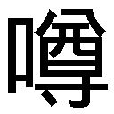
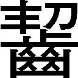

| 人類は衰退しました 02 | |
| 田中ロミオ | |
| 小学館 (2012) | |
小学館ｅＢｏｏｋｓ
人類は衰退しました ２
田中ロミオ
イラスト 戸部淑
夜更かしする日々が続いていました。
昨夜も夜中の三時まで模型作りに熱中してしまい、遅刻は確実かと思われました。幸いここ一か月の精勤で身に付いた習慣は、わずか四時間の睡眠にもかかわらず、きっちりと定時に目覚めさせてくれました。四十五秒で着替えをすませ荷物をひっつかんで部屋を飛び出し、朝食がわりにリンゴをひとつポッケに押しこみ、颯爽と出勤......！
......したところで目が覚めました。昼すぎでした。
「きゃー」
今日こそは七時起きして九時には出勤、夕方に帰宅して遅くとも十二時には就寝することで生活サイクル正常化をはかろうとしていたのに、また「明日こそ頑張る」状態。
こんな生活を続けていたら、しまいには夜行性の人になってしまいそうです。
「それだけは、避けたい......」
身を引き起こし、重い目蓋を持ち上げ、だるい体を引きずって出勤し、なんとか仕事に取りかかりました。こんなご時世ですから、仕事と申しましても暇なものです。それが今日ばかりは次から次へと相談ごとが舞いこんできます。「まあ、倉庫を妖精さんが占拠してしまった？ ええ？ こちらは切り倒す木の上に妖精さんの巣が発見された？ 畑に野菜のかわりに妖精さんが埋まっていた？ それはいったいどういう状況なんですか？」わたしは働きに働きました。へとへとに疲れ果て帰宅すると、温かいシチューの匂いがわたしを包みこみました。
一口目を食べようとしたところで目が覚めました。二時でした。
「えええ───っ？」
痛恨......痛恨の二度寝！
さすがに三度寝に陥る愚は避けたく、即座に飛び起きます。改めて時計を確認してみると、やはり十四時を過ぎていました。さすがにここまでひどい寝坊ははじめてです。
家に人の気配がありません。唯一の同居人である祖父は、とうの昔に事務所に行ったのでしょう。たとえやることがなくても出勤するのが暗黙の了解でした。
「あああ、なんというミス、まったく」
遅れてでも出勤し、所長である祖父から皮肉のひとつふたつをいただくことが、本日の初仕事ということになりそうです。ため息。
となれば今から焦っても仕方ないので、ゆっくりと身支度を調えることにしました。
なかなか短くするタイミングと理由が見つからないまま伸ばしてきた長～い髪をぼんやりとブラッシングしながら、卓上に視線を向けますと。
「......ふふふ」
にんまりと笑みがこぼれるのを止めることができませぬ。
卓上に並んでいるミニチュア家具の模型。
マッチ箱製の棚、割った胡桃のカラのスープ皿、枯れ枝で作った机と椅子、寝台にはミニサイズのシーツと枕も、ふかふかな吸い取り紙をカットした絨毯、安全ピンを加工した物干し台、指ぬきは持ち手をつけて鍋に、歯車を嚙み合わせた焜炉はこれらの中でもなかなかの力作で実際に火を入れて使用することが可能。
そう、わたしが作っていた模型とは、ミニチュア家具。
一週間ほど前、妖精さんが遊びに来た時のために専用の椅子を作ろう、と思い立ったのがはじまりでした。
家にあるものを参考にして、可能な限り同じつくりを再現してみると、今度は机が欲しくなり、次いでカップが欲しくなり......と際限なく物欲が暴走してしまい──
「わたしの部屋がそっくり縮小されている......」
机の上には、我が部屋のジオラマができあがっていました。二枚だけですが壁板も立ててあります。四方を囲んでしまうと今度は家そのものの模型を作らないといけなくなるので、二枚の壁を直角に繫げただけの開放構造ですけれど。
「あ、そうそう、ひとつだけ忘れ物」
昨夜完成したばかりの最新作。
かの有名な名画モナリザ......の切手をおさめたミニミニ額縁を、この部屋でも実際に肖像画がある場所に掛けてやります。
肖像画は祖母が若い頃に描かせたもので、どうしても模型とは相違してしまうものの、さすがに絵柄までミニチュアで再現することはできません。
今はこれで我慢しておくことにします。
自分で言うのもアレですがどれもいい出来映えです。
もともと細々とした作業は得意で、かつて在学していた学舎でもパーティーをする時には飾り付けを作る際に腕前を発揮していたものです。
たとえばこのミニチュア椅子。
今わたしが座っているものと同じ形で、遠近法をうまく利用すればまったく同じ椅子がふたつ並んでいるように見せることも不可能ではないでしょう。
ほら、アレですよ。遠くに大きな椅子を置き、手前にミニチュアを置いて......という。
「あ、ここちょっと作りが甘い......」
窓からさしこむ陽光に透かすようにディテールを確かめると、作業用の精密ナイフを問題の部分にあてて動かすことしばし。
「これなら」
改良した椅子を置くと、ジオラマがぐんと完成度を増したように感じられました。
この家具を、はやく妖精さんたちに使ってもらいたい......。
そのとき、食器の割れる音が聞こえてきました。
「......え？」
炊事場の方からでした。行ってみると、食器台に立てて乾かしていたお皿が二枚ほど、床に落ちて無惨に割れておりました。
「どうして......？」
窓は閉じられていて風が吹きこんでいる様子もなし。調理台を眺めたわたしの眼前を、こぶりなニンジンがゴツゴツ揺れながら横切っていきます。
わたしの知る限りにおいて、ニンジンは自走しません。
「ちょっと、もし」
こんなことをしでかす存在に〝一種族だけ〟心当たりがあったりします。
「そこ行く妖精さんがた。どちらまで？」
問いかけを無視してすだだだーっと走り続けていきます。
わたしは手を伸ばし、ニンジンをつまみ上げます。ふたり分の足がニンジンの下にぶらーりとぶら下がりました。
「ニンジンなんてどうするんですか？」
くるりと面を反転させると、しがみついているモノと目が合います。二匹の茶色いネズミ。
「きゃあ、出た！」
ひっくり返った拍子に手からスッポ抜けたニンジンは、調理台の裏側に吸いこまれていきます。ゴソゴソとニンジンを引っ張る音が、どこかに逃げていきました。
「......ぬすまれた」
事務所に到着したのは十五時でした。
「重役出勤という言葉があってだな」
予想通りの言葉をかけてくれたのは、ここクスノキの里に存在する調停事務所の所長でもあるわたしの祖父。
「昼前には出ようと思っていたんですけど......ネズミが出て」
「ネズミ？」
「野菜を盗られました」
祖父はしばらく怪訝な顔をしていましたが、納得したように眉を動かし、目を手元の書類に戻します。
「......また出たか」
「前にもこんなことが？」
「たまに忍びこんでくるようだな」
「妖精さんかと思いましたよ」
「人間の食べ物は盗まないだろうしな」
ですよねぇ。
「それよりこれ見てみろ」と手にしていたものを持ち上げます。
書類かと思っていたら、手紙のようでした。受け取って目を通します。
『最近、里で奇妙な品が多数出回っているようです。妖精たちの悪戯のように思えますが、危険はないのでしょうか？ こちらで回収した一品を添えておきます』
「おや珍しい。投書ですね」
「今朝方、玄関横に置いてあった。手紙に添えられていた一品というのはこれだ」
おじいさんは机の上に長靴をでんと置きました。
「人間用サイズなんですね」
「履いてみなさい」
ずい、と長靴がわたしの側に押し出されてきます。
「......想像もつかない不思議なことを引き起こす長靴」
そんなものを履けと言われて少し戸惑います。手にとって中をのぞいたり、逆さにして振ってみたりしましたが、変わったところはなし。実際に使用してみなければわからない仕組みのようです。迷った末、えいやと長靴に足を突っこんでみると......。
「普通の履き心地のようですけど？」
「歩いてみろ」
サイズがあっていない長靴で、室内をぺったんぺったん歩き回ります。
異変はすぐに発生しました。
「あら？」
床を踏みしめるごとに響きはじめる水の音。片脚を持ち上げてみても、床は乾いたままで水滴ひとつなく。なのに歩けばがっぽがっぽという水音が。
「いつの間にか、靴の中に水が？」
片脚を抜いてみると、長靴の内側にだけたっぷりと水が溜まっていました。
「そういうものが、最近里のあちらこちらで見つかっているということらしいが」
「これはどんな仕組みなんでしょう？」
おじいさんは『太陽系ではこんなことは日常茶飯事』とばかりに平然としているのですが、わたしの方は驚きを隠せません。
「空気中の水分をかきあつめるくらいのことはしてそうだな」
「ただの長靴に見えるんですが......」
そんなメカニズムがどこに編みこまれているのか、本気でわかりません。
不思議長靴をためつすがめつしているわたしに、おじいさんは言いました。
「おまえ、見てきなさい」
「......わたしが？」
「ほっといても害があるとは思えないがな、まあ投書も来ていることだし、ちょうどいい。研修とでも思って里に聞きこみに行ってこい」
「まあ」
両手を前で重ね、目を伏せ、しずしずとおじいさんの机に歩み寄ります。
「わたくしに、不特定多数の方とお話しをしろと？」
「おまえときたら事務所と自宅を往復するだけの毎日ではないか。いい加減、里の人々とも交流をして、皆に頼られる調停官を目指してみたらどうなんだ？」
「知らない方とトークするのは苦手なのでして」
「それにこういう外回りは新入りの仕事だ」
「企画部志望なのに入社したら営業部送り、みたいな躍動的展開に少々戸惑っています」
「妙手ではないか」
わたしの創作性に対するあたたかな理解はまだまだ期待できないようです。
「......じゃあ、渋々行ってまいります」
「うむ」
そういうことになりましたとさ。
緑色の草絨毯を思わせる放牧地を、人と見ると体当たりで愛情表現してくる羊たちをかきわけて横断すると、スレート石を適当に重ねたような背の低い石塀（そう見えるだけでしっかり組まれています）に辿り着きます。石壁は道路を挟んで続いていて、この道なりに歩いていけば、五分ほどで里の人口密集地に入ります。
どこの家でもそろそろ夕飯の支度に取りかかっている頃合なのでしょう。あちこちの屋根から突き出た煙突から、煙が立ちのぼっていきます。このあたりはほとんどの人が自給自足を営んでいます。わたしたちのような、専門職に従事して対価をえている人間はごく少数派。
通貨制度が失われて幾星霜。文化的活動に携わる人々の生活を維持するため、配給札制度は導入されているのですが......自分で汗水垂らさずに食物をえることに、かすかな引け目を感じぬでもありません。ただでさえ人と話すのは苦手なのに......ですが仕事は仕事。
意を決して、一件目の戸口に向かいました。
「ご、ごめんください！」
見知らぬ人の住む見知らぬ家を訪問するという苦行、調査活動の一件目。
扉が開き、堅苦しそうなご婦人が出てきました。
「お忙しいところ失礼します。調停事務所の方から来た者ですが」
「事務所の方って......本当に調停事務所の関係者でいらっしゃるの？」
「ええと......許可を得て訪問しておりますが？」
「どこの許可？」
「祖父のです」
「何を言っているの？ あなた、怪しいわよ？」
「それでは失礼いたします」
「ちょっと！ なんなの？」
これでも限度いっぱいまで粘ったんです。
道に逃げ戻ってから戸口の方をうかがうと、ご婦人さんはまだ怪訝な顔をわたしに向けていました。視線に追い立てられその場から移動します。だいぶ離れてから、ようやく一息。いったいどこが悪かったでしょう。あの疑わしきは罰せよとでも言わんばかりの視線！
くじけそうです。
確かに自分でもちょっぴり不自然な訪問だったとは思いますが。
訪問するという行為には、途轍もないプレッシャーがありました。扉が開いた瞬間、頭の中がまっ白になって、喋っていることをうまくコントロールできなくなるのです。わたしの場合、知らない人と話すだけでもかなり疲れるタチなので、二重の緊張です。
「......せめて顔を知っている相手であれば」
学舎を卒業し、故郷に戻りもう一か月。いまだにわたしには里の友人というものが存在しません。ですが顔見知りということであれば、いないこともないのです。
配給札。衰退して減少した旧人類の、先細りとなった文化活動を支える、最後の分配制度。世界を陸路と海路で結ぶキャラバン隊は、まさに生命線といえるものです。このクスノキの里にも当然キャラバンはやってきます。この土地では手に入らないものや薬など、生きていくためにどうしても必要なもの、ごくごくわずかな嗜好品類、遠方の知人からの手紙......そうしたものを運んできてくれます。
キャラバンが逗留している間は、広場で毎日バザール。収穫期と並んで、里が活気づく時です。コンテナから放出された品々と引き替えに、里の余剰生産物を配給札で引き取り、キャラバンは再び貿易路へと戻っていくのです。
滞在していない時は、委託を受けた民家が雑貨や食料品を取り扱ってくれます。お店、と呼んでも良いでしょう。もちろん配給札が使えます。別に札でなくとも結構ですよ？ 物々交換、労働の対価、いずれでも結構。隙間だらけの制度ですね。けど欲得の薄れた旧人類に、過ぎた諍いはないのですから。
で、そうこうするうち左手に見えてきたのが、白壁の二階建てコテージ。こちら倉庫がわりの配給所となっております。委託民家は他にも何軒か存在しますが、わたしがよく利用しているのはこちらです。薬や食料が保存されている建物なのに、扉はあけっぱなし。店番もなく、食料品日用品その他が小屋の外まで飛び出して乱雑に並べられています。
人はいません。
かわりに軒先に椅子が置いてあって、その上に配給札を入れるための小箱がひとつ置かれているだけです。無人販売所のようなものです。のぞいてみると、箱の底に数枚の配給札が入れられているだけでした。実に無防備ですね。
「あのう、少々よろしいでしょうかー？」
呼びかけると、敷地の奥にある別の建物から、ふくよかなご婦人が姿を見せます。
「あらあ、学者先生のところの。いらっしゃい。今日はまた卵？ 朝の分はもう鮮度が落ちてるから、好きなだけ持っていってちょうだいな。そうそう、鶏のもも肉は召し上がる？ さっき夕食用にさばいたから、少しおわけできるのよ？」
この人当たりの良い奥さんは、店主さんです。卵のおばさん。そう呼ばれております。ご主人は農業、奥さんは養鶏家。だから。里では自分でトリを飼っている人も多いのですが、そうでない人々はこちらの奥さんからわけてもらうことになります。誰にも分けへだてなく接し、気だて気前も良くて、皆から愛されています。
卵はお菓子作りの基本。
材料調達に訪れるたびに幾度となくお声掛けいただいております。ありがたいことです。当方口下手ゆえなかなかお話を合わせることができず、いつも申し訳なく思っております。しかし本日は仕事で来ていることもあり、なんとかよそ行きの笑顔を向けて口を開きます。
「お忙しいところたいへんご無礼申し上げます。調停事務所御中気付の者ですが」
言語制御率は八〇パーセントを下回っているので多少のオイタはご容赦いただきたい。
「あら、お仕事でいらしたの？」
幸いニュアンスは通じたようです。
「はい、実は──」
投書の件を説明し、身の回りで変わった出来事が起こってないか尋ねてみますと。
「あらあ、そういえばうちの人がそんなこと言ってたわね。よくわからないけど、へんてこなものが出回っているって話じゃなくて？」
「ええ、その件です。何かご存じですか？」
「得体が知れないから持ち寄って、公民館に保存するとかしないとか」
おお、一挙にコンプリートできそうな気配。
「公民館ですね。わかりました。ご協力敬具いたします」
「お仕事大変でしょう。はいこれ、お駄賃」
奥さんは金平糖の小瓶をくれました。
「......あ、ありがとうございます」
この年でお駄賃......。
「ねえ、ところで私、すぐそこに小さな菜園を作ったのよ。今ね、ニンジンを育てているの。あなたお菓子を作れるんでしょう？ 今度キャロットケーキとかどうかしら？」
「あ、はい、できますよ」
「ニンジンって簡単なのねぇ。三月に種をまいたのがすくすく育って、もうそろそろ収穫できそうなのよ。シチューやスープにするだけじゃつまらないから、是非お願いしたいわ」
「ええ、お引き受けいたします」
「楽しみだわ！ よろしくねー！」
奥さんに見送られて、わたしは公民館に向かいました。
よかった、これで戸口から戸口へと訪問せずにすみそう。
下手に当たって砕けたりしないで、まずは知り合いから当たってみるものですねぇ。
公民館で祖父の名を出すと、仕事はすぐに終わってしまいました。
ほとんど反射的に手渡された木箱には、見たところ変わった部分のない日用品が無数放りこまれていました。それですべて、とのこと。
「本当に不思議な道具なんですかね......」
疑問に思いながらも木箱を抱えて事務所に帰投しますと、おじいさんは外出しているようでした。ひとまずひとりで、回収された道具の記録を行います。まずは例の長靴から。
「これは......どういう意図なのか」
履いていると中に水が溜まる長靴。雨の日に足下が濡れないよう履くのが長靴というもの。はっきり言って無意味な一品でしょう。こんなものを作るのは、妖精さんだけです。
妖精さん──現地球人類の振る舞いは、いまだ謎に満ちていて。
彼らと人との仲を取り持つためわたしたち調停官が制度化されましたが、何も明らかにされないかわりに何事も進展せず、両種族の関係は安定してしまい......。
「そして人は衰退しつつある、と」
虚しく長靴を箱に放りこみます。
「......だめ」
いくら調べても長靴の正体は摑めそうにありません。ひとまず長靴については空白。
木箱から別の道具を手に取ります。
「これは......パステル？」
見たまんまです。どこにもおかしなところのない、ありふれたパステル。しかしパステルは描くものでしょうから、使ってみないことには真価はわかりません。書類の空欄に線を引いてみました。すると引いた線はむくりと鎌首を白紙から引き剝がし、体（？）をたわませて書類を飛び出したのです。
「きゃあ!?」
ミミズやムカデを思わせる動きで机の上をのたうち回っていましたが、「きしゃー」と口（？）を開いて威嚇すると、ぴょんと床に飛び下りてそのまま蛇行していきます。開け放たれた窓に跳躍し、外に逃げ出していきました。三階からの勇敢なるダイブ。
「......なんという......意味不明な......」
......起きたままの出来事を記録するほかなさそうです。
次に木箱から取り出したのは、一本の小瓶。
コルクで栓がしてあって、中は乳白色の液体で隙間なく満たされています。
「牛乳瓶？」
にしては軽いものです。瓶の内側を白く塗りつぶしただけとも思えます。ブツを改めるには、栓を開ける以外に手はないでしょう。それなりの覚悟を決めて、片手に握りこんだコルクをひねり抜いていきます。キュポン、と小気味よい音がして、瓶から白色の煙がもうもうと噴出しはじめました。
煙の勢いはあまりにも強く、数秒で室内の視界は白一色になりました。
「何も見えないんですけどー！」
煙というのは普通、拡散する性質があるはずです。ところが妖精さんの煙は、ごろっとした塊を保ったまま〝わたあめ〟のような濃度で室内を満たしているのです。触れます。
「......いったいこの道具は......？」
瓶は空っぽになっていました。
底の部分に走り書きのように『SPARE』と書きこんであります。
「よび」
予備の雲？
わたしはふわふわの雲を、手づかみで窓の外に追い出しました。雲には浮力があるのか、窓の外に出るとふわふわ上空に昇っていきました。なるほど確かに、予備の雲。
「意味ない......」
今気づきましたが、これらは皆人間サイズの大きさで作られています。つまり人間さん用の道具として、作られたということ。妖精さんから人間に対する贈り物。
そうかそうかとうなずきながら、わたしは書類に
『予備の雲。雲が欲しい時に使用するもの』
と書きこみます。なんとなく摑みかけてきた気がしました。
机の上に、木箱の中身をざらーっとぶちまけます。ワッペンが目に付きました。コースターほどのサイズで、十二枚セット。表面にニコマークが描かれています。
事務所内をざっと見渡して、その中から一番〝いらなさそうなもの〟を探します。
「これですかね」
トーテムポールの置物。
よほど古いものなのか、すでに全体が黒ずんでいて、表面の彫りも消えかけているという......もはや垂直に立つ棒といっても過言ではない一品です。
裏面をはがしたワッペンを、トーテムポールに張り付けてみました。
『ううううう』
ニコマークが怨念めいた呻き声を発しました。
「喋った......」
しかし耳がないのか、こちらの言葉には反応しません。
『いてえええぇぇぇぇぇ』
苦痛を訴えている......。
『わすれるものか......わすれるものかぁぁぁぁ......』
人生を回顧している模様です。
『きりたおされたうらみぃぃぃぃ......けずられたうらみぃぃぃ』
このワッペンってもしかして？
『逝くぅ......』
「はい？」
ニコマークがさーっと黒ずみ、触ってもいないのにトーテムポールにヒビが入りました。
「おおお......死んだ......」
もともとかなり古いものでしたから、老衰かも。
「そうですね、この道具の効果は......」
考えをまとめ、書類にはこう書き記します。
『翻訳ワッペン。十二枚セット。物言わぬ物たちの言葉を代弁す』
もう解析とかはあきらめ、ありのままを記録することにしました。今までの道具についても。
『晴れた日の長靴。履くと水がたまる。水入り靴で歩いてちゃぷちゃぷ音を楽しむ』
『生きてる線を引けるパステル。引いた線が生きてる』
妖精さんの道具を次から次へと命名し、効力を確かめて、記録していきます。時間は瞬く間に過ぎていきました。
「おお、戻っていたか」おじいさんが戻ってきました。
「おかえりなさい」
「うむ。で、これが......そうなのかね？」
机に山と積まれたガラクタのようなそれを、興味半分で眺めています。
「今のところそれで全部だそうですよ」
「これは何だ？」
手に取っていたのは真っ黒い缶詰。
「それ、開かないんですよね。ですから確かめる方法がなくて」
「普通の缶詰に見えるが......」
「いろいろやってみたんですけど、穴ひとつ空きません。今のところ用途不明品です。ところで黒い穴って何でしょうね？」
「なんだと？」
おじいさんの声は少し強ばりました。
「ラベルに書いてありますよ。黒いラベルに黒い文字でわかりにくいでしょうけど、よくよく見ると......内容物：BLACK HOLE（一ヶ入り）......と。開かないことには食べられませんが」
「......開かないだろうな、地球上に存在する物理的手段では、どんな手を使ったとしても」
「そうなんですか？」
「これはもらっていいか？」
心なしか、おじいさんの声が弾んでいます。
「それは構いませんけど。でも開かない缶詰なんて、食べられないではないですか」
「食用じゃない。観賞用......いや、娯楽用......知的遊戯のためのものだろう」
おじいさんは缶詰を眺めてうっとりと息を吐きます。
「で、結局それはどういう物なんですか？」
「ブラックホールという天体については知らないか。宇宙科学なんてのも今や趣味的な学問......無用の長物となったわけだから、無理はない」
「宇宙に黒い穴でもあるんですか？」
「正解なんだがそれ......。まあ簡単に説明すれば、ここに星の残骸が入っているわけだ」
缶を三本の指で持ち上げて、そう言います。
「星の残骸って......いくら何でもそんなものが缶詰に入るとは......」
「本当にモノが入っているかどうかはわからん。宇宙で捕まえた天然ものか、あるいはフラスコの底で生み出されたような合成物か、あるいはジョークの一種か。最初から何も入っていないのかもしれんな。受け取り方次第だろう。ただこれをブラックホール缶と言うからには、缶詰自体に超重力を遮断する効果がなければおかしい。趣味人の視点で考えれば、そこに噓はつけないはず。この缶詰は実際にブラックホールを収納するに足る強度を付与されている。そうでなければジョークとして面白くないからな」
「はあ」
祖父ノリノリです。
「そんな頑丈なものを外部的手段によって破壊することはできんだろう。よって中身を確認することは不可能。ここに何が入っているか、あるいは何も入っていないのか、開けるまでわからないが開ける術はない。いやいや、もし開けてしまったら事ではないか。なにしろ地表に一瞬で超重力場が発生するのだからな」
「......確認、できないんですか？」
「そうだ。面白かろ？」
缶詰をてのひらで弄んで、ひとりご満悦の体。
「なんだかわかりませんけど、不祥事になったらおじいさんが責任取ってくださいね」
「いいぞ。もしこの缶詰が開き中身が本物だった場合、私がすべての責任を取ろう」
声を殺して笑いはじめました。男の浪漫、みたいなものなんでしょうかね。まあこっち方面はおじいさんに任せて、自分の仕事を進めることにしましょうか。
やることがあると時間の経過は早く感じられます。
日が暮れるまで、わたしは妖精道具を調べては記録するという、不毛だけど楽しい作業に没入していました。
翌日になっても、作業はまだ終わる気配がありません。
なにしろ道具は一山分もあり、まだようやく半分ほどを調べ終わったに過ぎないのです。
やることがないと人間はだめになります。うららかな陽光に照らされ長時間ぼんやりしていると、心の奥にこびりついた気持ちの不純物が落ち、悩みや不満がまったくなくなってしまう......眠気にも似た心地よさに包まれ、際限なく思考が停滞していくのです。だるーん、と。
あまり忙しいのはイヤですけど、建設的な仕事はいいものですね。
「ちょっと出てくるぞ」
おじいさんがいつものようにふらりと外出していきます。
ひとりっきりの事務所で、わたしは黙々と作業に没頭しました。
妖精道具はどれも不条理・意味不明・不可解なものばかりでしたが、刺激が続くと慣れが生じてさほどのことが起きても驚くことはなくなります。そんな中、まったくおかしなところのない計量スプーンは、かえってわたしの気を引いたのです。
見た目は、小振りのさじでした。計量用なので底が四角くなっていて、内側に目盛りが振られています。持ち手の部分に３２２という数字が浮き彫りになっています。数字が意味しているものは不明。振ってみても何も起きず、怪しいボタンやスイッチの類いもなし、言葉を発したり光ったり震えたり溶けたり合体したり飛んだりすることもありません。
「本当にただのスプーン？」
里の人たちがかき集めたものです。もしかすると手違いで、単なるスプーンがまぎれこむ可能性はあるでしょう。ただ......とわたしは思い直します。
計量スプーンの本来の用途......それは、お菓子作り。
「......試してみましょうか」
クッキー完成。
「何事もなく」
仕方ないので紅茶を淹れ、クッキーとともに自室に持ち帰ります。
そしてティータイム。まあちょうど午前のお茶の時間でしたから。
「結局、用途はわからずじまいですか」
スプーンをひょこひょこ振り回しながら、紅茶を口に運びます。勢いづいたスプーンが指先から離れ、くるくる回りながら天井まで跳ね上がってしまいました。予想外だったのは、天井に衝突したそれが勢いよくわたしの脳天に跳ね返ってきたことです。
すこーん、と鋭い痛みが............走りませんでした。
「おや？」
かわりに、なんだか奇妙な感覚が頭部にありました。
おそるおそる指先で探っていくと......スプーンが、わたしの頭に、垂直に、生えているではありませんかよ（動揺による言葉の乱れ）。
「............なん、で？」
角のようにそそり立つスプーンの柄を弄っていると、衝撃が遅れてやってきます。
「刺さっている!?」
わたしの頭に、頭頂に！
汲めど尽きせぬ知性の泉に！
血の気は引き、舌は渇き、体は震え。
このままにして治療を受けるべきなのでしょうが、理性の働く余地がないほど混乱していたわたしは、ほとんど反射的に引っこ抜いてしまいました。ぬるり、といやぁな感触とともにスプーンはわたしの手に収まります。幸い苦痛はまったくありません。
でも出血は避けられないところでしょうし、下手をすれば命にかかわる怪我かも......と傷口を再度指先で触診してみるのですが、見つけられません。
「そんなことは......」
いくら探っても傷口自体が見当たりません。指先にも血液や、またメルヘン世界では決して描写されてはいけないピンク色の思考用物質が付着することもありません。
スプーンを調べます。刺さっていた側には血がついているはずですから。
血や脳味噌のかわりに、スプーンになみなみと盛られていたのは粉でした。
「こ、これは......？」
少しだけ舐めてみます。
「薄力粉ですね」
実際は違うのかもしれないですが、舌触りだけで判断するならそれでした。
つまり長靴に湧いた水と同じで、薄力粉を生み出すスプーンであると。
人の頭の中から......。
試しに自分の片腕に突っこもうとしても、突き刺さることはなし。頭に向かって押しつけてみると、実に呆気なく──
「......入っちゃいましたか」
引っ張り出すと、スプーンにはこんもりと薄力粉。
「無限に......お菓子の材料が......」
怖い気もしたのですが、妖精さんの作るものなんだから危険なはずはないのです。このスプーンはきっと、人の信じる気持ちをお菓子の素材に変えるアイテムなのでしょう。材料だってタダではないのです。でもこれからは、いくらでも望むだけ手に入る......。
わたしの手は、感動に浸っている最中もせっせと薄力粉を頭から掬い続けました。
たちまち机の上には、薄力粉の山盛りが。
突然、眩暈に襲われて、視界がさーっと暗転していきます。
「おっと......」
椅子の背もたれに手をつき、大きく息を吐いて気持ちを落ち着けます。幸い視力はすぐに回復します。軽い貧血だったようです。ひとまずは椅子に腰をおろし、瞬時にわいた額の汗をぬぐいます。落ち着くと同時に、周囲に違和感を覚えました。
どこがおかしいのでしょう？ 変化などどこにも見られません。壁も机も椅子、壁にかかった額縁も見慣れたものばかりです。ただ机の上に置いてあったもの......模型とクッキーと薄力粉だけが消失しています。今までそこにあったはずなんですが。
目をこすって見直してみても、なくなったものは出てきません。
そう、変わったところはどこにもないのです。強いて奇妙なものといえば、この巨大な身の丈ほどにも巨大化したスプーンくらいのものでしょう。
身 の 丈 ほ ど の ス プ ー ン ──
３、２、１、０！（秒読み）
「きゃ────っ、でっか──────いっ!!」
ノー！ スーパーサイズ、ノー！
計量スプーンが巨大化してしまっただなんて！
スコップか、そうでなければ鉄塊ですよコンナノ。
変化はもうひとつありました。
「......数字が......変わってる？」
31。
確か最初は３２０くらいあったはずです。
この数字が意味するもの......なんでしょうね。仮にスプーンのサイズを示しているのだとすれば、３２０から31になったというのは矛盾していますし。
「わからない......いったいどういうことなのか......」
いったん戻って、おじいさんに相談してみた方が良さそうです。スプーンを背負い、ドアを開けて外界に飛び出します。
広い。
あまりにも広い世界が、そこに広がっていました。
足下は木材で、巨大な節目がときおり点々と穿たれています。そばには白い小山がそびえたっていて、まるで雪山の景観を見るようです。粉を盛り上げたものにも見えます。
また別の方角には、こんがり小麦色の板材が何枚も重ねられ、放置されていました。巨大な焼き菓子のようにも見えました。
本来なら廊下だったそこは、今や広大な板張りの平原になっていたわけです。
遠く空を眺めても、霞がかっていて向こうに何があるのか見通すことさえできません。広々とした空間を進むと、じきに果てにたどり着きます。
断崖。
大地は、途中からのこぎりで断ち切られたように消失してしまっていました。へりによつんばいになり、眼下をのぞきこんでみると、巨大な椅子がでんと鎮座しているのが見えます。
「........................えっと」
駆け足で部屋に戻ります。部屋にかけてあった額縁......祖母の肖像画に飛びつきますと。
「モナリザさんじゃないですか！」
祖母ではなく、モナリザ切手が入った額縁だったのです。
「じ、じゃあ!?」
頭を抱えて、状況を整理してみると、結論はひとつ。
「ほかならぬこのわたしが小さくなってるんですね───っ!!」
ミニチュア家具の部屋。薄力粉の山。板材のようなクッキー。そして巨大なスプーン。
ここは、机の上の世界です！
「あああああ」
いったいなぜ？ どうして？ ついさっきまで人間サイズだったのに？
混乱ばかりが膨れあがっていきます。虚空をひっかきながら右往左往しているうち、現実の重みがどっと肩に乗って、わたしはその場にしゃがみこんでしまいました。
「......このスプーンのせい？」
ほかに原因は考えられませんでした。
「どうしましょう......これ、壊したら元に戻るものでしょうか？」
逆に破壊することで、二度と人間に戻ることができなくなるかもしれず、うかつな判断は禁物です。よろめきながらミニチュアハウス（開放展示仕様）に戻り、同じスケールになってみるとさほど精巧でもない椅子に腰掛けました。今後どうするかを考えるためです。
「まず、相談」
困ったりわからないことがあったら、調べる前にまず質問する。これですよ。
しかしこのサイズで相談できるのは、それこそ妖精さんくらいの気がします。
「おじいさんがいてくれたら......」
事務所まで行って相談してみましょうか？
いいえ、この身の丈で事務所に行くのはとんでもない長旅です。段差だってありますし、そもそもこの机から下りる見通しだってつきませんよ。ドアひとつ自力では開けられない。階段だってのぼれるかどうか。ああ、小さいって不便......。
「いっそ、このままここで暮らしましょうかね」
巨大化したお菓子はあるし。しばらく食べ物にも不自由しないですむでしょう。
壁は二面しかなく、天井もすこーんと抜けていますが〝本当の屋根〟がずっと上方にあるので雨露の心配はなし。
「なんだ、暮らし安心」
体重を背もたれに預け、目を閉じます。穏やかな気持ちがわたしを包んでいました。
「あきらめましょう」
どうしようもない事態に遭遇したら、まずあきらめる。これ。おたおたするのは知的種族としてみっともないですからね。誇り高く覚悟を決めるのが良いでしょう。
玄関の方からおじいさんが帰ってきた気配がしました。
「あーっ、おじいさーん!! おじいさ───ん！ たすけて────────っ!!」
生存本能全開で叫びます。
「おんじー！ おんじ───────────────────っ!! 可愛い孫娘がたいへんなことに──────っ!!」
ズシンズシンという足の響きが、わたしの部屋に接近してきます。
「いるのか？」という声とともに扉が開きます。
「ここです！ ここにいまーす！」
両腕をふりふり何度も飛び上がってみせます。
巨大なおじいさん......その目線が、わたしにぴたりと止まりました。
「おお、これは......！」
「たすけてくださいっ、こんなことになってしまって！」
接近してくるおじいさんは、サイズも手伝ってかいつも以上に頼もしく、また知性的に見えました。
「実はかくかくでー！ しかじかでー!?」
事情説明（必死度ＭＡＸ）。
「ふむふむ」
「こ、このスプーンです！ このスプーンがわたしをこんなポータブルな体に！ 持ち運びのしやすい体に───っ！」
おじいさんは、小さなものを慈しむ目で言いました。
「どうやら、迷いこんでしまったようだな、妖精さん」
はい？
「あのっ、わたし妖精さんじゃなくて、孫なんですけどねー？」
サイズは小さくなっていても、姿はそのままではないんでしょうか？
おじいさんはわたしに顔を寄せ、よそ行きの態度で言いました。
「すまんな。孫は今、どこかに出かけているようでな」
おやぁ？
「ですから、わたしがその孫......孫の方から来た者なんですけど？」
「ほう、そうなのかい。遊びに来たのかい」
なんと？
どうも、言葉がうまく伝わっていない？
声が小さくて、耳まで届いていない、んでしょうか？
「遊びではなく事件なんですってばー！」
飛び跳ねながらそう訴えるのですが。
「ははは、遊びも大変かね。確かに言うとおりかもしれんな」
はてなー？
決して通じていないわけではなく、ごく断片的に単語が拾われているような......。なのに意味が通らないとは、いかなることでしょう？
どうやらまだ軽く混乱しているようなので、自分の発する言葉に冷静に意識を集中してみることにしました。
「今日はひとりなのかね？」
「あい」
わたし、こんなかん高い声でしたっけ？
「そのスプーンがお気に入りらしいな」
そう、スプーン。本日のキーアイテムを天高く掲げ、アピールします。
「む？」
口にする言葉をよく吟味します。
『ご覧ください所長。非常に不可思議なスプーンです。人を縮める力を有していて、そのメカニズムはいまだ謎に包まれたままなのです。万一、人にとって危険なものであるなら、迅速な調査による早期災害予防が必要です。それが調停官として為すべき義務というもの』
......というセリフを言おうとしていたのですが、実際に口から出たのは──
「おじい、おじい、みるです？」
あれれー!?
わたしのセリフが単純化されてしまっている？
もしかして、今までの言葉もわたしの認識上のそれよりずっとシンプルなものに......？
「計量スプーンかね？ この数字はなんだろうな」
おじいさんはスプーンを手に取りました。
『注意してください。そのスプーンで頭をすくうと、人として大切なものを粉に変換してしまうようなのです！』
と説明しようとして、
「すくうです？」
何ひとつ説明できない妖精語の世界。
「うむ、スプーンは普通、すくうものだな」
「すくーん（訳：頭すくったらだめですよー）」
かなり簡単な構文だったんですけどねぇ！
「数字が彫りこまれているな。１２７５......とあるようだが？」
わたしの時よりいっぱいあるのが気になりますが、今はそれどころではありません。
「いっぱいあるですー」
それどころじゃないというのに、脊髄で反応するんですね、この体。
どうも単に小さくなった以上に、言葉遣いや外見の印象も低下しているようです。だからおじいさんの目にも、そのあたりの妖精さんと同じようにしか見えない、と。
「ほら、これは返そう」
「めでたーい」
謎がとけるまでスプーンを失うわけにはいかない。大切に背負って固定しておきます。
「孫は事務所の方にいるのかもしれん。今から行って、君が来ていることを伝えてこよう。そこにクッキーもあるようだし、ひとりにして悪いがゆっくりしていくといい」
おじいさんは最後までよそ行きの顔をしたまま、部屋を出て行ってしまいます。
ああ......唯一の命綱が去ってしまった。
「おじいー、さーならー」
悲しくて心細いのに、なんか愛想良く両手を振ってます、わたしの体......。
「むむー」
こうなったら、もう本当に妖精さん自身にあたるしかないようです。
神出鬼没の妖精さんを探し出し、スプーンについて問いただし、元の姿に戻してもらう方法を聞くのです。
クッキーを数枚引っ張り出し、敷き紙を破り取って風呂敷がわりに包みます。
これはお弁当。
で──
妖精さんは高いところから飛び下りても死なないはず。ノミなどの小さい虫類も同じで、身が軽いから、身長の何倍もの高さから落ちても平気なのです。今のわたしもかなり身が軽い......と思うのですが、が、が。
「たかーい」
机のへりから見下ろす下界は、奈落の底のようでした。
高い！ 怖い！ 死ねそう！
「あ、そおだ」
椅子......椅子を中継地点にして飛び下りればなんとかなるのでは？
「んー......まだたかーい」
奈落が半分の深さになっただけですからねぇ。無理でしょう。
「でもいっちゃいます？」
へ？
覚悟をする前に、お気楽ボディが勝手にぴょんとダイブしちゃいました。
心と体に意見の不一致ってぇぇぇぇぇぇぇ──！
「......いきてたー？」
わたしの体は、傷ひとつなく椅子に着地していました。
「よーせー、です？（訳：どうやら身体機能も妖精さん並みになっているようですね）」
次は、椅子から床にぴょん。これまた危なげなく着地。足にもまったく痛みはなし。
今のわたしが十センチくらいだとして、椅子の座るところまでの高さが四十センチくらい......人間の感覚だと六～七メートルくらいの高さはへっちゃらということになりますか。
「ちゃらー♪」
妖精さんたちも、平気で高所からピョンピョンやってましたね。
よほどの高さでなければ、気にしないでも良いということですか。
「よーし」
ちょぴっとだけえた勇気を嚙みしめます。妖精さんに、会いに行かねば。
そうだ、せっかくですから......棚の一番下にある段、無造作に突っこんである籐籠のひとつに潜りこみます。いずれ整理しようと思って放置していた玩具類が突っこんであります。
「ありーん」
カーキ色のハーフパンツと、ポケットのいっぱいついた半袖シャツ。うまい具合にブーツもセットで発掘。お人形さん用の探検ルックひとそろいです。
子供の頃のものですが、そのうち妖精さんにあげようと思って、捨てずに取っておいたのです。まさか自分で使用することになるとは思いませんでしたけど......。
「あと、へるめっと、あるとよいです？」
残念ながらヘルメットはありません。
そこで鉢植えに挿してあった卵のカラをひとつ、頭にかぶることにしました。
スプーンとお弁当を背負って、準備ＯＫ。
今日のフィールドワークは......大冒険になりそうです。
「じょーい！（訳：楽しみます！）」
いや、死活問題なんで......真面目にやるんですってば。
わたしの体さん、わかってますか？
扉の隙間から廊下に出ます。今度こそ本物の、板張りの廊下を出口に向かって進む道中、なぜかわたしの足はピコピコ可愛らしい音を立てていました。ブーツに仕掛けがあるわけでもなく、どうやらこういうものらしいのです。妖精音？
人間が小さくなる。
そんな物語はいくつかあったと思います。お話では、スケールが小さくなったことによる世界の見え方の変化、というものはあまり突っこまれていなかったよう記憶しています。
違いは、思ったよりずっとたくさんありました。
まず遠近感が決定的におかしくなっているのです。
近い場所にあるものは普通に目視できますが、遠くまで見渡そうとすると人間の時のようにうまくいかないのです。具体的には、天井。見上げると、人間の時には普通に見えていた天井が......不思議と霞んでいます。物理的な霧に視線が阻まれているのではないようです。
妖精さんサイズになった肉体の、限定された認識力が、視界全域に及んでいない......視覚情報を処理できていない、というイメージでしょうか。乱暴なたとえですが、たとえば人間だって裸眼では赤外線を目視することはできないわけです。
同じように、人の見ているものでも妖精さんに見えないもの......単に可視光線だけの話にとどまらず、理解や認知の届かないエリアや概念が、あるのではないか。
霧に対する、わたしなりの仮説です。
天井があるはずの場所にわだかまる霧間から光だけが差しこんでくる様子は......神々しい宗教画の背景を思わせました。
「......はー」
しばらく歩くと、左右のそそり立つような壁（廊下の壁ですが）がふっと消失し、広大な空間に抜けます。印象は違って見えますが、恐らく食卓のある部屋でしょう。大地から天に向かって突き刺さる、つるりと樹皮が剝かれたみたいな柱がいくつか林立していました。
たぶん......机と椅子の脚。
だとしたら脚の間をぬって進めば、じきに出口のはず。
家を出るだけでもこれだけ苦労している......外に出たらどうなってしまうのか。不安が襲ってきます。しかも遠出するだけではなく、妖精さんと遭遇する必要まである、と。自室で彼らが訪れるのを待つことも考えましたが、時に何日もやってこないことがあるので、とても待機という選択肢は選べません。思考にふけっていると目の前に、ダンテの地獄の門を思わせる、荘厳な我が家の扉が見えてきました。
「でかん（訳：とても大きいです）」
案の定、扉上方は遠近が歪むくらいに引き伸ばされて、認知不可能領域を示す霧の中に消えていました。扉を開けるのはひとりの力では無理そうですが、すぐ隣に小さな換気口があって、そこは今のわたしでもゆうゆう通れるサイズ。
「いってきー」
わたし（の体）はムズムズを抑えきれず、無用にダッシュしてその小穴に飛びこんでいきました。きゃー。
妖精さんの本能では、未知なる場所へはヘッドスライディングするのが鉄則のようです。
思考を司る中のわたしといたしましては、もっと慎重さを重視して欲しいところです。今回は、幸い無事に外に出られました。
「おお？」
外。野外。ありふれたその世界を、いつもより十倍は眩しく感じます。
ひかりが、あまりにも強い。室内と野外の明るさに、こんなに違いがあるとは思いませんでした。天からの光芒は、滝となって流れ落ちる水流を連想させます。光でありながら緩やかな弧を描いているように見えるのは、妖精眼のせいでしょうか。有機的な曲線はいきいきとした存在感を宿し、幾条にも枝わかれしてわたしを取り巻くように降ってきます。
虚飾されているのは陽光だけではありません。
寒々しく露出しただけの地面が、今はふっくらとしたパンケーキのように思えます。まばらに生えた雑草は、青々と育った若麦の躍動を示し、何気なく転がっている石ころが、自然に削り出されてどっしりと腰を据える雄大な天然石の風格です。
小さな目で見る世界は、あまりにも玄妙で、美しいものでした。
不意にわたしは、自然の中に駆けていき、そのまま溶けてまじりあってしまいたいという、らちもない考えに支配されていました。
「うーん、それはまたこんどでー」
......いや、今度とかじゃなくて、一生やったらダメなんですけどね。
夢追いの結末は、いつだって生々しいデッドエンドです。
ああ、新しい展開になるたびに、妖精的本能が理性を浸食していっている気が......。
「みはらしのいいところにいきたいですなー」
そうそう、妖精さんのいそうな場所を見極めるんですよ。
「そこで、おべんと？」
違います！
家の付近に丘があります。そこに行けば、周囲が一望できることでしょう。
「ごっごー」
丘のありそうな方角に、爪先を向けました。
......うまく辿り着ければ、ですけどね。
はい、迷いました。
バッチリ遭難完了です。ありがとうございます。平素はお世話になっております。
「どこー!?」
さすがに心身共にちょっぴり焦ります。
平原を歩いていたものの、雑草の屋根に陽光が遮られていたため、いつの間にか深い森の中に迷いこんでいたことに気がつかなかったようです。今や、わたしは鬱蒼と生い茂るジャングルのど真ん中。人間サイズなら、ちょっとした草むら程度の場所なんでしょうけど。
ああ、妖精さんたちが人間を特別視する理由がちょっとわかる......。
でもいまのわたしは人間様ではなく、妖精さんです。
「どーしますかねー？」
ぽかーんとその場に立ち尽くしていると、草むらががさりと音を立てました。
姿を見せたのは、一匹の巨大ダンゴムシです。
三十センチ近いサイズがあります。
もっとも身長十センチ足らずの今のわたしから見てのことなので、実際は一・五センチ程度の多少大きな個体に過ぎないはずです。
巨大インセクト出現。普段だったら飛び上がってしまいそうな局面ですが、今のわたしはだいぶ妖精さんの図太さに支配されているのか、まったく平気なのです。
ダンゴムシはわたしの存在を気に留めることもなく、触角で地面を手繰りながら少しずつ前進していきます。
しかもよく聞くと、ブツブツと呟いているのです。このダンゴムシ。
「食物。食物。食物。暗い所。湿った所。暗い所。食物。食物。暗い所......」
言葉が理解できるとは驚きです。
これも妖精さんボディーの持つ秘めたる力でしょうか。
「食物。暗い所。食物。暗い所」
ダンゴムシは暗い所が好きですよね。プランターの下とか。
「もしもしー？」
「食物」
「あのー？」
「暗い所」
会話はまるで成立しません。
淡々と欲求を口にするだけで、人間的な情緒といいますか、あたたかみはまったく宿っていない感じです。ダンゴムシ語が意思疎通用ではないのは明らかです。彼はただ単に本能にまかせて鳴いているに過ぎず、この耳も有意を抽出しているだけだったりするのかも。
触角ダウジングにふけっていたダンゴムシは、湿った土に顔を突っこみ、猛然と食事をはじめました。腐りかけて糸を引いた土をもそもそと咀嚼しています。
ひたむきな姿を見ていると、邪魔したくてうずうずしてくるではありませんか。
でもそんな可哀想なこと......できるわけがない！ 絶対にしません！
「むしけらー」
土手っ腹、蹴っ飛ばしちゃいました。
いや、体が勝手にですね......。
可哀想にダンゴムシさん、くるりと丸まってしまいました。
「防御。防御。防御。防御......」
恐怖で混乱しているのか、かすかに震えています。
「すんません......」
そそくさとその場を離れました。
考えなしに歩き回ったのがいけなかったのか、さっきよりずっと暗い場所に迷いこんでしまっていました。
「おなか、すきすき」
迷っている現状をひとまず棚上げし、お弁当にすべきかどうか検討します。
ここは土のにおいが妙に強く、なんとなく落ち着かない場所です。長くとどまってはいけないような気がしました。ああ、だけど食べたい。今すぐ食べたい。もう我慢できない。
そう思った時には、お弁当として持ってきた包みを広げていました。
クッキー一枚が顔よりも巨大です。これはお得。これだけボリュームがあれば、一枚の半分で一食分になりそうです。大口を開けて嚙み砕くと、ふわっとした感触が口いっぱいに広がります。搾り袋で作ったクッキーは、ちょっとウェットな食感が幸せでした。
にわかに視界が黒一色に染まりました。
「......くらくないです？」
頭がかたいものにがっちりと固定され、袋でも被せられたみたいに真っ暗です。袋の奥の方から生臭く生暖かい地響きみたいな息遣いが......これ、まさか、クチバシなんじゃあ？
食事中で警戒が薄れたのか、あるいは妖精ボディーにもともと警戒能力が備わっていなかったのか。背後から舞い降りた凶鳥に、かぶりつかれていたのです。
ひょいと天高く持ち上げられました。
鳥はエサ（わたし）をくわえたまま天を仰ぎ、カッカッカと揺すって嚥下していきます。
「ぴ───────────────────────っ!?」
鳥においしく食べられるのはイヤです───！
死ぬほどもがいてクチバシを脱し、脱兎の如く逃走しました。
「にんげんですからー！ にんげんですから───！」
「餌。餌。餌。餌」
ああ、鳥の言葉がわかる！ けどわかっても全然嬉しくないですけどー！
餌ーと叫びつつ、鳥は追いかけてきました。
「餌。食う。餌。食う」
必死に逃げはしますが、向こうの方が足が速く、たちまち追いつかれちゃいました。
「んぴー!?」
あっ、と思った時にはすでに遅く、クチバシの一撃はわたしの頭に突き刺さりました。
「......あーん......」
頭部に致命傷を受けたことで、意識がゆっくりと停止していきます。
ああ、ああ、なんということでしょう！
わたしの人生は、今ここに終わりを告げたのでした。
人類は衰退しました ＦＩＮ
解説（編集部）
有史以来、世界は万物の深奥に触れようとする探求者たちの手によって少しずつ切り開かれてきた。それは実に偉大な行いのはずだが、なぜか我々はあまりにもその事実に無頓着である。これは仕方ないことなのだろうか？
日々の暮らしにその思考力の大半を費やさざるを得ない複雑な現代社会を生きる我々にとって、学術的回顧などというものは一部好事家以外にはなんの価値も持たないというのは、確かに正しいのだろう。
だが考えてもみて欲しい。五億平方キロを超える広大無辺な地表を支配し、そのあらゆる資源と土壌を意のままに操る唯一無二の知的生命体である我々は、もはや飢えることもなく恐ろしい獣に命を脅かされることもないのではなかったか。弱い肉体しか持たぬ我々を、食物連鎖の頂点に押し上げたものは知性であり未知を既知へと至らしめる探求心ではなかったか。そのことを考えた時、多少の時間を割いてこの愚劣かつ未熟な探求者の哀れな末路について、失笑まじりに思いを馳せるのも無益な試みではないはずだ。
本書はそうした失笑まじりの探求心を持つ勤勉な読者に向けて執筆されたもので──
って、待って待ってその優しくない解説待って!!
「............あんれー？」
砕かれたはずの頭が......痛くない。ＦＩＮになってない。生きているようです。
「ウザ。ウザ。ウザウザ」
貫かれたのはメットがわりにかぶっていた卵のカラだけでした。クチバシがカラから抜けなくなった鳥は、その場で首をぶん回してじたばた暴れています。
生存のチャンス！
ヘッドスライディングで手近な茂みに逃げこみます。草をかきわけて奥に。
狩猟本能に支配された鳥って怖い。いや、鳥だけじゃなくて肉食のありとあらゆる生物に、これからは気を払っていかないといけないわけですね。
......弱肉強食のノウハウがないのはどうしたらいいんでしょうね。
「まいた？ まいた？」
鳥が追いかけてくる気配はありません。
ほっと胸をひとなでします。
これからは開けた場所に出る時は注意しないとですね。
しかし地図も土地勘もなく、あてどもなく歩き回っている現状、新しい展開は望めるんでしょうか......と思っていると、村が見えました。
「ごつごーしゅぎです？（訳：とても良いタイミングです）」
村は枯れ木をくりぬいたうろの内部にありました。粗末な藁葺き小屋が、寄り添うように並んでいます。
ここなら鳥も入りこめないし、外敵が来ても枯れ木の城壁が守ってくれそうです。
村がある。外敵への備えがある。つまりこれは、知的生命体がここに住んでいる、ということでありましょう。そして現在、地球上で旧人類以外の知的種族と言えば？
「ようせいさーん！ ようせいさ───ん！ おたすけー!!」
民家のひとつにへばりつき、立て板も同然の扉を両手と片脚で激烈にノックします。しばらくして、静かに扉が開きました。藁葺き小屋の中から、ふさふさした栗色の毛をしたちんまい生き物が姿を見せます。
「なんすか？」
「......あらん？」わたしの知ってる妖精さんと違う。「どちらさまです？」
「訪問してきた方が聞くっすか、それ？」
小屋の住人、齧歯目ネズミ科キヌゲネズミ亜科に属する小型のほ乳類......つまりハムスターは、『君ちょっと空気読めてないんじゃない？』という陰湿なコミュニケーションルール扇動者のようなオーラを全身から発していました。
わたしは小屋に招き入れられ、畜生の接待を受けることになりました。
「どうぞ。お冷やっす」
「どんもー」
平石のテーブル上に、水滴の乗った小さな若葉が置かれます。彼らの食器のようです。
「今朝一番の朝露っすから、うまいっすよ」
「けっこうなおてまえ？」
若葉ごと水滴に舌をつけると、舌に心地よいシャキッとした冷水でした。ひとつぶでもコップ一杯分くらいはゆうにありそうです。
「僕ら、ジャンガリアンハムスターって種族でして」
「はー」
対面で石の椅子にお尻を乗せたハムスターさんは、器用にバランスを取ってちゃんと人間のような座り方をしていました。質素なものですけどベストを羽織っていたりして、なかなかどうして知的です。
「まあこう言っちゃアレですけど、この地球で唯一無二の知的文明っす」
「......そーおもってるですかー」
まあ自称する分には自由ですからね。
「で、あなたなんですけど......そんな話し方しかできないっすか？」
「へいほ？」
「見たところ、我々ほどではないにしても知能が高いようですから......会話くらいまともにできないのかなと」
「まあ、しりあすもー......」ぐっと意識を集中して、本能をめいっぱい抑制すれば。「......できないこともありませんがね」
「僕らには知的な話し方がマッチするっすよ」
「はあ......」
すごく疲れるんですけどね......。
さて、聞きたいことは山のようにあります。どこから突っついたものか。考えていると、向こうの方から問いかけてきました。
「あのー、質問なんですが......あなた、いったい何者っす？」
「わたしですか？ わたしは一介の人間ですが」
「ニンゲン......？」
「旧人類ですよ。地球の支配者だった。あの有名な」
ハムスターは口元を手で押さえて、くすくすと笑いを嚙み殺しました。吹き出すたびに頰袋がぷーっと膨れます。
「またまたそんなご冗談。地球の支配者は僕たちハムスターっすよ」
どうやらこの人、広い世界というものを知らないご様子。
「僕はヤメタという名前です。この名には、〝ある意味賢い〟って意味があるっすよ」
「会話が通じることは驚きました」
「知的種族っすから」
「でも知的って言うわりには......」
小屋の内部を見渡します。家具といえる家具はほとんど見当たりません。
無加工の板きれで囲んだだけの壁は薄く、屋根は簡素な藁葺き。唯一ともいえる家具もそのあたりの石を積んだだけのもの。棚のひとつもなく、日用品はそのまま壁際に立てかけているだけ。木の実を貯めている壺も、非常に原始的なつくり......というか土器ですよこれ。
「こうして見ると、けっこう生活のレベルは......健気ですよね？」
「言葉選んでるっすね......あなた......」
「いえ、メッソーもない！」
実際、この藁葺き住居から地球最高の知的文明レベルに達するには、万年単位が必要な気がしますが......さすがに言えません。
「ところで、ここにはひとりでお住まいですか？」
「いえ、文明を築いてるっすから、仲間がいるっす。今はちょっと仕事に行ってるっす」
「なるほど......じゃあこの集落のほかに......国が？」
「クニってなんすか？」
く、国の概念が存在してない？
「......気にしないでください。つまり、ここに根付いた文明なわけですね」
「いえ、実はそういうわけでもないっす」
ヤメタさんはもともと撫で気味の肩をさらに落としました。
「ここに来る前は、もうちょっと南の方にいたっす。さらにその前は、もっともっと南の方にいたっす。流れ流れて、こんなへんぴなところに追いやられたっす」
「またそれはどうして？」
「ええ、よく聞いてくれたっす」
ヤメタさんは片手で頰のあたりをぐしぐししてから、おもむろに話しはじめたのです。
「......実は、おそろしいイタチたちと長年にわたる戦争が続いているっす」
「戦争ですか？」
「ええ、僕らと彼らは宿敵同士っす。僕らの一族史は、血で血を洗う闘争の歴史っすよ」
「ははあ、食べられまくってきた？」
「それは違うっす。僕らは彼らの侵略に対して、敢然と立ち向かってきたっす。そう、勇ましく尻尾を立ててね」
「立ち向かうって、相手は天敵なんでしょう？」
「手強い相手っす。けど体格差は文明の力でカバーするっす」
「文明、と言いましてもね......」
室内を見渡して、その文明の度合いとやらを推量します。
「言いたいことはわかるっす。けっこうショボいって思ってるっすよね？」
「いえ、なんともはや、その通りなんですが......」
「本当なら僕らハムスターの一族の文明は、もっと高レベルの水準に達していておかしくはないほどの知性を持っているっす」
なんせ唯一無二の知的生命ですから、とヤメタさんは勝ち誇るように頰を膨らませました。
「しかし現実がこれでは......もうどうしようもないでしょう」
部屋の片隅に、石器の斧があるのが見えました。
「それは疲弊しているせいっす。長年にわたる戦いのせいで、土地を失い食料を失い仲間を失い......それがなければ僕らは今頃、もっと大きな集落をつくれていたはずっす」
「人口の方はどのくらいいらっしゃるので？」
「ちょっと前までは十五匹もいたっすが......今は」
「今は？」
ヤメタさんはつぶらな瞳でじっとわたしを見つめます。
「......六匹」
「極少数」
絶滅のおそれがある野生生物（レッドリスト）じゃないですか。
そうか、ハムスターって今そんなことになってるんですか......。
「その顔は......みくびってるっすね？」
「いえ、そんなことは......」
哀れんでいるだけです。
「よござんしょ。機密っすけど、特別にお見せします」
ぴょこんと石を飛び下りて、わたしを招きました。
「何をです？」
無意味に頰袋を膨らませてから、ヤメタさんは勝ち誇った顔で言いました。
「......スーパーテクノロジーっす」
集落の奥の方に、特別に大きな小屋があり、わたしはそこに案内されました。
「ここに、その超科学技術の結集が置かれてるっすよ。さ、入ってください」
彼に続いて中に入ると、藁葺きとしてはかなり広い部屋の中央に、〝その装置〟が置かれていました。
「こ、これは......！」
「そうっす。これっす。ハムスターの英知を集めて生み出された......熱発光装置っすー！」
装置は透明な流線型の殻で覆われています。その内部中空には漆黒の細長い物質が恭しく両側から掲げられていて、装置の中核をなす重要な部品であると察することができました。土台からは外部に向けて導線が出ており、それは小屋の奥に向かって伸ばされています。
「うわあ」
なんという......電球。
「これは夜でも自力で太陽のような光を生み出すことができる、とんでもないテクノロジーなんすよー」
「......知ってます」
「え、なんすか？」
「いえ、なんでもありまてぬ」あまりのことにわたしは再び妖精さんモードに戻りつつありました。「あっ。ひとつだけ疑問があるんですが！」
「お答えできる範囲のことであればいいっすよ」
誇らしげにヒゲをひくつかせながら、ヤメタさんは言いました。
「これ、どこから持ってきたものですか？」
「......あの、話きいてましたか？ 僕らがゼロから開発したものですから......」
「つまり、自力で電球を開発した、と」
「デンキュウ......？」
「これ、電気の力で光るんですよね？ 電気の球体。だから電球」
「それ、いいっすね。言われてみれば、熱発光装置じゃお茶の間の皆さんにも馴染みにくいっす。採用させてもらうっす」
なんともはや。
......けど、自力で電球を生み出したというのはたいしたものです。
「いやー、わたし、ハムスターさんたちのことバカにしてました」
「わかってくれればいいっす」
照れているのか、ヤメタさんはくるくると自分のお尻を追いかけ回していました。
「しかし、よく電球なんて作れましたね......齧歯類風情が」
「い、今、差別的なニュアンスを感じたっすけど!?」
「ああ、すみません。風情のわかる齧歯類さんですね、の間違いでした」
「なんだ、そうだったんすか。いやあ、それほどでも」
ヤメタさんは表情を暗くして、でも、と言葉を継ぎます。
「......これを開発したのは、我々の一族でももっとも賢いハムスターっす。けど......」
「け、けど？」
「フクロウにおいしく食べられて死んだっす」
「おいしくいただかれちゃいましたか......」
完全にロストテクノロジーになっていました。電球。
「この剣が彼の遺品っす」
と涙ながらにヤメタさんが背中から取り出したのは、一本の錆びついた釘でした。いつも身につけているようです。
「うわ、鉄砲とかないんですね......まだ」
それは食われます。モキュモキュいただかれちゃいます。
「テッポウ？」
「いえ......忘れてください」
ヤメタさんは電球に向き直り、そっと表面に手を置きました。
「僕らはあきらめないっす。唯一の知的文明である僕らです。こういったテクノロジーをもっと進歩させれば、弱肉強食の世の中でもっと安全に暮らしていくことができる気がするっす」
「その前に絶滅しないように注意してくださいね」
「......もうメスがいないんですよね」
「ダメだ」
滅亡確定。
本気で哀れに思えてきましたよ。
「そんなことより、この電球が太陽のように輝くところを見たくないっすか？」
「......ああ、点灯するですか、これ？」
「するっす」
ヤメタさんは小屋の奥から、電球と結線された大がかりな外部装置を引っぱってきます。
「こ、これを使えば......ピカーっと輝くっす」
「おお。こういうのわたし、見たことあります」
言うなれば、空中に掛けられた水車のような仕掛け。
ええ、そうです......ハムスター用の回し車です。運動不足解消用の。
「ははあ、つまりこういうことですね。この車の中に入って車を回転させることで、電球に電力を提供する、と」
「あなた、すごいっすね！ ハムスターでもないのに。いや、その通りっす。これは我々一族に伝わる最高の知的遊戯、〝悠久の旅路〟というものっす」
「その名前はなんとなく知性とは反対のものを感じさせますね」
いつまでも同じ行動を繰り返すとか、そういうイメージが特に。
遺伝子に飼われていた時代の記憶がこびりついていますよね、たぶん。
「このようにして使うっす！」
わたしの戸惑いをよそに、ヤメタさんは自ら車の中に飛びこみ、くるくる両足を回転させはじめます。
おお、滑車が回る......。
ハムスターって足は速いんですよね。もの凄い勢いで車が回転していきます。
「あ、光が！」
やがて電球は弱々しく明滅をはじめます。この電球がちゃんと機能することに、わたしは正直少し驚きました。
「ふみっ!?」
突然、ヤメタさん転倒。
回し車にはすでに相当量の運動エネルギーが注ぎこまれていたので、当然〝内容物〟が転倒したくらいでは止まりません。
ヤメタさんは遠心力で車の内側に張り付けられたまま、ぐんるぐんる縦スイングされる結果となりました。
「はむ～～っ」
その様は、これ以上はないくらいに愛玩動物でした。
やがてヤメタさんの体はぽーんと放り出され、ぺちょっと床に落下しました。
「......笑ってやってくださいっす」
横たわったままのヤメタさんが言いました。
「いえ、可愛かったですから」
「......お心遣い、感謝っす......」
「というわけで、今一番ホットな知的生命である我々ハムスターをよろしくっす」
「それはいいんですけどね」
再び最初の小屋に戻り、二滴目の水をいただいています。
「で、そんな我々と会話が成立してしまう、あなたはいったい何者なんすか？」
「わたしは人間という種族の者です」
「ニンゲン......さっきも言ってたっすね。聞いたことないっす」
「大きくて、二本足で歩いて......見たことありません？」
「僕ら、大きい生き物には近寄らないっす。向こうに敵意がなくても、踏まれて死ぬ仲間はたくさんいるっすから。それに、」
ぐし、と鼻先を両手でマッサージして、
「あなたは小さいっすよね？」
「うーん」
今のわたしが置かれている状況を、うまく説明するにはどうしたら良いのでしょうね？
ああ、そう。まずは確認しないといけないことがあったじゃないですか。
「ああ、そうです。ニンゲンの話はいったん置いておいて、あなたがたは妖精さんの居所をご存じありませんか？」
「ヨウセイさん、っすか。はて、聞いたことないっすけど」
「まったく？ 一度も？ サイズはあなたがたと同じ大きさで、姿はわたしと似ているんですけど......」
ヤメタさんは腕を組み、左右にゆらゆら揺れながら思考しました。
「......さて、記憶にないっす」
妖精さんを知らない？
森に住んでいるなら、多かれ少なかれ、生活圏をシェアしてるはずなのに......。
「そもそもですね」とくりくりしたビーズのような瞳を向けてきます。「僕らハムスターと会話できる種族って、今のところイタチと一部の鳥だけなんすよ」
「なんですって？」
「狼とか魚とかは通じないっす。大きな動物とはそもそも接触しないっすからわからんす。同じくらいのサイズだと、あなたがはじめてっすね」
「昆虫とかは無理ですか？」
「無理っす。あいつらは喋っても本能垂れ流しっすから。あ、ヒマワリの種食べます？ おいしいのがあるっすよ」
「むむむ」
考えこんでしまいます。
妖精さんたちが、こんな面白そうな種族と接触しないだなんて、ありえるんでしょうか？
「あ、でも仲間で知っている者がいるかもっす。帰ってきたら、話を聞いてみたら──」
扉が開いて、四匹のハムスターが転がりこんできました。
「どうしたっすかみんな！」とヤメタさん。
四匹中、ひときわ体の大きなハムスターが、体格に見合わない弱々しい声で叫びました。
「ムホンが、食べられちまったっす！」
お葬式が執り行われました。
六匹の貴重な仲間のうち、ムホンさんという方が亡くなったそうです。死因は食事。食料調達のお仕事に出ていたムホンさんは、天敵であるイタチの襲撃を受け、おいしくいただかれてしまったそうなのです。まったく弱肉強食の世の中というのは世知辛いものですよね。
居合わせたわたしも、なんとなく式のお手伝いをすることになりました。
みんなで穴を掘り、故人の好物と遺品をいくつか埋めました。わたしはスプーンをシャベルがわりにして（ちょうど良いサイズでした）穴掘りに参加しました。
本来なら穴に遺体も入れるそうですが、残念ながら略式です。
ハムスターさんたちには墓石の概念はないらしく、土を埋めるとそこはまったいらな地面にしか見えませんでした。
「......これで残りは五匹っす。滅亡へのカウントダウンは刻一刻と近寄りつつあるっす」
ハムスターの一匹が、決して口にしてはならなかった言葉を呟きました。
参列者の五匹は全員ぎくりと身を震わせ、頭にどんよりとした雨雲をまといます。
暗雲から最初に立ち直ったのは、ヤメタさんでした。
「まあ、食べられちゃった者のことをいつまでもぐしぐし言ってても仕方ないっす。くよくよするのはやめるっす」
ヤメタさんのあきらめの早さは異常でした。
「気になってたっすけど、こっちの......この......見たことのない生き物はなんなんす？」
別のハムスターがわたしを指さします。
「よくわからないっすけど、ニンゲンさんというらしいっす。言葉は通じるっすよ」
「......ども」
おお、と場がどよめいて、四匹のハムスターさんはいっせいにわたしの匂いをかぎました。
「......あのー？」
「悪い人ではなさそうっすね」
「匂いでわかりますか」
「ええ」
そうなんだ、動物って......。
「じゃ、あとはくつろぐっす」
と、四匹は落ち着きなく室内をぺたぺた四つ足でうろつき回りだしました。
突然、彼らから知性が消失したかのような行動。
解説を求めてヤメタさんを見ると、彼もひたむきに顔を洗っています。
「ヤメタさん、皆さんを紹介してくださいませんか？」
「......ぐしぐしぐし」
顔を洗っています。呼びかけはスルーです。
「もしもーし？」
体をゆさぶると、ぴたりと動きが停止しました。さらに返答をもらえるまで、長い間がありました。
「........................なんすか？」
「今、知性を手放しかけてませんでしたか？」
「こんなもんっすよ」
ハムスター種族の知的な振る舞いは、二十四時間同じ調子で持続するのではなく、しばしば本能に負けてしまうもののようです。
「しょせんは齧歯類ですか......」
下流の文化、下流の社会ですねぇ、と優越感に浸るのも束の間。
「......わたしの妖精さんモードも似たようなものですよね」
今の状態では、相手の知能を嘲笑えばそっくりそのまま自分にも跳ね返ってくるわけで。恥ずかしい。
「......ヒマワリの種、食べるっすか？」
落ちこんだわたしの背を、ヤメタさんがぽんと叩きました。
こうして、わたしはハムスター村に滞在することになりました。
彼らと同じものを食し、彼らと同じ時間に眠るのです。これはフィールドワークにおいて基本中の基本というべきものです。ハムスター種族に発現した文化という興味深いテーマを、鋭い切り口と柔軟な発想で知的に解き明かす......フィールドワークによって得られるものは少なくありません。
生のデータ。現地の声。斬新な発想。身の安全。衣食住の保証。人間への回帰。
真実を探求しようという、様々な思惑が渦巻きます。私利私欲もコミで。
最初の数日はすぐに過ぎ去った......ような気がします。
と曖昧なことを申しますのも、日数経過の感覚がいまいち摑めないためです。
なにぶん森の奥というのは、昼夜の区別がつきにくい環境です。昼でも暗いことが多く、逆に夜でも月光で明るいことがあります。
なので寝て起きるサイクルを一日と見なしました。
このハムスター村を起点として、わたしは連日妖精さんの探索を続けています。木の実三つをお弁当にぶら下げて。
身を守る武器として、一本の釘を身につけました。
これは亡くなったムホンさんの遺品を借り受けたもの。錆のない真新しい釘で、品質はとても良いようです（縁起は悪いです）。
猫や狐などの大型肉食獣は無理だとしても、ムカデや蛇くらいなら......無理ですかねぇ。無理でしょうね、逃げるでしょうね......まあ、気休めということでひとつ。
ハムスター一族は、妖精さんのことを知りませんでした。
となれば、自力で妖精さんを見つけるしかなくなるわけで、こうしてわたし自ら森の底を這いずり回ることになるわけです。
ハムスター村の支援には代償があります。
それはもしどこかでメスハムスターを発見したら連れてくる、というもの。彼らの村は今や完全な男所帯で、メスの発見は種族的死活問題なのです。
条件としてはまず好待遇でしょう。
欲を言えば人手も借りたかったのですが、さすがにそこまでは要求できません。
村は今、砦化工事の真っ最中なのです。
枯れ木のうろは天然の城壁として機能します。入り口が小さいため、侵入者はせいぜい十センチ前後に限定されますから、彼らでもじゅうぶん対処は可能のはず。
だけど仲間を一匹失った衝撃は彼らをより警戒させ、現在急ピッチで砦の改良が進められているのです。
ヘルメットの頭頂に、投石を受けたような衝撃が走ります。それは石ではなく、高所から叩きつけられた大粒の水滴。
「あら......雨？」
この土地ではお馴染みの驟雨。
新しく入手した卵の殻を被っていますが、傘のかわりになるほどでもありません。
長く続くようだと土地がぐすぐすに泥流化することがあるので、わずかな雨でも警戒が必要です。この身の丈では、わずかな水でも危険な水域になることがありますから。
突き出た樹木の根っこに飛び乗って、雨宿りすることにしました。
ざんざらざんざら。
小さくなっていると、雨の印象もずいぶん変わるものです。
拳大の巨大な雨粒。それがぼたぼたと落ちてきて、砕けていきます。
音などは土砂崩れを思わせる轟音ですし、雨脚が地面を叩く震動は微震となって膝まで伝わってきます。
鋭敏なセンサーを持つ小鳥や虫たちは、とても活動できる状態ではないでしょう。
森全体で無数の小さな命が、今のわたしと同じように、ひとときの休戦に身を休めている気がしました。
けど雨の中でも活動している者たちもいます。
「おや、カエルさん」
激しくしぶく水煙の向こうに、若緑色の美しいカエルが座っていました。雨音で耳がやられているので接近に気づかなかったようです。
カエルさんは、大きくても感情の伴わない目でこちらをじっと見つめています。大きさはわたしより一回り大きく、体長十一～十二センチくらいでしょう。
背中に手をやり、草を巻いて作った鞘からゆっくりと釘を引き抜きます。
よもや同格のサイズを捕食しようとは考えないでしょうが......。
お見合いすることしばし。カエルはふらりと立ち去っていきました。
「おや？」
けぶる雨煙のせいでしょうか。
去っていくカエルが、二本の足で立って歩いているような......？
「まさか」
カエルの姿はもう見えませんでした。
彼らとも会話することができれば、妖精さんの居場所を尋ねることができる──追いかけようとも思ったのですが、徒労に終わることが億劫で、結局足は動きませんでした。
そもそも今のわたしは妖精眼の持ち主です。
妖精の視点でものを見て、ハムスターやダンゴムシと会話をするのです。
まっすぐな柱をそうとは視認せず、天頂に行けば行くほどねじ曲げて見るのです。
レンズのような眼。世界を視覚的に再解釈したような──
見上げると、わたしを取り囲む木々がはるか高みでぐにゃりと飴のようによじれ、ぽっかりと抜ける中心円を形成するように結び合わされています。
摩訶不思議な、ケルトの組紐模様を思い出します。あるいは幾何学的な図形のようにも。
人間だった頃の見え方が正しいはずです。
けど本当にそうでしょうか？
今の視線の方が、正しいのだとしたら？
本当の世界の姿は、こっちなのだとしたら？
「ああ......」
ため息をつきました。
世界に不思議なことなど、何もないような気がしてきて。
実は妖精さんなんて存在していなくて、今のわたしは何らかの事情で記憶を錯誤させたハムスターの一匹で......いやいや、さすがにそこまで夢オチなんてことはないはずですが。
「雨」
すぐ背後からの声に、わたしは二十センチも飛び上がりました。
「誰ですっ？」
誰何は虚しく雨霧に吸われていきます。
油断なく周囲をうかがうわたしの耳に、低く囁くような声が再び「雨」と。
「......ちょっと、誰なんです？」
声の主はどこにもいません。見えません。
息を詰めて視線を周囲に走らせていると、やがてあたり一帯からジワジワと「雨」という無数の小声が響いてきました。
てんでんばらばらのタイミングで放られる言葉は、同一の単語。
雨粒が同時には落ちてこないように、雨を囁く声も決して一致しようとしません。
「......雨」
「...雨...」
「雨」
「雨............」
「..................雨......」
「...雨......」
「これ......植物の声なんじゃ？」
そう思うのも、声にまったく情感がこめられていないためです。
淡々として、無機的で、雨に濡れた草葉がしわりと音を立てるのにも似て、自然の営みを思わせます。雨滴を浴びた草木が、いっせいに漏らす歓喜の声。あるいは、森が雨を吸う単なる物音を、妖精さんの耳がそう訳しているのか。どちらにしても面妖な体験でありました。
物言わぬ植物も、小さな耳には雄弁に語っている。世界の見え方は一様ではないのだと、わたしに突きつけるように。
万物の秘密に、少しだけ触れた気がしました。
飽きました。妖精さん探索。
あと小さな目と耳で体験する、万物の神秘とかそういうスピリチュアルなものにも。
命の安全が保証されると人は途端に自堕落になる、という戒めの生きた実例となったわたしは今、ぎざぎざ石（ヤスリのかわりになる）で爪先の形を整える作業に夢中でした。
「ヒマワリの種」
虚空に注文してみたりして。
「もうなくなったっすよ」
「たくさんありましたよね？」
爪先を吹きながら再度要求してみると、とんでもないことをヤメタさんは口にします。
「食糧難っす。今日から一日ひとつぶで暮らすっす」
はじめて彼の方に目線を移します。
「......なんですって？」
「ニンゲンさんがぱくぱく食べるから、なくなってしまったっす」
「だってここ、文明社会でしょうに？」
「木の実を集める場所はいくつかあって、順繰りに回っていたっす。けどそのうちのいくつかが、イタチたちに奪われたっす」
「争いの影響がこんなところで......」
「このままではまた引っ越しも考えねばっす......」
「大事ですね」
村の砦化を進めていたのも、本当に切実なことだったわけですね。
うろは大石で封鎖され、そのすぐ内側には茨を絡めた枯れ枝の柵が張られ、集落は完全に籠城の構えになっているのです。実に物々しい雰囲気です。
わたしはイタチの姿を見たことがないので、いまいち危機感が体感できないのですが。
「じゅうぶんな食料があれば、ずっと巣に籠っていられるっすけど」
「......じゅうぶんな食料」
ひとつの考えが思い浮かびました。
「どこかに食べるものがたくさん転がっている場所ってないもんですかねぇ」
「人里に行ったことはないんですよね？」
「ヒトザト？」
「......ないようですね」
わたしは村の住人を集めてもらいました。五匹。
計画を説明すると、ハムスターさんたちは互いに顔を見合わせました。
ヤメタさんが一歩前に出て、質問ですとばかりに片手を挙げます。
「つまり、そのハタケという土地には、たくさん食べ物があるっすか？」
「その通りです」
別のハムスターさんが前に出ます。基本的に見分けはつかないので、この方がヤメタさんかも知れませんが、気にしないでください。
「どんな食べ物があるっす？」
遠い昔、卵のおばさんとかわした会話に思いをはせます。
「確か......ニンジンがあると」
「死ぬ前に食べるものにしては上等のごちそうっすね」「......黙るっす」「そうならないようにみんなで頑張るっす」「そんな良い土地なら、いっそ巣を移すのはどうっす？」
ハムスターさんは円陣を組んで意見をかわしあいます。
「......そのあたり、どうっすかニンゲンさん？」とヤメタさん。
「開けた土地ですし、なにぶん巨人がたくさんいますから......定住するのは難しいかもしれませんね」
「巨人っすか？」
「どのくらい大きいっすか？」
「あなたの十倍以上はありますよ」
途端に、ハムスターさんたちは狼狽えました。
「そ、そんな大きいっすか？ 危なくないっすか？」
「温厚ですから、イタチのように襲いかかってくることはありません。ただ野菜をいただく時に見つかると少し厄介かもです。だから慎重に行動する必要があります」
こうして里への遠征が決議されました。善は急げ。以前よりも土地勘がついたわたしが同行し、里へのガイド役を務めます。一昼夜をかけた長旅になりました。
「その丘を越えれば、畑が見えるはずです！」
印象は違っているとはいえ、見慣れた土地を歩いているという感じはあります。
果たして丘陵の頂に達した時、眼下に広大な畑を見渡すことができました。
「あれっすかー。変わった土地っすね」
畑を見たことがないヤメタさんですから、その感想も致し方ないものでしょう。
「くんくん、食べ物の気配がするっす」「巨人とやらも見えないっす」「変わった土地っす......」
はじめて見る人間の里に戸惑いを隠せない様子。
わたしがしっかり率いてやらねばなりますまい。
しかし、これからしようとしていることは立派な窃盗。
「おばさん......申し訳ありません。これも生きるためなのです」
全部を盗もうというのではないのです。ほんの少しいただくだけなのです。
おばさんは優しいから、きっと許してくれる......わたしが人間に戻ったあかつきには、おいしいお菓子を作って持っていきますから。今だけは、今だけは──
「御免つかまつる！」
窃盗団は畑に突撃しました。
おばさんの畑にあったニンジンは、どれも丸まると太っていました。
人間の育てる野菜は、長年にわたって交配され選別されてきたものであり、野生種のそれに比べてはるかに甘く大きいものです。知識ではわかっていたことですが......そのありがたみを実感したことはありませんでした。
その魅惑のニンジンを見るまでは。
「......見ただけで、おいしいとわかるっす......」
ヤメタさんは興奮を隠せず、身を震わせます。
「最後の晩餐にふさわしい......珍味の予感っす」「トびそうっす......」「げっ歯がうずくっす......」「かかるっすー！」
おー、という叫びとともに、窃盗団は畑中に散ります。
片っ端から掘り起こし、収穫物......いや、収奪物を蔦草で芋づる状にくくっていきます。
畑の一部どころか、すべてを掘り起こさんという勢い。
「ぴー！ だいしゅうかくではー!?」
わたしもとうに理性を手放しており、スプーンで地面をほじくる作業に没頭するだけの存在になっていました。だから気づけませんでした。
「こんのドブネズミどもがぁぁぁぁぁぁぁぁぁぁ!!」
天の高みから、聞いたこともない怒声が降ってきました。
「っ!?」
あまりのことに五匹とひとりは硬直し、まともに反応することもできませんでした。
どすどすと足音を立て、山の如き巨体が駆け寄ってきました。信じがたい速度。なんということでしょう、人間です。妖精の目には灰色の巨体としか映りませんが......どこかで見たことのある服装をした......そう、あれは卵のおばさんではないですか。
十センチサイズから見る人間の姿は、天変地異のような理不尽さを感じさせました。
山が走ってきたら、誰だって思考力を手放してしまうでしょう？
今、そんな感じです。
「でも逃げないと！ 人間ですよ皆さん！ 人間が来たー！」
普通の人間はあまり口にしないようなことを叫びながら、数珠ニンジンを背負い、駆け出します。竦んでフリーズしていたハムスターさんたちも、遅れてわたしのあとに続きます。
「ちゅー！」とヤメタさん。
恐怖のためか、完全に野生の血に支配されておられます。
「くらあぁぁぁぁぁっ、盗人ネズ公めがぁぁぁぁぁぁぁっ！ 捕まえて、パイにしてやるわぁぁぁぁぁぁっ！」
追ってくる人間の野太い声が、我々の背中を打擲しました。
あ、あれはまさか卵のおばさん？
あの温厚そうな人がこんな悪鬼に!?
「ちゅ───────っ!?」
「ぴ────────っ!?」
ごす、と真横に何かが落下してきます。
大岩でした。
おばさんは、こちらに向かって投石しているのです。
「ひええええっ」
こんなものに当たったら死んでしまいます！
頭を真っ白にして走りました。
弱肉強食は厳しい。そう思っていました。でもそれだけじゃなかった。
人間社会も厳しい──
わたしたちは泣きじゃくりながら逃げまどいます。
「パイにしてやるぅぅぅぅぅぅぅっ!!」
銅鑼声がどこまでもどこまでも追いかけてきました。
ハムスターの集落に戻った時、わたしはもう疲労困憊の体でした。
おばさんに追われてバラバラになり、なんとか命だけは助かったものの、自分のいる場所さえわからなくなり......見覚えのある風景や匂いを頼りに幾日も放浪し、ようやく帰ってくることができたのです。
「た、ただいま戻りました～」
スプーンを杖がわりに、集会用の小屋に顔を出します。
「あ、ニンゲンさん！ 無事だったっすか！」
「皆さん、良かった、おそろいだったんですね！」
懐かしい顔が並んでいます。
ひとつ、ふたつ、みっつ、よっつ──
「あの、一匹足りませんけどこれは？」
四匹は鼻先をしゅんと下げました。
「......戻らなかったっす」ヤメタさんの声は震えていました。
「それじゃあ......捕まってパイに......？」
「それか、石で潰されたか......」
室内の空気はいっそう重くなりました。
「いいやつだったっす......」
一匹が切なげに鳴き声をあげます。無言でいる他の皆さんも、気持ちは同じのようです。深い悲しみがあたりを満たしました。ヤメタさんが手を叩きます。
「さ、くよくよするのはやめるっす。いなくなったものはあきらめるっす」
「そうっすね、それがいいっす」「きれいさっぱり忘れるっす」
ああ、なんて命が軽い種族。
「しょせんは齧歯類......か」
「今なにか？」
「いいえ、なにも」
「それよりニンゲンさん、あの時ゲットしたニンジン、ほとんど置き去りにしちゃったっすけど、少しだけ持ち帰れたっす」
机の上には、一本のニンジンがでんと乗っていて、あちこちに齧ったあとがついていました。ちょうど晩餐の最中だったようです。
「生のニンジン......」
どうかと思いつつ、本能の導きに従って齧りついてみると、なんとも言えないソフトな甘みが広がりました。
「これは幸せの味ですねぇ」
「おいしいっす。こんなおいしいもの、食べたことないっす......」ヤメタさんが遠い目をしました。「でも巨人、こわかったっす。あんな怖い生き物、はじめてっす」
「......すみません」
人類を代表しての謝罪。
「あ、でもですね！ 悪い巨人ばかりではないんです。あの畑のすぐ隣にあった家には、優しいお姉さんが住んでいるのですよ」
「......本当っすか？」
「ええ、巨人も悪い人ばかりじゃないのです」
「だといいっす......けどどのみち、あの土地にはもう行かないと思うっす」
そりゃそうですよね。恐怖体験でしたものね。
「とにかくこれでしばらく籠城できるっす。みんな、がんばるっすよ！」
「おー！」
一同の声が唱和します。
そうしてわたしたちは、仲間の死を悼みながら（かつ忘れながら）ニンジンを齧り続けたのでした。
豪雨が大地を叩く低音が世界を満たしていました。
雷鳴までもがどこか遠くから伝わってきて、いつぞやのにわか雨よりずっと本降りであることがわかります。雨音はほとんど轟音ともいうべきものでしたが、地面から痺れをともなって伝わってくるそれは眠気を誘います。
わたしは自分の小屋で、木の葉と藁に囲まれてすやすや眠っていました。
心地よい睡眠を破ったのは、けたたましく鳴り響いた警鐘（空き缶）です。
「な、なんれす？ れす？」
半妖精さんモードでわたしは身を起こし、枯葉の毛布を片手に無意味にうろうろしました。
小屋にヤメタさんが飛びこんできました。
「来たっす！ ヤツラが来たっす！ 襲撃っすー！」
「ヤツラって......え、襲われてるんですか？」
「大雨が降ってて、ヤツラが入り口をとじる大岩をずらしているのに気づかなかったっす！ それで入り口から入りこまれてしまったっす！」
「あんな小さな穴から？」
「イタチは入れるっす！ 頭が入ればするっと！ そういう生き物っす！」
外からハムスターたちの悲鳴が聞こえてます。
「柵が壊されたら終わりっす！ とにかく脱出するっす！」
「わ......わたしも危ないですかね？ わたしハムスターじゃないから......」
ごめんなさい、ひとりだけ助かることを考えてしまいました。
「イタチたちは狩りを楽しむっす！ 種族の違いなんて関係ないっす！」
「う......」
狩りを楽しむ。そんな邪悪な思考が畜生にあったとは驚きです。でもダンゴムシが喋ってハムスターがお葬式をする世界では、そんなこともあるのでしょうね。
「ちゃんと逃げ道はあるんでしょうね？」
立ち向かう、とか閉じこもる、ということを考える前に、わたしがまず確認しておきたかったのはそこでした。
いざという時、敵に発見されないように逃げる裏口のようなものでもあれば......。
「ないっす」
「ぎゃー！」
悲鳴をあげてしまいました。
「なぜ!?」
「ここには、もともと穴がひとつしかあいてなかったっすから」
「じゃ作れば良かったんですよー！」
ハムスターはしばらくぼんやり考えて、ぽんと手を打ちました。
「今ごろ気づいてもおそ─────いのです！」
わたしたちは釘を握りしめ、小屋を出て様子を見に行くことにしました。
広場を通り過ぎて柵の手前まで行くと、ハムスター三匹が同じ方向に向けて釘を構えていたのです。その指し示す先に視線をやると──いました。
イタチの軍団が。
一般に、人はイタチという動物にどのようなイメージを抱くものでしょう？
きっとこんな（立チ上ガル鼬サン之図）だったり、あるいはこんな（雪穴カラ顔ヲ出ス鼬サン之図）だったりするのではないでしょうか？
実に可愛らしく、愛くるしい動物です。犬などと比べるとひょろ長く柔軟な、胴長短足のユーモラスな体格がそう思わせるのです。
しかしそれはまやかしです。
誰だって十センチになった体でイタチさんの前に立ったら、それがわかります。
野生というものはそのくらい残酷なものなのです。仮にそこにワイルドでキングダムな野生動物の営みを記録するための取材班が居合わせても、決して助けてはくれないでしょう。なぜなら『厳しい野生の掟に、人は安易に介入することはできない（ナレーション）』というのがまずひとつと、あとはいくらドキュメントと申しましても普通に営利目的の撮影だからです（おわかりかもしれませんが、わたしは軽く混乱中です）。
イタチさんの姿は幽鬼の群れを思わせました。
垂直に伸び上がった立ち姿、殺意にどす黒く濁る眼球、胸元に漂う鋭利な爪。
「きょ、凶悪......すぎません？」
「で、でしょう？」
イタチは全部で十匹もいました。柵の向こう側、律儀に横一列に並んでいます。その奥からひときわ大きなイタチが、列を割って一歩前に出てきました。
立ち上がった時の高さが、今のわたしの軽く五倍くらいはあるように感じられる......一目でわかる群れのボス。何より特徴的なのは、十匹中唯一そのイタチだけが、白い体毛だったことです。そのことがかえって邪悪な貫禄を与えているようでした。
白イタチは悠然と集落を見渡して、よこしまな笑みを浮かべ、歓待するかのような声色で話しはじめます。
「やあやあ、薄汚いハムスターの諸君。今日は記念すべき日だ」
言葉を返せる者はいませんでした。応じて目をつけられたくないという本能的な恐怖が、わたしたち全員を支配していたからです。
「なぜなら一匹一匹ていねいに、小骨をとりのぞくように殺してきた、君たちの群れの最期を......こうして看取ることができるのだからね」
回りくどい言葉が、かえって恐ろしさを増大させます。
ハムスターたちは全員、ふるふると震えていました。
かろうじて釘先を柵の向こうに向けてはいますが、いざ戦いとなった時、果たして突進することのできる者がいるのかどうか怪しいところです。
「最初はあれほどたくさんいたお仲間も、もうわずか四匹......おや？ 見慣れぬ者がいるようだ。どうやらハムスターでもないようだが？」
白イタチだけが持つルビー色の瞳が、わたしをしっかと見据えました。
特別な関心が、そこには浮かんでいました。
食物連鎖の頂点に立ったこともある旧人類のひとりとして、ここは言っておかねばならない局面でしょう。
「......ちゅ？（ハムスターのフリ）」
「無駄っす、無駄っすから......ニンゲンさん......」
ヤメタさんが悲しげな目でわたしの肩を揺さぶりました。
「ちゅ？」
「ハムスターのフリしても、一緒に殺されるだけっすから」
「そ、そうでした！ ああ、混乱してしまってわたし......！」
そんな寸劇には興味がないのか、白イタチは不機嫌そうに鼻を鳴らします。
「......まあいい。見知らぬネズミが一匹増えたところで、何がどう変わるわけでもない。むしろ楽しみが一匹分、増えたとも言えるのだからな」
殺す気まんまんですねこのイタチさん。
さっきから頭をフル回転して脱出する方法を検索しているのですが、妙案はようとして見つかりません。
「ヤメタさん、あの柵......どのくらい頑丈なんですか？」
柵はかなり気合いを入れた作りをしていて、イタチたちの背丈よりも高く、網目は細かくされています。
狭い入り口から滑りこんだイタチでも、その隙間をくぐることはできません。
よじのぼろうとしても、鋭い茨が有刺鉄線のように巻き付けられていて、とても乗り越えられるものではなさそうです。
「......さあ、試したことがないもので......」
血の気が引いて、心の奥底まで冷えていくのがわかります。
絶体絶命じゃないですか、という言葉自体口にするのが躊躇される状況。言葉に出してしまうことで、現実を直視したくないというまじないめいた不安。
「あの、わたし、イチ抜けしたいんですけど......？」
「お気持ちはわかるっすけど......あきらめてもらった方がいいっす」
「あきらめたくないんですよ」
せめて相手が一匹なら、バラバラに逃げれば助かる可能性もあるんですけど。
「考えろ、考えなさいわたし......とにかく考えて考え抜くのです......そして奇跡を起こすのです、作り話によく出てくる一パーセント以下の成功率にかけてばっかりの主人公たちのように」
片手に釘、もう片手にスプーンを構え、わたしは思考にふけります。
「ニンゲンさん？」
心配そうにヒゲを上下に揺らすヤメタさんに、わたしは宣言します。
「あきらめるものですか......奇跡を......奇跡を起こすんです......あきらめなければ、奇跡はきっと起こります。神のご加護はきっとあります！」
とりあえず前向きなことは言っておきます。神様（いれば）向けに。
「さあ祈るといい。ありもしない希望にすがるがいい。そしてなお打ち消せない恐怖に、血の一滴までも凍えさせるがいい！ だがゆめゆめ忘れぬことだ。絶対的な力に搦め捕られた哀れな生贄に、ゆくりなくも善なる救いの手がもたらされるなどというのは、しょせん弱者の夢想にしかないクリシェ（陳腐な様式）でしかないのだということを！」
......この饒舌で語彙の豊富なイタ公は本当に畜生なんですかね？
肉食獣といってもメルヘン世界では森のゆかいな仲間なんですから「食べちゃうぞ♪」くらいでセーブして欲しい。
リアル弱肉強食はきついです......。
ああ、すべてが悪い夢のように思えてきました......というか全力で思いたい。夢であって。そして今すぐ覚めて。
「さて薄汚いハムスター諸君。君たちはこの柵が、我らの侵入を効果的に阻んでいると思いこんでいるようだが......。フフフ、なるほどよくできたついたてだ。爪の先ほどしかないちっぽけな脳しか持たぬにしては、よく考えたものだ。だが──」
茶色の体毛をした手下のイタチたちが、一様に薄笑いを浮かべ、爪を伸ばしました。
「ひとなでで壊れてしまうなァ！」
白イタチが爪を横薙ぎにすると、柵は呆気なく切り裂かれてしまいました。乗り越えるまでもなかったのです。規格外の白イタチには、茨などまるで脅威ではなかったのですから。
こじ開けられた裂け目から、イタチたちが次から次へと乗りこんできました。
「さあ宴だ、ものども！ ゆっくり殺して存分に楽しもう！」
来た来た来た！
「奇跡ー！ 奇跡───っ！ 主人公待遇で都合良く奇跡ー!!」
釘とスプーンを前方に突き出し、わたしは声を限りに叫びます。
願いが通じたのか、あるいは運命の導きか、ないしは主人公待遇か。
カチリ──
スプーンの持ち手に浮かんでいた例の数字が、どういう仕組みだかわかりませんが、31から32に奇跡的にアップしたのです。
「............」
以上でした。
「そんだけ───っ!?」
すでにイタチたちが襲いかかってくる姿はスローモーションになり、劇画調の渋味をたたえています。
「あはは、もうだめっすねー」
ヤメタさんが妙に明るい口調で言いました。
目がもう生きることを放棄していました。
「死ぬって不思議っすね、ニンゲンさん」
「あきらめちゃダメですってば！」
「生なんてものは、連綿と世界に横たわる事象の一形態に過ぎないのかも......と考えると、怖くないっす」
「今悟っちゃダメ───ッ！」
四匹のハムスターは今にも弾けてしまいそうでした。唯一の武器である釘を投げ捨て、散り散りになって逃げ出してしまう直前です。しかし入り口をイタチたちに抑えられている以上、どこに逃げても助かる見込みはありません。壁際に張りつき、寄り添って震えるだけです。
うろの中が、突然強い光に焼けついたのはその時です。
「何事だ!?」
イタチたちが狼狽えます。少し遅れて、紙を引き裂いたような鋭い音が轟きます。
霹靂。それも、すぐ近くに落ちたようです。イタチたちが目線を彷徨わせています。獣にしてみれば、火災を危惧しないわけにはいかない場面でしょう。
「寿命ちょっぴりゲットっす。お得っす」
ヤメタさんは他人事のように言います。恐怖はすでに麻痺しているのか、満ち足りた表情をしていました。あきらめが早すぎる人って、はたから見るとこんな哀れに見えるんですね。わたしも気をつけよう......生き残ったら。
「今のうちに......」
混乱に乗じることを提案しようとした時でした。誰も触れていないのに、壁の一部が崩れ、穴が開いたのです。五～六センチくらいの小さな穴が。
そこからビショ濡れのハムスターが顔を出します。
「あなたは!?」
ニンジン狩りで犠牲になったはずの......名前が......名前は聞いていませんでしたが、死んでしまったと思われた方です！
「生きていたっすか！ フェルナンデス！」
そんな無駄に高貴なお名前だったんすか。
「みんな、ここからエスケープ......すなわち逃げるっす！」
おお、と希望に顔を輝かせ、ハムスターたちが次々と穴に飛びこんでいきます。わたしが最後になりました。
「ニンゲンさんもはやく！」
「は、はいっ」
釘をその場に捨て、スプーンだけ背負って、わたしも穴に身を押しこめます。視界の端で白イタチがぱっと飛び出す姿が見えました。気づかれた！
「逃がさんぞ！」
白イタチの気配が背後で膨れあがります。涙目です。
「ひんっ」
懸命に四肢をばたつかせるのですが、穴が小さすぎてお尻が抜けません。
「ニンゲンさん、早くこっちに出てくるっす！」
「ぬ、抜けなくて......」
「スプーンを捨てるっす！」
「引っかかってとれないんです！」
ハムスターさんたちが引っ張ってくれますが、お尻が抜ける気配はありません。
「人間さん、まさか......」
「違うんです」わたしは冷静でした。「ヒマワリの種をもりもり食べて太ったわけではないんです」でも噓でした。
「食っちゃ寝してるからっす！」
姿はもう見えませんが、白イタチがわたしの背後に立っているのがわかりました。強烈な殺意。追いつめたはずが逃げられてご立腹。
「小賢しいハムスターめが、引き裂いてくれるわ！」
爪がわたしのお尻に向かって突き出されました。
「もうダメ！ 逃げてー！」
わたしは観念してＦＩＮを受け入れることにしたのでした。
人類は衰退しました ＦＩＮ
第八五七回焼獄館ライトノベル大賞は、
＊＊＊＊年九月末日をもって、
募集を締め切らせていただきました。
たくさんのご応募、
ありがとうございました。
現在、傍から見ても情け容赦ない審査を行っております──
異次元を思わせる混沌に身を任せていると、お尻の側から硬質の音が響きました。
「へ？」
瞬間、わたしの体はすぽーんとシャンパンのコルクみたいに飛び抜け、ハムスターさんたちを巻きこんで豪雨の中をカッ飛んでいったのです。
「おおおっ？」
よほど強い力が働いたのか、わたしたちはかなりの勢いでスッ飛びます。しばらくは団子状態を維持したままのフライトでしたが、握りの浅い雪玉のように、次第に空中でバラけて拡散していきます。
「ニンゲンさーん、縁があったらまた───」
ヤメタさんの声と姿が遠ざかっていきます。
「ああー、ヤメタさーん、お達者でー！」
別れの時でした。
今日はなんという一日だったのでしょう。滑空しながらしみじみと思いました。
......しばらく気絶していたようです。
わたしは幹に突き刺さった釘に、マスコットのようにぶら下がっていました。
で、その木は燃えていました。
「ひー」
暴れていると、スプーンを背負うためのヒモが引っかかっていただけのようで、すぐに脱出することができました。五十センチほどの高さから難なく着地。
「たすかた......？」
木はどうやらさっきの落雷の直撃を受けたみたいです。そんなところに磔になっていただなんて......雨が降ってなかったら、今頃、煙で窒息死していたかも。
あやうく助かった直後にまた死ぬところでした。
そういえばどうしてお尻串刺しの危難から脱出できたのでしょう？
思い返せば爪の一撃を受けた際のかん高い音が、まだ耳に残っているような。
「あー、すぷーんにあたったです？」
背負ったスプーンの、ちょうどさじの部分がお尻を包んでいたため、盾がわりになったようです。一撃の威力で穴まで抜けることができた、と。
「......にげなきゃー」
すぐ行動しないとイタチに見つかってしまうかも。そう思い、わたしは歩き出しました。
そして川に落ちました。
「ぴ───！ つぎからつぎへと─────！」
当然、豪雨ですから氾濫しています。有無を言わせぬ水流の力は、わたしを川底から引き剝がし、足のつかない深みにまで運び去ってしまいます。
「......あぁん......」
口に水が入ると、脳裏に『ＦＩＮ』という文字が明滅しはじめます。死のサインでした。
ああ、どんな死に方が一番楽なのでしょう。焼死、病死、失血死、墜落死、窒息死、水死、轢死、爆死......死因もいろいろあるけれど、体験できるのはこの世で一回。
個人的には凍死がよろしいのではないかと考えます。眠るように死ねると聞きます。焼死は最悪です！ 絶対にイヤな死に方ですよ。だからといって水死が良いというわけでもありませんけどね......。意識が遠くなって参りました。それでは皆様、さようなら。
わたしの体が、荒れくるう水面から引き下ろされて、静かに水中に没していきます。
カエルと目が合いました。カエル？
薄暗い水中の向こうから、カエルさんがゆらゆらと泳いできます。わたしの手を摑むと、急流の抵抗など感じさせない強い力で、丘まで引っ張りあげてくれました。
「あ、ありがとうございます～」
口の端からだぼだぼと入った分の水が排出されていきました。水にも致死量があると小耳にしたことがありますが、とにもかくにもいろいろ助かって結構なことです。
カエルさんは背筋をぴんと伸ばし、二本の足で凜々しく立っていました。助けられたから言うわけではないですが、なかなか男前に見えます。そのカエル氏が、言います。
「やあお嬢さん、本日はたいへんに良い雨でありますな？」
「........................しゃべった」
「このような日には、気分が高揚したりしなかったりするものですな？」
「へー？」
臆することのない意味不明な発言に、少し気後れさせられます。
「おや、これは失礼。雨合羽を着たままでしたな？」
するとカエルは頭頂のあたりから、両開きの工具箱のようなメカニズムでするすると左右に割れていきます。
「............」
わたしは平然と怪異を見守りました。今日はいろいろなことが起こったので、心が麻痺しているのです。今ならどんなカオスでも受け入れ可です。そもそも今のわたしがカオスです。
カエルが割れて──さあ、気になる中身は？
のぞきこんだわたしは、ぎょっとして仰け反りました。
「え？ に、人間？」
カエルの中身は、すらりとした体つきをした人間（？）さんです。男性か女性か判別しにくい中性的な顔つき。ものすごい美形。いや、人間のはずはないのです。でも妖精さんであればもっとちんまりした姿のはず......。なら、この生き物はいったい？
「ど、どちらさまです？」
「さて、あまり考えたことはありませんな？」
Ｇペンとか丸ペンで描いたような美貌が、詩歌を吟ずるような軽やかな声で、どこか懐かしいとぼけたことを言うのです。
「もしや、あなた......妖精さん？」
妖精さん（？）がずずいと身を乗り出しました。顔が近づき、澄んだ湖水を流しこんだような瞳が、めいっぱいの好奇心をまぜこんだ視線を注いできます。わたしはイタチに睨まれたハムスターの如く、身を縮めてふるふるしているだけでした。
やがて妖精さん（？）はにっこり破顔一笑し、落ち着いた口調でこう言いました。
「そうだったような気もいたしますなー」
外見は違えども、微妙に紳士口調であろうとも、絶対これ妖精さんだと思いますよ。
妖精さんの村に招待されました。
木箱のエレベーターで運ばれた、二十メートルほどの高みにある森の林冠部。林冠とは、森林などのてっぺんにあたる枝葉の茂みのことです。いつも陽光が当たるため葉の発育が良いばかりかぽかぽか温かく、風通しや雨にも恵まれるという、森林の勝ち組にあたる場所です。
二十メートルという高さは、生身でもそうとうなものがあるはずですが、一口サイズになった今のわたしにとっては、体感三百メートル以上にも感じられました。
意外なことに、林冠には様々な生物が生活していました。
虫やら鳥やらの姿はどこででも見ることができます。その多様性には驚くばかりで、とりわけ小型の生物がもっとも活発に暮らしているようです。それだけ資源やエネルギーが多く存在するということで、結果として妖精さんたちにとっても暮らしやすい場所であるようです。
村のつくりはエキセントリックです。
カボチャをくりぬいた家があちらこちらに置かれ、蔦草の吊り橋と板張り廊下が縦横無尽に掛けられています。木箱を蔦で支えたエレベーターが各所に設置され、張りだした枝が特に頑丈なところには直径三メートルもある丸板を置いて広場として活用しています。
施設も充実していました。たとえば動物園ならぬ昆虫園は人気で、テントウムシやらダンゴムシやらノミやらを見物するため連日の大入りだそうです。
いつでもどこかでお祭り騒ぎが起きていて、笑顔と笑い声の絶えない、まさに地上の......いいえ、樹上の楽園なのです。
人口は決して多くはありません。百人か二百人か。多くても五百人は超えていなさそうです。妖精さんの集落にしては大人しいと思えるのは、人口が少ないせいでしょう。
人の集まり具合を決定づけるのは、その場が楽しいかどうかです。
ここは相当に楽しい世界ですが、なにぶん高みにありますので目立ちにくいようで、結果的にほどよい発展にとどまったのではないかと予想します。
なおカエルスーツですが、雨の日用の衣装だそうです。最近流行とのこと。
さがせどもさがせども妖精さんが見つからないはずですよね。
で、スプーンの件。さっそく集落内で聞きこみをしてみたところ。
「見たことがありませんな」「ないですな」「まったくないですな」「そもそもないですな」「ナイナイですな」「皆無ですな」「むしろあると言いたいですが噓はつけませんな」「ところで、これなんですな？」
情報いっさいナシ。解決策ナシ。そういう結果に終わりました。そもそも作ったご本人がここにはいないということも考えられます。遠い場所にいる、別の個体。途方に暮れます。
妖精さんの文化社会は、検索性が低すぎます！（クレーム）
わたしは決意しました。
「あきらめましょう（笑顔）」
安全な地です。
地上のしがらみからも弱肉強食の掟からも切り離され、毎日がお祭り騒ぎのように楽しく、どこからともなく集められてくるお菓子のおかげで食事の心配もありません。ハムスター時代に比べ、格段に向上した生活水準。黙っていても出てくる食べ物。見晴らしの良い景色。
「ここで、ずっと暮らしていけばいいじゃないですか。ね？」
そうしてわたしは、この天空の楽天で遊び暮らすことに決めたのです。
だってほかの妖精さんたちも、毎日遊んでいます。わたしだけではないのです。だから大丈夫なのです。けどこれは現実逃避なのです。わかってはいるのです......。
美形だらけというのは最初かなりプレッシャーだったんですが、不思議と彼らにはあまり異性を感じません。すぐ慣れました。生きやすい、暮らしやすい。素敵王国。
鬼ごっこをして、かくれんぼをしました。
ボール遊びをして、謳ったり踊ったりしました。
おなかが減ったらお菓子を食べました。
もっともスリリングな遊びは、蔦のロープウェイを利用したスライダーです。これは張り渡した蔦を、専用の滑車に摑まって向こうの木まで渡る遊びです。最初は怖くて震えるほどでしたが、下にネットが張ってあることと、固定具がしっかりしていたことで、わたしも遊ぶようになりました。今では村の誰より、この遊びにハマっているひとりです。
「いきてるって、すばらしいです？」
生存に頭を使う必要がないためか、わたしはさらに妖精化しつつありました。
ああ、そうそう。ひとつだけ気になることがあるんです。
それは頭身の差。
せいぜいが三頭身のわたしに対して、身長こそ同じなのに妖精さんたちは六頭身から七頭身くらいになっておりまして。誰もが中性的な魅力をたたえており、例外なく美形なので、とても神々しく見えます。今のわたしくらいのサイズや知能だと、妖精さんというお茶目な存在もこれだけアップグレードして認識されてしまうということでしょうね。
そんなルーズな暮らしにどっぷりハマりこんでいたある日。
「皆の衆、今日はお菓子が手に入らなかったのですな」
手ぶらで下界から戻ってきた妖精さんが、ショッキングなニュースを口にしました。
「それは残念ですな」「我慢というわけですか」「耐乏の時ですな」「たまにはいいのではないですかな？」「このようなこともあるでしょう」
皆さん、結構平気っぽい様子でした。
でもわたしは丸一日食事を抜くなんてできません。主張することにします。
「おなか、すきすぎ？」
「おお、お嬢さんは空腹であると、こうおっしゃるのですな！」
「これは一大事」「なんとかしてやりたいところですな」「誰か良い知恵はありませんかな？」「フーム、なかなか難題ではありませぬか」
たちまち大勢の妖精さんたちが、わたしを囲んで討論をはじめました。
わたしはここでキャラ勝ちしているので、とても可愛がっていただいております。
「結論としては、ないものはないと、こうなりましたな」
「あー、ないかー......」キャラ勝ちしててもシビアな結論が出る時は出る、と。「......つくれませぬです？」
「作るとは、お菓子をですか？」「なるほど、ないものは作れば良いというのはひとつの道理ですな？」「確かに確かに」「どうですかな皆さん、お菓子を作るという方向で検討されてみては？」「紳士としては当然のことですな」「でも無理ですな」
「あー!?」
シビアな結論は不動の地位でした。
「なぜでつー？」
「我々はお菓子を作るのがとても苦手だからなのですな」
ああ、そうでしたっけ......。
「にがて？」
「根が適当なんですな」
「てきとー......」
お菓子作りは計量が鉄則です。ほんの少し配分を変えただけで、仕上がりは千変万化。この上、焼き加減や攪拌の具合など、デリケートな工程が目白押しでございまして。
「というわけで、無理ですな」
「......うーん」少し考えて「ざいりょう、あれば、つくりますよ？」
「お嬢さんがですか？」
「あい、できます」
妖精さんたちは整った顔を向かい合わせて、ひそひそと囁きあいます。
「材料であれば、調達できるでしょうな」
「おねがいしまう」
三十秒後、ほぼすべての材料が揃いました。
「はやいー！」
「残念ながら、薄力粉だけ手に入りませんでした」
「あー。ならそれは、こっちでよういするですよ？」
久しぶりに、スプーンの力を借りる時が来たようです。
「これをみるみるです？」
両手で計量スプーンを天高く突き上げます。
「スプーンですな」「ですな」「何かすくえますかな」「すくえるのでしょうな」「たくさんのものをすくえると良いですな」「いろいろな意味で、すくえるといいですな」
妖精さんたちの注目を集めた上で、自分の脳天にスプーンを突き刺します。すっぽんと引っ張り出すと、計量スプーンにはこんもりと薄力粉が盛られていました。
「おお！ これはおみごと！」
盛大な拍手を浴び、わたしはいい気になりました。
「おや、スプーンの数字が32から16にまで低下しましたな」
「......むむ」
本当に16になっています。数字についてはずっと気になっていたんですが......。
「あ......？」
強い眩暈に見舞われて、その場にしゃがみこみます。目をぎゅっと閉じ、少し我慢していると不快感は去りました。でも再び目を開けた時、違和感に襲われました。
妖精さんたちの背が、さらにすらーりと高くなっていたのです。
八頭身......いや、九頭身くらい？
身長も同じ十センチ同士だったんですが、今や妖精さんたちの方がわたしの倍も高くなってしまっているようです。
「......はてな？」
なんだかわたしの声、妙に舌っ足らずになっている気がします。
「こ＊は驚愕の至り」「このよ＊なことが起こ＊とは」「まる＊空想世界の出来事をその＊ま幻視したかのようではないか」「驚天動地の大事件と言え＊う」「うむ、非常に珍＊い現象だ」「卿らはこの現象につい＊何かご存＊か？」「いやこのようなものは聞＊たことがない」「だが我らに関わりあ＊ものであることは相違なかろう」「うむ、そうであろうの」
はい、なんですか？
声も渋くなってしまっていますし、口調まで妙に厳かになってしまわれて......？
ところどころ耳にした言葉が、意識にひっかからないでするっと抜け落ちてしまうような感じさえありますし......。これはあれです。子供の頃に、大人同士の会話がまったく理解できない感覚と似ています。
不安がっていると、妖精さんのひとりが腰をかがめて視線を合わせてくれました。
あ......ちょっと安心、ほっとする。ぽわわな気持ち。
「お嬢さん、気分は悪くありませんかな？」
「へーきです？」
「どうやら貴女は、何らかの特殊な現象によっ＊身長が半分程度にまで小さくなってしまったのです。それは察すると＊ろ、こ＊スプーンに起因する極＊て類例のない反応で、どうやら我々妖精の一族に属する理論が用いられているのではないかと推考して＊たのです」
「........................」言ってることがまるで理解できませんでした。「......ひとくちで、せつめいしょすると？」
「はい、イージーに申しますと」妖精さんはコホンと咳払いをしました。「空＊＊有するある種の＊＊＊＊＊というものは、＊＊下の＊＊において常態と＊いえる＊＊によって偶発的に発生したものが基幹と＊＊ておるわけで、複雑かつ高密度に重畳された＊＊＊＊＊が＊＊として機能したことで我々＊＊＊したわけですが、＊＊＊＊によって＊畳が複＊化した場合、＊＊は極めて高い──」
「またれよ────────っ!!」
「どうかしましたかな？」
「ぜんぜんわかりませぬ！」
妙です。わたしもヘンですし、妖精さんもヘンですし、なんだか頭がグラグラとしてきて今すぐ全力疾走してどこかに消えてしまいたくなってしまってどうにもこうにもー！
「では、おそろしく単純に説明いたしましょう」妖精さんがもはやわたしの身の丈より長くなったスプーンを手に取りました。「このスプーンが、あな＊の考える力を薄力粉＊変えたんで＊な」
「......あー」
考える力を、薄力粉に？
考える力って何？
「有り体に申しま＊て脳機能です」
「のう？」
「脳です」
「のうー？」
体を右にぐーんとかしげて問い返します。
「脳ですー」
妖精さんも体を右にぐーんとかしげて返答してくれます。
けっこう衝撃的な事実に対して、わたしの反応は──
「そーだったんですかー。あはは」
わたしは衝撃的な事実を衝撃的だと受け止める力を失いつつありました。
「普通、こう＊たもの＊思考力を低下させるだけのものとして作る方が簡単なの＊すがね、細部＊拘るなら実際に肉体に対しても物理的に作用させてしま＊＊方が、シャレは効いていて面白いで＊からな」
妖精さんの手にしているスプーンの数字は、上昇して49になっていました。
ああ、やっぱり数字って......これって......。
「なるほど、私にもわかりま＊たぞ。つまりこのスプーンは、思考力を粉に変えることを目的として作ら＊＊のですな」
という別の妖精さんの言葉に、
「そうなのです。ただせっかく思考力を粉にしたならば、知能＊応じて体格もコンパクトに変えてしまうのでなければ面白くない。これを＊った者はそ＊考えた＊でしょう」
「おお、実にうなずける話ですな」
うなずけないです。
「楽しさがもっとも重要なファクターですからな」
じゅうようでないです。
「いやまったくですな」
だいじけんですよ？
「ハハハ！」「フフフ！」「ホホホ！」
妖精さんたち笑っています。
『ここはザ・社交界』と言わんばかりに、紳士的に笑っています。
「あはは、うふふ」
わたしも笑いました。楽しかったから。今のわたしはそのくらい単純な生き物です。頭がぽややんとして、我が身の危機ひとつ察知できなくなってしまったのです。
でもどこかで、言いしれぬ不安を感じていたのでしょうね。
「あはは......」
わたしは笑いながら、ぼろぼろ涙を流しました。
あの日、森で見た雨滴よりも大きな粒を落としながら、泣きながら、わたしは妖精さんの服の裾を摑みました。
「......たすけて......」
もう楽したいなんて言いません。仕事をサボったりしません。
ハムスターさんと一緒になって野菜を盗んだりしません。
夜更かししません。
蟻の巣に水を注ぐ遊びももう止めます。
社会の歯車になるのはイヤだなんて言いません。
共同農作業にもちゃんと参加します。仮病使って休んだりしません。
夢のある仕事でないとイヤだとか曖昧な贅沢言いません。
友人からの手紙も面倒臭がらずにちゃんと返事します。
「だから、助けてくださいよう......！」
「お嬢さんは、面白いことより小＊くなることを強く拒絶してい＊ようですな」「どうやらそのようで＊な」「これは助けてさしあげねばで＊な」「まったくです＊」
代表がひとり歩み出て、わたしに優しく語りかけます。
「お嬢さん、どうか泣かないで。手はあり＊す」
「どんな？ どんな？」
「スプーンで知能を低下さ＊ると、体格もそれに見合うようにリサイズされるのです」
知能が幼児以下に低下しかかっているせいか、言葉のはしばしに理解できない部分がありますが、必死で耳を傾けました。
「対処は簡単です。知能を向上さ＊れば良いのです」
「たいしょ？ こーじょう？」
意味がよくわからなかったんです。
察した妖精さんが「つまり」と言い直します。
「おべんきょう、ですな」
「ああぁ......！」
それは理解できます！
わたしは両手を合わせて、妖精さんの神々しいご尊顔を拝します。
「おべんきょうですぞ」
かみさまみたいですー。
というような理由により、勉強を開始しました。
妖精さんは、わたしのために特別な勉強部屋を用意してくれました。感激です。
ですがなぜかそこは、独房のようなつくりをしていました。
いや「のような」ではなく独房そのものでした。メルヘン一切なし。とても現実的なプリズンです。あるものといえば、勉強用の机と椅子、トイレ、寝台、日用品を入れる小さな棚、本棚、壁を飾る唯一の嗜好品であるリタ・ヘイワース（古代の女優）のセクシーポスター。
......それだけです。
窓は小さく、入り口は鉄格子で、自由に出入りできないようになっています。鉄格子の向こうは薄汚れたコンクリートの廊下となっていました。壁の一面が丸まる本棚です。入っているのは教本やら読本やら、読んでいても楽しくないものばかり。目的は知能をアップすることなので、とにかくいろいろな分野の入門書が手当たり次第に詰めこまれているようです。
「......きが、めーるかも？」
早くもくじけそうでした。
しかしそうは問屋がおろさない、とばかりに監視人が姿を見せました。
「四号、学ンデクダサイ」
監視人はメカです。古い宇宙戦争映画に出てくるドラム缶みたいなロボさん。
そして四号というのは今のわたしのことです。
「キリキリ学ンデクダサイ」
合成で作った不自然なイントネーションが、わたしを急きたてます。
「しました......」
「モット学ンデクダサイ」
「たくさんまなんだですよ？」
今日はもういっぱい本を読みました。三時間くらい読みました。使いすぎた頭は煮凝り、もうまともに思考できないほどです。
「あたま、ぐらぐらです」
「ＯＫ」
ロボさんの腹部から、シャコンと内蔵注射器が飛び出します。すでに緑色の薬液が充填されています。
「......そ、それ、なにー？」
「コレハ、スッキリスル、オ薬デス」
「すっきり？」
「疲労ガＰＯＮト飛ビマス」
それ、イケナイお薬なんじゃない......？
「コレヲ決メテ、モットモット学ンデクダサイ」
「お、おくすりなしでもやれます！」
「恐縮デス」
注射器が収納されたので、わたしはほっとしました。
このロボこわい......。
机に向かい、本棚から『これからはじめるCOBOL～学べば一生飯が食える～』『神の投資術～楽して一億ゲットするオリュンポスの錬金術～』『人はなぜ見た目が九割なのだろうか？』『バカの品格』『このライトノベルを書く完全読本』などの堅そうな教養書を抜き出し、読み始めました。
「............」
ロボはずっと監視していました。休む必要がないのです。
読書ははかどらず。古い時代のものなので、背景がわからないまま読んでもまったく理解が及びません。
すぐに根気が尽きました。
「......あの、きゅうけいは？」
「私ニハ必要アリマセン」
「わたし、いるんですが？」
ロボが思考します。モノアイが明滅しながら上下左右に動きました。
「......デハ、娯楽用具ヲ、クレテヤリマス」
「じゆうがほしい......」
配給用の隙間から、何かが独房内に放りこまれます。
ごす、と音を立てて落ちてきたそれは......鎖つきの鉄球。
「ソレヲ足首ニ装着スルナドシテ、堪能スルガヨイデショウ」
「あー......」
不意に虚しくなって、小窓の向こうにある外の景色を求めました。ヒョロ長い妖精さんたちが蹴鞠をして遊んでいます。ああ、なんて雅な......。
まざりたい。
殺される......このままでは獄死させられてしまう。
「四号、ソロソロ勉強シナサイ。サモナイト、疲労ヲＰＯＮト飛バシマスヨ？」
圧力をかけているつもりなのか、しゃっこんしゃっこん注射器を出し入れしています。
「うう......」
くじけそうです。
その時です。壁に貼られていたポスターが、はらりとめくれたのは。
リタ・ヘイワースのセクシーショットの下には四角い窪みが隠されていて、そこには赤いスイッチが用意されていました。ボタンの横に注意書きがしてありました。
『ぎばーっぷ（Give up）用』
「えい」
迷うことなく押しましたとさ。
壁が断ち切られ、左右にスライドしていくと、わたしの前には自由が広がっていました。
立てかけてあった唯一の私物、スプーンを摑みます。五センチのわたしが持つには少々難儀なのですが、まだかろうじて持ち運べます。例の数字は16。知能を示す数字に、変化は見られません。独房暮らしでプラスにこそなっていませんが、マイナスでもないのです。
「......あした、がんばるです」
そう決意して、表に走り出ます。
瞬間、数字はカチカチカチカチと四つも下がって、12になってしまいました。
「あひい」
下がっちゃったです。ま、いいでしょう。明日から頑張ればいいですよね？
「ソレデ良イノデスカ？」
背後、今はもうあちらが牢獄となってしまったかのような鉄格子の向こうから、ロボは問いかけてきます。わたしは自信たっぷり言い放ちます。
「わたし、やりますよ？」
「何ヲ？」
元気な女の子みたいに、ぐっと拳を握りしめます。
「......なにかを」
「サイデスカ」
ロボに哀れまれたような気がしました。
でも今はただ、遊びたい。その気分でいっぱいでした。
蹴鞠をしている妖精さんたちのもとに、力一杯駆けだしていきました。
今のわたしのチノウは11だということです。
スプーンがしきりにそう示すのです。
11ということは、かなり頭が同情にアタイする人であるということです。大変。
テストを受けたらタダではすまぬです。
でも悪いことばかりじゃありません。細かいことを考えずにすみますし、ムズかしいお話も理解できないですむのです。ぼんやりと生きていけるし、ただ食べて寝て遊ぶだけの人生になれるのです。いいことづくしに聞こえます。
実際は違うのかもですが、そう聞こえてしまうのです。
最近、テントウムシをペットに飼いました。わたし五センチなので、子犬くらいの大きさ。ヒモをつけてお散歩します。名前つけましたけど、ちょっと忘れました。メモしておいたんですけど、メモしてあることを忘れてしまったのでわからないです。
あと、この頃は驚くとダンゴムシみたいに球体に変身できるようになったのです。妖精さんとおそろいなので、結構いいです。
あとクルトンおいしいです。よくかんで食べます。
毎日遊んでます。妖精さんと一緒です。妖精さんは皆さんせいたかさんです。わたしだけおチビさんです。でも愛されてます。この愛のなかで、天寿をマットーするのも良いかも、と思ったりなんかしちゃったりして。
「お嬢さん、神様の家に遊び＊行きませ＊か？」
「かみさま？」
「そうです。神のハウスです」
「いったことないですよ？」
「とても楽し＊ので＊よ」
「どんなぐあい？」
せいたか妖精さん考えて言います。
「お菓子をもら＊たり、名前をつけてもらっ＊＊できるそうですな、かくいう私のサーという称号も、元々は神様から与えられたものですな」
「ほふーん」よくわからぬことでした。でも楽しそう。「いくます」
「ええ、行こうではありませんか」
ニコニコ笑いながら、意識のどこかでは「あれ？」と感じていました。
知っているような、知らないような。
ちょっと気持ち悪い状態ですけど、じきに忘れることができました。
後日、みんなで神様の家に遊びに行きました。それはとても楽しい体験でした。見たこともない場所は、なぜだか見たことがあるような気がしました。思い出せそうなのに思い出せないことがあると、気持ちが「うーん」ってなります。
じんじょうではない楽しさ。なのに妖精さんったらこんなことを言うのです。
「残念ながら、本日は神様はいないようですな」
「えー？」
「いつも＊この場所＊、優＊＊素敵な神様が＊＊のです」
妖精さんの言葉は、もうあんまりわからないんですなー。でも素敵な神様とだけは聞こえました。聞くだけでわくわくするようなヒビきです。わくわくなので遊ぶことにします。遊ぶことから喜びははじまるです。
妖精さんたちの姿は、さっきまでたくさんいたのに、もう見えなくなっています。
妖精さんって不思議です。
突然消えたり、入れ替わったり......そんなことは当たり前。目まぐるしく動き回って、いろんなことをしています。妖精さんがせいたかなのは大人のあかし。大人だからいろいろ仕事があるのかな、とぼんやり考えました。
今日も十人くらいで来たのに、めいめい別のことをしているんだと思うます。
本当はわたしもついてきたいですが、動きについていけないので、いつものようにてきとーにウロチョロして自分の気になったことだけしますよ。
「おー、かいしそうそう、これかー」
でかクッキーを発見しました。
「こんなさいさきよかったら、さきがおもいやられるなー」
クッキーはわたしの身長ほどもありました。スプーンで「とー」と叩き砕いて、近くにあった家に運びます。家具がいっぱいそろってました。
なんだかの絵を見ながら、クッキーのカケラを口に押しこむと......
「......しけてるー」
しけったクッキーは、さびしくてかなしいのです。恵まれないクッキーに愛の手が必要です。次にわたしは、砂山を発見しました。
「これはなかなか、たんさくのしがいがある」
砂山に手を突っこんだ時、わたしはいきなり泣きそうになりました。
「......あれ？」
砂山の中に大きな虫がいて、突っこんだ手を嚙まれたとしても、こんな泣き方にはならないような。なんでしょう、なんでしたっけ、これ......とても、たいせつな、もののような？
ぼんやりしていると妖精さんがひとりやってきました。
「やあ、薄力粉ですな」
「はくりきこ」
知っている。
わたしはそれを知っていました。
「クッキーを作る材料ですな」
ああ、そうでした。
わたしはクッキーが作れるのでした。
「では、つくるです？」
「しけってないクッキーは我々にとって至上の宝。是非ともそうしたいところですが、我々には無理ですな」
「......つくれますよ？」
作れるはずなのに、自信はありません。
漠然とした記憶だけが、できるのだと告げていました。
「何をするのか言ってくだされば、お手伝いくらいはできますな」
「なら──」
焼きたてのクッキーを作ろう。
そうしなければならない気がしました。
スプーンのスウチが、わたしの背中で11から10に減っていました。
計量スプーンを使って、薄力粉をすくいます。
数字を見ると頭がぼんやりします。でも我慢しました。
「お嬢さん、言われたものを用意してまいりましたぞ？」
「ありー（訳：ありがとうございます）」
材料はすぐ用意してもらえました。これを使ってお菓子作りです。
「えーと......」
どうするんでしたっけ？
頭は働かないので、体に染みついた癖で作るしかありませんでした。これが意外と憶えているもので、作業はまずまず順調に進みました。
ボウルの底に飛び下りて、材料をまぜまぜこねこね。とけてまざって生地がもったりとしてくると、ボウル底から上の妖精さんたちに叫びました。
「ときたまごは、ときたまいれるー？」
「少しずつ入れるのですなー？」
ぐるぐるこねこね。ひたすら混ぜてこねる作業が続きます。
「......できー」
エッセンスでくわえたバニラオイルの甘い香りが、生地全体から漂い出ています。
「やあ、とても素晴らしい香りだ。このまま食べてしまいたいですな？」
「めーですー」
香りだけなんです。味はまだマズいんです。まだ工程は半分。
完成した生地をボウルから出し（人力起重機使用）、全員で生地をまったいらに引き伸ばします。生地のカーペットです。
「できた......」
さて、次の作業は......。
「あれあれ」
言葉ではもう説明できません。
わたし自ら、ブツをじかに手に取り『これじゃーい』と掲げます。
「おお！」と妖精さんたちがどよめきました。
手にしたのは......星の形をした鉄の枠。こんな（☆）形のやつ。
はい、型抜き作業です。
クッキー作りで一番楽しい作業です。みんなで交替しながら、ひとつずつ型抜きをしていきます。抜いた星形は、ふたりひと組で運んで、天板にキチッと並べていきます。
ひととおり抜いたあとは、生地のじゅうたんもスカスカになります。
でもこれをまた丸くこねて、また引き伸ばして、さらに星形を抜いていくのです。
「このかんかく、なつい......」
頭が憶えていなくても、体が覚えていてくれた。よかった。
スプーンのスウチは現在７。
ドキッとします。けどなぜ怖いのか、そのリユウさえもわからないのです。
今はただ、目の前のサギョウに集中するしかない──
ほとんどすべての生地を星形にし、二枚の天板に並べ終わります。
「つぎー、あれー」
あれです。
最大のナンカン。焼き。
オーブンの温度を百七十五度にする。
いまのわたしには手に負えないサギョウですから、妖精さんにお願いして準備してもらいました。
えっちらおっちら天板を台所まで運んでいきます。
大勢の妖精さんが、コシをかつぐみたいにしてロウ下を進軍しているのです。
「ごーごー」
天板のヘサキに乗ったわたしは、あれ、船のさきっちょにくっついてる女の人みたいなものです。
「こちらですぞ！ おのおのがた！」
台所担当の妖精さんたちが、両手を振って出迎えてくれました。
二枚の天板は、詰めかけた民衆の合間を誇らしげに進んでいきます。
「きつねいろー！（訳：天板をオーブンの中段に入れましょう。焼く時間は十～十五分です。クッキーなどの小さいものはすぐに焦げてしまうので、こまめに様子を見ていきましょう。全体がほんのり狐色になったら完成です！ 火傷をしないように金網などに移して、じゅうぶんに冷ましましょう！ 冷たいドリンクなども一緒に用意すると良いでしょう。できあがったら、さあ、おやつタイムのはじまりです！）」
焼きがはじまりました。
デリケートなサギョウです。
ちょっとユダンすると、すぐコゲコゲになるです。
タイミングをはかれるのは、わたしだけです。
しっかりしないとダメです。
でも......わたしのイシキはもうかなりドウジョウにアタイします。
ふらふらなのです。
オーブンの中に天板を入れるのに、かなり時間をくってしまいました。
スウチ......スプーンのスウチはどうなっているのですか？
おそるおそる見ると、ちょうど５から４に変化するシュンカンでした。
「あ──」
世界から、一気に光が退いていきました。
激変した、と言ってもいいかもしれません。
知識と意識が錯綜し、この一瞬だけわたしは自分が何者であるかくっきり思いだしたのです。
ですがそれは回復の兆しなのではなく、断末魔の炎にも似た、最後のまたたきであったのです。
周囲を明るく満たしていた光が、元来た方向......上方にスッと引き上げていきます。
わたしの周囲には、深海の底を照らすサーチライトのような、わずかな視界しか残りませんでした。
心許なく、寂しい世界です。
暗い舞台の上で、ひとりスポットライトを浴びている姿を連想させました。
これが、今のわたしが認識できうる世界でした。
知能４の世界でした。
天井を見上げても、闇がわだかまっているばかり。心を賑やかしてくれるものは、何ひとつ存在していません。
あれだけいた妖精さんたちはどうなったのでしょうか？
見渡すと、奇妙な縦縞模様がわたしを取り囲んでいました。
──なんだろう、これ？
見たことのないものです。
くすんだ灰色の縦線と、黒い縦線が、細かく交互に連なっているのです。
天高く、わたしには見えないところまで続いているようです。
たとえば大きな筒の内側に縦線模様を描いて、人に被せたとしたら、近い光景が再現できることでしょう。
いったいこの不可思議な出来事は......熟考しかけて、放逐します。
「......もういいかな」
心がおもく感じられました。
なんだかまたかんがえるのがおっくうになってきてしまいました。
ちのう４って、こわいってこともわからないんです。
ゆっくりやすみたいです。
それだけです。
ゆかにおしりをつけて、ひざをかかえました。
４が３になって、しまいには１になって０になった時、わたしはわたしではなくなるのでしょう。
ああ、そう、おもいだしました。
ペットのテントウムシのなまえはあるじゃーのんいうとです。
わたしがおばかになったら、だれかあるじゃーのんにエさをくらわせてやってください。
おねがいさしあげます。
そうしてわたしは、池になげた軽石のように、もぐったりしずんだりしていきました。
こころ、きえてきました。
まぶたのうらにいろんなシーンが、いろあざやかによみがえります。
ソウマトウというやつです。
子どものときの思いで。
学舎でのひび。
そつぎょう式のでき事。
おじいさんとの暮らし。
妖せいさんとの出あい。
友人が、わたしを指さしてゲラゲラ笑っている思いで。
「............」
これは......はじめて彼女に見透かされた日のことじゃないですか。
記憶から抹消していたのに、なぜ今さら！
あんな恥をかかされたことは......けっこうあったかもしれないですけど......とりあえず話の上でははじめてだったと言っておきます......。
あんな恥をかかされたのは生まれてはじめてです！
友人Ｙ、彼女の人格は問題有りと言えましょう。
悔しいです。おばかさんになって消えてしまうのは。
知られたくないです、特に彼女には。
みっともない死に方を......。
「......イヤ、ですよね......どう考えても」
どうせ死ぬなら、天寿をまっとうして眠るように死にたい。苦痛なしで。
根本的なこととして、知能０になったら死ぬものなんですか？
意識だけ消えて、体は生きたままで......みたいなことになったら......。
どんどんネガティブなイメージが強くなって参りました。
「それだけはさけたい......」
この状況から脱するには。
情報......。
そう、情報です。
誰か情報をください。
耳寄り情報を、お得な情報を、機密情報を！
生存への渇望から、手近にあったもっとも情報密度の濃いものを、わたしは強引に引き寄せたのです。
すなわち......暗色の乏しい世界で、唯一の総天然色高密度映像情報記録──走馬燈の巻き戻しです。
「リピート再生時短再生二倍速三倍速四倍速!!」
お脳みそ様が、情報をもりもり咀嚼しはじめました。
わたし史上、最大の学習効率で。
スプーンの数値が、０と１の間を細かく行き来しました。
「く───っ！」
次第に１の占める割合が増え、カチリと音がして完全に切り替わります。
「まだまだ......十倍速ーっ！」
走馬燈が猛烈な速度で再生されていきます。
しかも時点再生。音声は聞き取れるのです。いや、聞き取らねばならないのです。死にものぐるいで。
効果は抜群でした。
数値は２になり３になります。４を超え、一気にぱたぱたと６まで回復しました。
周囲のストライプ空間に変化が生じます。
模様の縦線が、ぐっと幅を増したのです。
それは数値の上昇にともなって、太くなっているようでした。
また明るさにも変化がありました。
スポットライト程度だった光量が強くなり、さっきとは逆に闇が退く形で、広く高く明るくなっていくのです。
数値は現在10に達しています。
ストライプ模様が太く、色づいていくと......その正体も判明します。
「......おみ足？」
それは無限長にでも引き伸ばされたかのような、無数の脚だったのです。
「じゃあ上には......」
上方。
それは情報的により高度な領域を示しているようでした。
上方。あるいは情報。
あまりに格差のある知性同士は、互いに互いを認識できない。そこにあるのだと気づきもしないのです。
妖精さんのものと思われる、竹のような脚がぐーんと上まで伸びていました。
おまたの部分や、腰までは見えません。ただ縦に伸張した靴が、わたしの目にはかろうじて判別できました。
古い道路に描かれた、速度制限の数字とかってわかります？
あれって車中から見た時の遠近感を考慮して、縦長に描かれているんです。ちょうどそれと一緒です。
数字は現在14にまで戻っていました。
認識の精度が急速に上昇しているせいか、見るものすべてがチカチカしていました。
「やるしかない......脳にはものすごく負担がかかりますが......」
ここはチャンスです。
わたしが元の天才少女に返り咲く！
「二十倍再生です───っ!!」
ずおおおっ、と走馬燈がフル回転します。
そこまで再生してしまうと、思い出したくもない記憶まで克明に見ることになりました。
「あー、いや───っ!?」
ああ、つらい......つらい記憶ばかりです......！
永劫自宅にこもって暮らしていきたーい！
数値が15を突破しました。
「あ、あれは？」
天空から、何かが迫ってきたのはその時です。
最初はひとつの点でしかなかったものが、徐々に拡大され、わたしに接近してきます。
星形の......きつね色をした......。
クッキーです！
クッキーが空から降りてきたのです。
「ああっ！」
視界を埋め尽くさんとするでかクッキーを、わたしは神を迎え入れるような気持ちで、抱きしめました。
クッキーをつまんでいた節くれだった指が、すっと上方に消え行きました。
妖精さん、でしょうか？
ああ、焼きたてのクッキーの香り！
ものすごい情報量です。
人は生きているだけで、毎日途方もない量の情報に触れているのです。
わたしは大口を開けてクッキーにかぶりつきました。
ありとあらゆる刺激を情報にかえて、サクサクの歯ごたえとともに嚙みしめます。
「ひあわせれすー！」
でかクッキー一個、ノンストップで完食。
直後、数字が冗談みたいな勢いで45まで跳ね上がったのです。
「きゃーっ！」
視認情報更新。認知限度更新。
知能45になった瞬間、わたしは世界を許容できる知性を取り戻しました。
気がつくと、わたしは色鮮やかな世界に立っていました。
「......あ、も、戻ってる......」
自分の顔をぺたぺたと触り、手足を一本ずつさすっていきます。
「へー、はー、ほー」
さっきまでわたしを蝕んでいた、心をついばむような孤独感も消え失せて。
「平気ですかな？」
同じ目線に、妖精さんの顔などもあり。
「おお、十センチサイズにまで......」
クッキー一個で、一気に巻き戻せてしまったようですが？
「お嬢さん、ちょうど焼き上がったところでしてな？」
妖精さんたちが焼きたてホヤホヤクッキーの山を囲んでいました。
談笑しながら、その破片を口に運んでおります。
「あ......」
あのクッキー......材料......。
今やっと気づいたんですがね。
わたしの頭の中身──
「スト────ップ！」
両手をぶんぶん振って、クッキーの山に駆けのぼり、高らかに宣言します。
「このクッキーは実は毒入りです!!」
「えーっ!?」
妖精さんたちの声が、響き渡りました。
「だから食べてはいけません！ 回収します！」
わたしはすべての妖精さんから、クッキーを回収しました。
「危険なので滅菌処分と致します！」
「えーっ!?」
みっともないと、お思いですか？
だって仕方ないじゃないですか。
このクッキー、わたしの知能そのものなんですから。
皆に食べられてしまうと、その分知性を取り戻せなくなるってことなんですよ？
スプーンが変換したもの。
あれは薄力粉などではなかったのです。
知性を物質化してお菓子作りの材料へと変換したもの。
言うなれば〝よい粉〟だったのです。
ひどいオチですよね。
謝罪はしてもいいと思ってます。
でもこっちも必死なんですよ。
そこのところ、ご理解いただけると幸いです。
クッキーはわたしひとりで食べました。
自分の体重の何倍もの量のクッキーを、ひとりで、ええひとりで。
おかげさまで、知能のパラメーターは２５０まで回復しました。最初の数字について、ご記憶されてますでしょうか？
３２２ですよ。
クッキーをすべて食べて、今は２５０。差分は72ほどです。
走馬燈教育で自力アップさせた分はのぞくとしても、50あまりがどこぞに消失してしまっているのです。妖精さんたちのお腹の中に消えた分も、いくつかあります。でも、ほかにも理由がありましてね。
あの知能クッキー......大半を回収できたはいいんですが。
一部、逃げられてしまいましてね。
いまだに発見が遅れているという次第でございましてね。
幸い、１００を超えたあたりでわたしもまあなんとか人間に見えるくらいには頭身が改善されまして。長らく失踪していたことを詫びるべく、事務所に顔を出しまして。身長でいえば九十センチくらいの頃でしたか。ちょっとしたアンティークドールのサイズ。
おじいさん、そういうの好きそうじゃないですか。そのあたり狙っていたんですけど。
「ご無沙汰しております、おじいさん。わたしです」
おじいさんはひどいジト目をわたしに向けまして。
「......おまえな......いや、もういい。何も言うな」
と目頭を押さえてしまったのです。
この変わり者のおじいさんの、自慢の孫娘......という立場を得るには、まだまだ修養を積む必要があるようです。
外見だけだったら、良い線いってると思うんですけどね？
なにしろ小さいですし、もとから儚げなルックスですし。
「......いいかおまえ。人間は、オーラだ」
「オーラ？」
「すべてオーラで決まる。儚げに見えても、内面から漂うオーラが深窓のご令嬢にふさわしいものでなければ、見透かされるものだ」
「............」
「おまえには、そういう神秘性がスッポリ欠けている。ナリが人形のようであったとしても、中身は俗物だ」
「俗物......」
「あきらめろ。それとさっさと元の姿に戻りなさい。小さすぎて気が散る」
とても肉親のものとは思えない台詞をいただきましたが、失踪の咎は受けずにすんだようです。まあそれには理由がありまして。
「一日経ってないからな、おまえがふらっと姿を消して。昨夜は夜中、台所で何かしていたのは知っているしな」
おやおやおや？
一日経っていない？
「十日くらい過ぎていたかと思いました......」
「不思議だな。だが知っているか？ わずか数年しか生きない小動物と何十年も生きる巨象も、生涯で刻む鼓動の数は同じ程度なんだそうだ」
「......へ？」
「その数は十五億回と言われている。平均値がな。ただその鼓動の感覚が、動物によって遅いか早いか、ということだ」
とてもわかりにくい話なんですが、今のわたしには実感がありました。
「ごく小さい生き物の時間は、人間のそれにくらべて目まぐるしく過ぎていく......ということですか？」
おじいさんは満足げに笑いました。ほとんど、ニヤリ笑い、でしたけど。
「いかにも」
十日に感じられた日々が、実際には一日での出来事だった。
なかなか信じられる話ではありません。
わたしも体験しておきながら、例の最後の経験抜きにはそうとは信じられなかったことでしょうね。
小さな命の日数は、人間よりずっと細かく過ぎていく。
小さな心の認識は、人とはまったく異なる世界を紡ぎ出す。
妖精さんの姿が、わたしの知性の〝度合い〟によって変化したように。
「なるべく早く元のサイズにするんだな。あれだ。結婚に、差し支えるかもしれんぞ、そのサイズだと」
「な......っ！」
その意味を悟り、わたしは赤面しながら声を詰まらせました。
知能２５０となった今では、体格もだいぶ人類基準に戻りました。
......苦労しましたからね。
身長だとどのくらいですかね。今で、だいたい百五十くらい。パーツの比率が小さめなので、お人形さんみたいに見えるとのこと。嬉しいやら、どうなのやら。
今回の冒険には、いろいろと後日談がありまして。
まず後日談その一......床下の件について。
人間サイズに戻ったわたしはある日、床下の物音を聞きとがめまして。床板をひっぺがして調べてみたのですよ。すると野生のハムスターが住みついてましてね。五匹ほど。
皆さん釘を背負い、上着を身につけておりましたね。
......はい、つまり、そういうことだろうと思われます。発見した時、目があってしまったため、可哀想に彼らはぎょっとして固まっていましたよ。あの時一緒に暮らしたお客がわたしだとは......識別できなかったのでしょうね。
寂しい気もしましたけど、無理もありません。ハムスターさんにはハムスターの認識する世界があって、今のわたしはそこから外れてしまっているのですから。
彼らは、あれからもよほど怖い目に遭ってきたのでしょう。
皆さん、ストレスで円形脱毛しておりました。毛並みももーボロボロで。命からがら逃げ延びてきたのでしょう。人里の床下に隠れるという危険な選択をしなければならないほどに。
おかわいそうに。
そこで床下の皆さんに、わたしは自作のミニチュア家具と食料をプレゼントすることにしたのですよ。藁葺き小屋よりは生活水準は向上するはずですし。
ヒマワリの種だって、人間様に戻った今なら簡単に入手できました。
たまにこっそりのぞき見しているんですが、うまく定着してくれたようで。家具には使用の痕跡があり、あげた食べ物もちゃんと減っておりました。そしてそして──
「おじいさん、ハムスターのメスって手に入りません？」
「どうするんだそんなもの？」
「いるのです」
「食すつもりか？」
「......いるのです」
「稀少な動物だと聞くが......雑種でもいいか？」
「ええ、メスならたぶん何でも」
ほどなくハムスターのメスが二匹ほど、近くの町からキャラバンで運ばれてきました。
これを床下にリリースしてやりました。ハムスターさんたちもさぞ驚いたことでしょう。ある日、天からメスが降ってきたんですから。
「あとはご自身で交渉なさってくださいませ」
そう声をかけて、床板を戻しました。
もしこれで彼らが種として息を吹き返し、より知的な文明を発達させるとしても、まあ遠い未来のことでしょうけどね。自力で電球あたりから進化するよりかは、手早いはずです。
もしその時、誰もいないようでしたら、地球をよろしくお願いしますよ？
後日談その二。
「森で火事があったのだ」
おじいさんはそう言いました。
「はあ」
「それで野生動物が周辺に焼け出されてな。さほど危険な生き物はいないはずだが、森に行く時は注意するように」
事務所でそう聞かされたのは、知能数値が２６０くらいの頃でしたっけ。
里の人々の間で、腹を空かせた野生動物を餌付けすることが流行したというも、人間相手には温厚な卵のおばさんから聞きました。
で、あくる日。
「あら？」
食料品の配給を受け取りに行かされたわたしの足下に、その白くて胴長の生き物が。するりと巻き付いてきました。
「......あなた......？」
紙袋を持った私が、食べ物を持っていると判断したのでしょう。
すりすりと身を寄せ、必死でアピールしてくるのは......白いイタチ、ではなくて。
「あ、これ......オコジョ？」
オコジョ。食肉目イタチ科のほ乳類。
あんな恐ろしげに見えた彼も、こうして人間の目で見ると小動物以外の何者でもありませんでした。
しかも人間から餌をもらうことに慣れきって、媚びを売ることまで憶えてしまっては。
十センチサイズで出会った時には「オコジョ様！」って感じでしたのにね。
石垣を越えた放牧地のあたりには、お仲間のオコジョさんがたの茶色い毛並みが点々と動いているのが見えます。
「あなたね、わたしのこと殺そうとしといて......」
白オコジョはわたしの進行方向を遮るように寝そべり、ごろりとお腹をさらけ出していました。餌をもらえるのかもらえないのか。その境目でどうにかなってしまいそうなくらい、必死さが滲み出ていました。
「あのですねー！」
びくりと身を震わせ一メートルも飛びすさります。獰猛な性格のはずなのに。
「も、結構です......」
ため息をついて、袋の中から彼らが食べられそうな食べ物を取り出します。
白オコジョ、大興奮。
プライドも何もなく、まわりをぐるぐる回りだします。
「すりよってさえいれば餌がもらえるなんてのは、弱者の夢想するクリシェですよね？」
「............き、きゅ？」
白オコジョの媚びの売り方は、板に付いたものとは言えない、ぎこちないものでした。
ただ凄まれて困惑する態度はまあまあわたしを満足させました。
「はい、どうぞ」
白オコジョが餌に口をつけだすと、茶色い一般オコジョもぼちぼち寄ってきます。このあたりの序列は以前のままのようでした。
数えてみると、三匹ほど減ってます。どのオコジョも、体毛が焦げていました。三匹ほど合掌ということでしょうかね、これは。森の火事は、雨が降っても消えないことがありますものね。そう考えると、この生き物もけっこうどうして哀れに思えます。
「お腹をなでさせるのです」
白オコジョを無理やりひっくり返し、キーキー鳴いているのを無視して、思う存分なでなでしてやりました。
「堪能しました」
「きゅ～......」
だから、これで許してあげましょうかね。
後日談その三。
これは最後の後日談です。
事務所にはたまに、おじいさんのお知り合いの方が茶飲み話をしに来ます。
当然、わたしも同席することになりますが、初対面の方からすればわたしは見知らぬお嬢さんです。それが新人で孫だとなれば、当然根掘り葉掘りと質問の雨あられにさらされることになるわけで。
ちょっとツラいものがありますが、頑張ってご対応させていただいております。
しばらくは殊勝にしていないと、罰が下りそうなので......。
そのようなわけで、わずかながらも里の人との交流は進みつつあり、いっときわりと本気になっていた孤独への怯えも、少しずつ薄れてきている今日この頃です。
で、ここからが本題なんですが。
「にしても、最近はまた変な生き物が増えたねぇ」
何気なく発せられたお客さんの言葉に、わたしはぎょっと身を固めました。
「変なイキモノ、とおっしゃいますと？」
紅茶をお出ししながら、内心の動揺を悟られないよう尋ねます。
普段は挨拶をすませたら自分の机にさっと逃げ戻ってしまうわたしが、この時はソファに腰を落ち着けたことで、隣に座っているおじいさんは疑惑の眼差しを向けてきました。
「......うん、わたしゃ一度しか見たことないんだがね、ヒトデのようなものがね」
ヒトデのようなもの。
わたしの嫌な予感は的中しました。
とうとう、アレが人目に触れてしまったのです。
「ヒトデのようなものが、どうなりました？」
ずずいと身を乗り出して、続きを促しました。
「里のみんなはヒトデ虫と呼んでいるんだが......薄気味悪いものがまた発生したもんだなぁと思って」
「まあ、それは大変ですわね。何かお手伝いできることがあればよろしいのですけど」ここからが本題です。「で、そのヒトデ虫、どのあたりで目撃されているのでしょう？」
「おい、おまえ......」
おじいさんが何か言いかけますが、目で制します。
わたしにとって死活問題なのですよ、これは。
「そうさね、里の......」と言いかけたご老人が、突然壁を指さします。「そこにいるぞ！」
「!!」
わたしは電光石火の動きでソファを飛び出し、壁に張りついていた小さなヒトデ型のイキモノに襲いかかります。
ヒトデ虫が身構えるより早く、てのひらを叩きつけて殺します。
このイキモノは五本の手足を使って、バッタのように跳ねることができるのです。
「ほほう。たおやかな感じなのに、ずいぶんとまた溌剌としたお孫さんですな、先生」
「お恥ずかしい」
「虫を素手で叩き殺すなんて、若い娘はなかなかやっちゃくれませんで」
「まったくお恥ずかしい」
おじいさんの口調は、不気味なくらいに平淡なものでした。きっとものすごく本心なんでしょう。あれは本気で孫を恥じている態度です。
わたしのしていることに勘付いているはずは、ないんですけどねぇ......？
「わ、わたし、この虫の駆除が得意なんですの。もし里で見かけたら、是非ご連絡くださいね」
殺したヒトデを後ろ手に隠し、なんとか取りつくろいました。
「もういいから座りなさい。けたたましい」とおじいさん。
「はい」
ヒトデ虫。
その正体は、わたしの頭から取り出した薄力粉で作った例のクッキーです。
焼きたてのうちは、普通のクッキーでした。
食べられるだけ食べて、残した分は後日少しずつ食べていこうと思って保存しようとしたら......クッキーたちがお皿の上でモゾッと動き出して、散り散りに逃げてしまったんです。
ヒトデ虫とはつまり、知性化したクッキーなんですね。
この日から、わたしのヒトデ狩りの日々が日常生活の陰に隠れて、ひっそりと幕を開けたのでした。
動き出した瞬間からうすうす覚悟はしていましたが、やっぱり野生化。分裂しかかった個体も見たことがありますし。とにもかくにも失った知性を取り戻すまで、わたしのヒトデ狩りの日々は続くのです。きっと。
まあ勉強して自力で回復させるという手もありはするんですが......。
「......変な孫でして」
「いやぁ、世代差ってやつですよ。ウチのところの孫も──」
会話する老人ふたりの隣で、わたしはひたすらニコニコとしていました。そしてふたりの目がそれた隙を見計らって、殺したヒトデ虫を素早く口内に放りこんだのです。
どこかでカチリと小さな音がしました。
妖精さんメモ【妖精の道具（ようせいのどうぐ）】
妖精さんが作る道具は、どれも奇みょうな効果をひめています。
どんな効果があるかは道具によってことなります。たまにしゃれにならないこともあるので、もしゲットしたらよくよく注意して使いましょう。
形や大きさは、人間サイズで作られていることが多いので、自分たちで使うためではなく、人間へのおくりものであるとも言われています。
なぜか妖精さんの道具は、どんなにげん重に管理していても紛失してしまうことがあるそうです。すごくふしぎ！
亡くなったり昏睡したりしない限り、時間ほど人に平等かつ継続的に供与される天然資源はないでしょう。
そして時間ほど活用の巧拙が人によって浮き出る分野もないように思います。
その基準でいえば、わたしは下手な方だという自覚があります。
おじいさんは朝も夜も早いため、傍目にも生活のリズムは安定している感がありますが、わたしのそれはランダム処理と化していて、たとえば午前中に起床することに対し毎度成否判定が発生している部分などで顕著だと思うのです。
こんな時代でも目覚まし時計というものは存在しますが、わたしにはさほどの効果は見られません。
昼には事務所に出勤するというのが、自分で定めた基本パターンなんですが、最近は達成できる回数が減少していてたびたび焦燥感に悩まされます。
でも本日は、うまく行きました。
事務所に顔を出したのは、十一時の少し手前。
十一時休憩のお茶を楽しむことだってできるのです。
「おはようございます、おじいさん」
挨拶だってハキハキとしちゃいます。
「ああ......」
返ってきたのは生返事です。
窓際を背にした位置にある、事務所で最高の日当たりに恵まれた席で、祖父はつまらなさそうに読書をしていました。
なんだかんだ言って学究の徒であるわたしたちの事務所には、いろいろな形と経路で数多くの書物や記録が持ちこまれてきます。
愛書家でも書痴でもない祖父は、しかしけっこうな乱読家であったりします。
『貴重な本が出てきたので、学者先生のところにお預けします』
という一筆を添えてキャラバンとともに揺られてくる本を片っ端から読み、ふたつ隣の空き事務所に放りこむといった行為を繰り返しています。
クスノキ総合文化センターの三階は、わたしたちの事務所以外すべてが空き室となっています。というかこの建物自体、再利用されているだけに過ぎず、その正式な所有権の所在を知る者はどこにもいないという有り様なのですが。
あ、隣の空き事務所を使わないのは、すでに仏塔のように見える積まれた書籍で埋まっているためです。
フロア一室が縦積みの書物で埋まっているのは、なかなか壮観なものがあります。
机の上には、ふんじばられた本の塔が三つほど載っていました。今読んでいるのもその一冊のようでした。
「キャラバンが来たんですか？」
「ああ......」
新刊（古本ですが）があるということはそうなのでしょう。
キャラバンは複数のラインが別個に運用されているので、小規模なものなら予告なくやってくることがあります。
「そういえば」おじいさんが顔をあげます。「大きな荷物が送られてきてた。応接室に置いてある」
「わたしにですか？」
「そのようだ」
それっきり、おじいさんは読書に戻ってしまいました。
「荷物？」
応接室とは名ばかりの、仕切り板で切り取っただけの小空間をのぞいてみますと、かなり大きな木箱でした。
なんだろう、と思いながらバールのようなものでこじ開けました。
「あ、お菓子の缶詰......？」
敷き詰められた藁の中に、巨大な金缶が押しこまれていたのです。
いつぞやのペーパークラフト騒動の時、妖精さんたちが懸賞つきのキャラメルで当てたもので、そのことを知らなかった彼らにかわり応募しておいたのです。金なら一枚、銀なら五枚。妖精さんたちの入手したキャラメルは、金の方でした。
「二か月経たないで来てる......なかなかに対応が素早い」
人の減った世界でも、どこかで真面目に仕事をしている人はいるものです。
「それにしても」
取り出してみると、ひとかかえもある缶です。ずしりと重く、取っ手を使わずに持つのが少し億劫なくらい。
「生まれてはじめて見ました」
応募はしたものの、本当に郵送されてくるとは予想外でした。
菓子学の権威としては中身をレビューしてみたい気持ちはありましたが、これは妖精さんのもの。まずは彼らに届けてあげないと。
そう思い、おじいさんに外出を告げたところ。
「いや、待て。話してなかったが、実は私の助手が今日から現場に復帰する」
「はい......？」
金缶を抱きしめたまま、わたしはその場に凝固しました。
「前から言っていただろう。彼の事情によって今まで休んでいたんだが、今日から職場に戻ることになったのだ」
おじいさんに助手さんがいたことは聞いていました。でも──
「確か、検査入院していらしたんですよね？」
「そうだ。それだけではなく彼個人の事情もあって、しばらく人に預かってもらっていたが......当面の問題はないということでな」
わたしは反応できませんでした。
しばらく呆然と、金缶を抱えた女人像と化していました。このまま地中海地方で二世紀くらいの遺跡から発掘されたいくらいの勢いです。
ショックでした。
慣れ親しんだ領域に見知らぬ方が入ってくるという状況は、苦手なのです。特にそれが異性であるとなればなおさらで。
テリトリー意識の強い動物なのです。猫科なのです。
そんなわたしに、おじいさんのさらなる一撃。
「彼の出迎えを頼む」
「困難な仕事ですね」
「何を言っている」
同世代の異性が近場に居着いてしまう。
若者なら多かれ少なかれ、こういう気持ちってあるんじゃないかと思うんですが......若者だった時期の数倍を年寄りである期間として過ごしているおじいさんには、理解しろという方が酷なのかもしれません。
加えて、闘争を忘れた旧人類は、おおらかな性格の方ばかりです。
こうした文脈を理解できる人は、今の時代なかなかいないんじゃないかなと思われます。
若者ともなれば多少血気も盛んになってきますが、超少子化時代でありその数は珍種といえるくらい少ないものです。
「その仕事、わたしの手には余るようです」
「意味がわからん」
「おじいさんの助手さんでしょう？ おじいさんが迎えに行くというのはどうですか？」
「用事があってな」
ああ......、これはどうにもならなさそうです。
「......どうしても？」
「どうしてそんな及び腰なんだ。恐れるようなことか。同じ人間同士だぞ。サッと行ってガハハと打ち解けグイッと肩を抱いてスルッと連れて来い」
ヒゲもじゃのバイキング同士がそんな打ち解け方をしてそう。
やむを得ません。行くしかないでしょう。
持病の癪が出たような苦しげな表情を向けて告げました。
「わかりました......行って参ります......仕事ですものね......」
こちらの苦悶など気にも留めず、おじいさんは言いました。
「十三時までに、広場に面したところに子羊とオリーブという名前の貸家があるだろう？ そこで待っているはずだ」
ここでひとつ疑問発生。
「ああ、おじいさん、そもそもなぜ迎えに行く必要があるんでしょう？」
「ん？」
「助手さんは、事務所の場所を知っているのでは？ なぜわざわざこちらから迎えに行くんですか？」
「......それは説明していなかったか」
おじいさんは真面目な顔になりました。
「実は彼には......普通とは少し異なるところがある。平時の彼は、なんというか、とても不確実なのだな」
「不確実？」
「わかりにくいか」
「いえ......人を評するにしてはあまり聞かない表現だったものですから」
おじいさんは深刻そうな顔をして、言葉を吟味しはじめました。ほどなくして口から出た言葉は、予想以上に重いものでした。
「高原地域に住んでいた少数民族の出なんだが、百年ほど隔絶された環境だったため、発見された時には彼以外に誰も生き残っていなくてな。最後のひとりとして保護されたのだ。これ以上その地域にいては、自活することができないと判断された」
「まあ......」
「それからあちらこちらをたらい回しにされて、最後には私のところで預かることになったわけだな」
「そういう事情だったんですか」
「世慣れていない若者で、手助けが必要なのだ......」
おじいさんの声は、憐憫でも混じりこんだようにかすれていました。
よほど線の細いタイプなのでしょう。
やせ細っていて生きる気力にも乏しい、病弱で頼りない若者。
でもそういうタイプであれば学舎にもいましたから、あまり緊張せずおつきあいできるかもと思ってしまいました。
「ちなみに、外見はどんな方ですか？」
「うむ」
おじいさんはうなずき、〝彼〟の特徴についてペラペーラと語りだします。
「外見については普通の若者だ。若き血潮の男子とあらば、当たり前といえる程度の鍛え抜かれた筋骨を持っていたはずだ。そう、歴史上の英雄にたとえるならヘラクレス、神でいうならアレスといった、ごくごく平均的な若者像だな」
「そんな雄々しい平均値がどこの星にありますか！」
同情に揺れていたわたしの気持ちは、筋肉ショック一発で霧散してしまいました。
「若者といったらそうでなくては」
「それはおじいさんの好む若者像なんじゃないんですか？」
図星だったのか、むうと唸ったっきり口をひん曲げて押し黙ってしまいました。
「......まあそれも熱い意思を持っていればこそだ。平均的にタフでマッチョな肉体があろうとも、核となる勇魂がなくては印象も弱いものとなりがちなのは仕方ない」
「おじいさんの世界だと、平均マッチョなんですね」
いやな世界です。
「おマッチョであらせられることと、弱々しい印象というのがまったく繫がりませんが......まあどんな方かはだいたいわかりました」
「うむ、頼む。十三時な」
まだ時間には余裕がありすぎるくらいですので、午前中のうちにいったん妖精さんのところに金缶を届けに行ってあげましょう。
帰りに里に立ち寄れば、ちょうど良い頃合いのはずです。
「ああ、そう。メガネをしているとか、三つ編みだとかの特徴があったら聞いておきます」
「......特徴？」
なぜか、きょとんとしました。
「まったくないということはないでしょう」
「どうだったかな......」
「まさか面識がないんですか？」
「いや、そんなことはない。何度も会っているんだが......その、あれだ。さっきも言ったように印象が乏しい若者でな。体格は平均的なんだが」
おじいさんの視点って、かなり歪んでいるんじゃあ......。
こうなると本当におマッチョ様かどうかも怪しいところです。大歓迎ですけれど。
「もう結構です。行って参ります」
缶詰とお弁当を抱えて、わたしは事務所を出発しました。
これが、十一時ちょい過ぎくらいの出来事でした。
隙間や物陰などの隠れる場所が多いこと。
人が日常的に住んでいないこと。
打ち捨てられたバス、廃墟、遊具、ゴミ山など、面白そうなものがあること。
妖精さんが隠れひそんでいるのは、だいたいこういった場所です。
普段の彼らは、隙間から隙間へと渡り歩く生活をする、無害な小生物でしかありません。
しかしひとたびその数を増やすと、ある種の社会性昆虫のように高度に連係しはじめ、突飛なほどの技術力を発現しはじめるんです。
巨大な都市や宮殿を造ったり、旧人類にとっては未知の科学技術を生み出したりして、飽きるまで遊んで......そして散っていく。俗に言う、集合離散の性質です。
面白いのは、人口が少ない時は文明の度合いもそこそこに落ち着くという点です。
人口が多いことが、より大規模な工事を可能にするというのは、わたしたち旧人類の古史にも同じことが言えましたけど。
とにかく今は、そんな妖精郷の段階に至った集団もなく、あてどもなくさがしている状態だということです。
ひとり見つけるだけなら、そう難しくはありません。
そしてひとりに金缶を渡せば、あとは連鎖的にわらわらと集まってくれることでしょう。
もしかするとそのまま大文明に発達してくれるかもしれず、それはそれでけっこう楽しみだったりするのです。
何度も文明をやり直しできる妖精さんって素敵です。
放牧地に囲まれたように孤立した事務所から、下り坂にそって里とは反対方向に歩いていくと、やがて家はあっても人のいない地域に踏み入ることになります。
広々とした庭園だった場所を歩いていくと、獣道めいた小径を見つけました。
人ひとり分の小径です。
右手には木柵の向こうに芝地が、左手は低木の木立が壁のようにそそり立っていました。木立には水仙、ツツジ、シャクナゲなど、とりどりの花が咲き揃っていてほっとする風景を醸しています。
やがてＹ字路に。
傾いた朽ち看板によると、右手は果樹園、左手には家。
左手に進み、小径を侵食して生い茂る雑草をかきわけていくと、半壊した白壁の家が目に飛びこんできました。
「ふむ」
家は壁なかばから上が屋根ごとごっそりなくなっていて、巨人にひとかじりされたみたいになっています。
壁は蔦草で緑に塗りこめられていましたが、荒れる前はワーズワースの庭って感じの洒落た庭園であることが見て取れました。
「......いそう」
目を凝らして、あたりをよぉく見渡しました。
怪しいところはいくつかありましたけど......特に目を引いたのは、
「そこ」
ギザギザに欠けた壁の一角。
「こんにちは」
気配を察して声をかけると、見慣れた小さな頭がついんと飛び出して揺れました。
「とーじょーしても、よかですか？」
「出ていらっしゃいな」
十センチの新人類、妖精さんの登場です。
缶を置いて告げます。
「たくさんのお菓子を持ってきました」
「しょうきか？」
「みんなを呼んできてください」
「はいー」
ノミみたいに飛び跳ねながら、妖精さんは茂みに消えます。
三十秒で戻ってきました。
「つれてきました」「わーい」「にんげんさんだー」「つよそー」「あそぶです？」
全部で五人もいました。面識のある個体は、いなさそうです。
最初の妖精さんが足下に立って言います。
「すきなだけ、たべて？」
「食べませんって」
「......そー」
なぜ残念そうなんですか。
缶を両膝に挟んで、フタをこじあけます。パッカンと良い音がしました。
「長年の謎だったお菓子の缶詰の内容が、今明らかに......」
「おおー」「きんいろだ」「なんだなんだ」「......そそるいろです」
妖精さんがたはそれぞれ缶の外周にぶらさがり、わたしと一緒に中をのぞきこみます。
「おおー......」
缶は内側も金色でした。
入りこんだ光が反射し、小山のようなお菓子の上でゆらゆらと妖しげに躍ります。
幻惑の光景。
「こ、凝ってます......」
一口チョコレート、ウイスキーボンボン、キャンディ、ウエハース、クッキー、モチ、クラッカー、フルーツグミ、モナカ、ストロベリーパイ、ロリポップ......。
今となっては手に入りにくい、工場生産品まで入っています。
彩り豊かに包装されたそれらはびっくり箱の中身のようでした。
「............」「............」「............」「............」「............」
妖精さんたちは全員、放心していました。
口を開けたまま、魂が抜けたかのように呆然としています。
「もし？」
ひとりの頰を指先でつつくと、ぽてっと落ちます。熟した果実みたい。
全員撃墜してやると、ようやく意識を取り戻します。
「ほら、食べていいんですよ？」
「......まこと？」
「誠」
缶をひっくり返すと、お菓子の山ができます。妖精さんたちが反射的に登頂したので、頂きはぎゅうぎゅう詰め状態。
「なぜ登りますか」
「そこにそれがあるから？」「あるゆえ」「あったので」「あれば」「なくても」
「棒倒し」
お菓子山をごっそり削ぎ取ると、妖精さんたちは崩れ落ちました。
『ぴ───っ!?』
そうやってひと遊びしてから、おやつタイム。
「うまゆす」「いいあじだ......」「おかしくなるです」「ぐみは......くらげににている......」「もちもちしてます？」
大好評でした。
「品質いいなぁ......」
記念品だから力が入るのは理解できますが、今でもこれだけのものを作れるというのは素直に驚きです。
よほど腕の良い職人がいるのでしょうかね。
正直、わたしが作るよりきめ細かくて繊細で......おいしい。うーん。
ウイスキーボンボンを舌で転がしながら、世界中にまだいるであろうお菓子作りの名人たちと、死ぬまでに会う機会があるかどうかについて思いを馳せていました。
「にんげんさん、にんげんさん」
「......はい？」
「おかし、つくれるにんげんさん、もっといるとよいですが」
くしくも妖精さんの疑問は、わたしの思考とかぶっていました。
「そうですね。あと何人残っているんでしょうね......」
今はまだ良い。
まだ人は残っている。生きている。
でも次の世代は？ その次には？
人類が長い時間をかけて残してきた、お菓子作りの技法は、はてさて消えてしまうのかどうか。
「たくさん残っているといいですね」
妖精さんはお菓子を作るのに向いていません。彼らは計量が苦手なんです。さじ加減というものを知らないのかも。
実際、彼らの作るものはいつも行くところに行ってますからね。
「わたしがたくさんいたら良かったんですけどね」
妖精さんのひとりが顔をあげました。
「それー、ふかのーではないです？」
「なんですって？」
「どりょくすれば」「ゆめはかなうです？」「しなくてもかなうです」「あえてかなわないというてもあるです」「のぞみ、かなえ、たまえ、ますか？」
「ど、どのような方法で？」
五つの声が重なります。
『くろーん』
「ダメ」
「あー......」「そくとー......」「だめか」
たまにぎょっとするようなことを言います。
「クローン技術。それは人間もけっこうできたんですけど、禁止したんですよ」
「なぜです？」
「倫理的に......」なんて説明しても理解してくれっこない。「......偉い人に、すごく怒られるから」
妖精さんたちは青ざめます。
「......おこられる......」「やめよう」「くろーん、だめだわ」「くろーん、めー、か」「やばかったです」
「やばかった......？」
人間好きな妖精さんです。
慕うあまり、人間をコピーしはじめたりしたら、目も当てられないことになるでしょう。
それがわたしだったりした日にはもう......。
「クローンだけは絶対にめーですよ！」
わたしは口を酸っぱくして、再度念を押しました。
を聞きつけてか、妖精さんがぼちぼちと集まってくるようになりました。
しばらく微笑ましく彼らのおやつタイムを眺めていましたが、今日は助手さんを迎えに行かねばなりません。
で、腕時計を見たんですが、十一時のままで停止していました。
「壊れてる......」
現在時刻がわからない。
「そこの妖精さん、今何時ですか？」
「......ひる」
ですよね。
自力で確認しましょう。新しい時計も調達した方が良さそうです。おじいさんに言えば、何か出てくるでしょう。
ということで、いったん事務所に戻ることにしました。
帰路でのことです。
前方の小径に、見慣れぬ生き物が座っていました。
「............」
その生き物を見て、わたしの思考は薄ぼんやりと濁りました。
人里をぶらついている動物というものは普通、それなりに表情豊かなものですが、その生き物はどこか無機的な印象を受けます。だからでしょうか？
よくよく観察しようとしたのですが、強い光を目にした時のような耐え難い抵抗を感じ、思わずぎゅっと目蓋を閉じてしまいました。
次に目を開けた時、そこに女の子のシルエットが立っていたような──
おかしい。
けれど次にまばたきをした時には、もう元の動物の姿に戻っていて──
「ｂｏｗ」
と鳴いたのです。
「犬......？」
一度認識してしまうと、それは犬以外のなにものでもありません。
犬はぷいと目線をそらすと、短い手足でトコトコと歩み去っていきます。
「......変な......犬？」
視界から犬の姿が消えると、違和感もたちまち消え失せてしまいました。
事務所に戻ると、十二時三十分という時刻でした。
腕時計破損について告げ、新しいのをおねだりすると、おじいさんは渋い顔。
「......時計を所望か」
「懐中時計でも構いませんけど。おじいさん、たくさん持ってらしたから」
おじいさんは様々な分野にわたる蒐集家で、銃器やら時計やらといった古い時代の品を幅広く集めているのです。
「待て。それはまずい。壊れても簡単には修理できんのだ」
「いいじゃありませんか。どうせみんな滅びるんですから」わたしは聞きようによってはネガティブなことを口にします。「別に価値のないものでもいいんですよ？」
「......そんなものはろくに持っていない......ウウム......いや待て、あれなら？」
と事務所を出て、どこかに消えます。
五分ほどで腕時計を手に戻ってきました。
箱とかに入ってない。むき身です。よほど価値のないものなのか、子供が枝を振り回すような気楽さでぶん回しています。
「これならいいぞ」
「ありがとうござい............ません」
お礼を言いかけてやめたのは、腕時計に見えるそれがとんでもない物だったから。
「なんですかこれは！」
「それは......腕日時計だ」
文字盤には、針のかわりに三角の突起が突き出ているだけです。
「機械でさえない......あのこれ、本当に正確な時間がわかるんですか？」
「この方位磁石をともに持参しろ。さすれば正確な時間を割り出すことができる。よく晴れた昼間に限るが」
「勘弁してください......ほかの......もっとちゃんとしたやつ......」
「日時計の使い方をマスターしておけば、いざという時に役立つかもしれんだろう」
「そんな状況には絶対になりません。わたしは文明の揺籃にどっぷり包まれて死にます」
「く、贅沢な......。ええいわかった、そのうち適当なやつを調達しておいてやる。だから今日はそれで我慢しておけ」
ひとまずその腕日時計を装着しました。
もちろん読み方なんて知りません。方位磁石を渡されても困ります。この時計が活用されることはないでしょう。
「けど、よくこんなもの持っていましたね......」
「それはだな......ウム、どうだったかな......いつ手に入れたものか」皺の寄る額のあたりをコツコツと指の背で叩きます。「おお、そうだ。それはな、ずっと昔、さる女性からもらったものだ」
「女性......？」
「美しい女性だった」淡々と言います。
「それは、おばあさんのことですか？」
「いや、違う」
おじいさんはきっぱりと認めます。
「じゃ、浮気？ おばあさんというものがありながら──」
「違う。アレとは出会う前のことだ。しかもほんの若造だった時代だ！」
憤慨したように言うところをみると、けっこう後ろめたいところを突いていたのでしょうかね。
「それは、どこまで......行ったんです？」
恋愛話はあまり得意ではありません。
それでも肉親の不義となれば見過ごすわけにもいかず。
「どこにも行っとらん。おまえの想像するようなことは何ひとつな。向こうがこちらを一方的に好いていただけだ」
「......不潔？」
「なぜそうなる。清潔だ。潔白だ」
「そんな贈り物なのに忘れていただなんて......しかも機械時計はあげられなくてこれならいいって。気の毒ですよ、その初恋の人に」
「......いや、たまに磨り減った突起を交換したりして、キチンと手入れはしていたぞ......」
主張する声、弱いですし。
「......不実」
「そもそも初恋でもない。美しかったが、すぐに別れてしまったのだ」
あら、けっこう美談......？
「そんなことよりとっとと行ってこい。時間だ。こっちもチャリを受け取りにいかねばならん」
白衣をひっかけて立ち上がります。
「......お出かけになるなら、その足でご自分で行けばよろしいのに」
「チャリの小回りがきくかどうかわからんのだ。連れてきたら、適当に世話してやってくれ」
「......はあ」
なんとなくしこりを残したまま、わたしはセンタービルをあとにすることになったのです。役にも立たない腕日時計をして。
これがまあ、だいたい十二時四十分くらいの出来事です。
事務所から里の広場までは、早足で歩いて二十分ほどの距離です。
急げば、ちょうど十三時頃に到着するはずでした。
だけどなかなか急ぐ気にはなれません。
助手さんが筋骨隆々の若い男性である（かもしれない）という事実がとても億劫で、自然と足取りも鈍くなってしまうのです。
別にその方とどうこうなるとかならないとか、そういった次元の心配でもありません。
慣れの問題なのでしょう。
他人とすぐ打ち解ける人々がいますが、ちょうどわたしは正反対にあたる人種なのだと思います。時間、かかるんです。
相手が同性であれば、その時間はいくぶん短縮されます。
年が離れていれば、その時間はさらに短縮されます。
アクの強い性格でなければ、その時間はぐっと小粋に縮まります。
いずれにも属さないタイプの方と、どう接していいのかはわたし自身、まだわかりません。いつかわかる時が来ると、女として格好もついておよろしいのですけど。
「ふう......」
せめて助手さんが、ほんの少年だったりするといくぶん気が楽なんですけど。
「にんげんさーん」
事務所と里の中間にあたる放牧地のあたりにさしかかったところで、石垣の向こうからにゅいと現れた妖精さんにナンパされました。
「はいはい、なんですか？」
妖精さん、背負っていた黄色い果実を引き抜いて、わたしに向けてリフトアップします。
「これ、おさしあげー」
一本の小振りなバナナをもらっちゃいました。
「どうしたんですか、これ？ バナナなんて珍しい」
「............」
聞こえなかったのか、妖精さんはだんまりでした。
まあ、この方たちならバナナの一本や二本、どこかから調達してくることなんてわけないはずです。
「病気の時に食べるものって印象がありますね。これがもっと手にはいると、生のバナナを使っていろいろおいしいものが作れて......」
喫食中──
そういえば妖精さんって、魚肉も野菜も食べないですし、お菓子しか口にしない印象がありますけど......果実はお菓子に含まれるんですかねぇ？
「どですか？」
「......味がしませんよ、これ？」
「あじ、いります？」意外そうな声で。
「どういう意味のお言葉でしょうか？」
まるで味をつけ忘れたみたいに言われると、今しがた胃袋に押しこんだ物体が実は何だったのか本当にバナナだったのか無性に気になるのですが。
「つぎはあじつきです」
「......危険はないんでしょうね？」
「おもちです（訳：はい、もちろんです）」
なら結構。
「あなたは金缶、食べました？」
「あいー、きんいろ、ぴかぴかしてましたよ？」
「そう。毎日あんな贈り物があったら素敵ですのにね？」
「ねー？」
妖精さんはピョンと石垣の向こうに飛び下りていきました。
草っぱらには、いくつかの三角帽子がひょこひょこ出入りしているのが見えます。せわしなく動き回る三角帽の間を、ぽーんぽーんと玉が行き来していました。
「ボール遊び」
自分でやるのは苦手ですが、人が遊んでいるのを見るのはけっこう好き。
石垣に腰を乗せて、しばし眺めていました。
なだらかな丘と人里との間に広がる平原を、髪をかき乱さない程度の微風が吹き抜けていきます。ひんやりした草花のにおいをマーブル模様にまぜた風は、詩の着想なども含んでいそうで、ぼうっと座っているだけでも瑞々しい気分に浸ることができました。
気にも留めていませんでしたよ。
こうした心地よい時間が、主観より素早く流れ去るということに。
はい、これはすでに十三時四十分近い出来事だったんです。
「おぉい！ こんなところで何をしている！」
おじいさんの苛立った声で、わたしは石垣のご令嬢からだらしない孫に引き戻され、ついでに重力にも引き戻され、尻餅をつくことになります。
「いたた......お、おじいさん？」
目をやった瞬間、眼前の道をがっしゃがっしゃと馬車が駆けてきたのです。
それは目の前で停車しました。
「な、なん、なん......？」
あまりのことに言葉が出ません。異様にマッチョな牽き馬は、額に謎の十字傷を刻んだ見るからに荒くれで、「俺、日常的に闘争に身を置いてるんで」といったオーラを放ちつつ鋭い眼光をわたしに向けています。
「シャイヤー種という大型馬でな。名はダイモス号。普段は牽き馬をしている」
戦車の上に、金色の兜をかぶったおじいさんがいました。
見知らぬもうひとりが同乗しています。ツナギを来た農家風の、だけどいかにもこういった遊びが好きそうな、くりくりした瞳のご老体。きっと遊び仲間。
「あっ、こっ......え？」
「迎えに行ってくれと頼んだだろう。何をサボっている。時間はとうに過ぎているじゃないか。仕事なのだからさっさと行かないか」
「は、はい......」
「だいたいおまえはだな──」
さんざんお説教されてしまいましたが、割愛します。
「......それで、なんですかそれは」
「チャリオットだ」
こともなげに言います。
一軸の車輪しかない、立って乗りこむ二輪の馬車でした。
「チャリって何のことかと思っていたら、古代の戦車ですか......」
そのくらいの知識しかありません。
「本来は二頭立てだが、ダイモス君は十二馬力を誇る我が里の英雄であるからして、この程度の牽引などなんの問題もない」
「この馬、肩の高さがわたしの頭より高いんですけど......」
「そういう種だ。車体は再現できていたんだが、馬に空きがなくてな。ようやく今日、動かすことができた。二十世紀くらいにもメルカバという戦車があったが、もともとはヘブライ語でチャリオットを意味する言葉でな。いわばこれがメルカバの元祖ということになる。再現できたことは歴史的偉業と言える。これぞ生ける学問」
完全な遊びです。
「もう少し試運転をしなければならんから、今からでも迎えに行ってくれ」
「はい......すみませんでした」
はいどう、と馬車は動きだし、そのまま道を進んでいったのです。
「......楽しそうな人生」
そんなトラブルがあったので、今度は真面目に目的地を目指すことにしました。
里が近づくにつれて道も石畳にかわり、過ぎゆく人の数も増してきます。
立ち並ぶ家々も一様ではありません。
白・赤・茶と鮮やかに塗りこめられた街並みが、最初からそうデザインされたもののような調和を感じさせるのは、年月のならしが終わっているからでしょう。廃墟にはない生気が息づいていて、おこもりな性格のわたしにも安堵に似た感覚を覚えさせます。
メインストリートまで来ると街路の濃淡を背に、軒先に椅子を出して昼寝をする老人や、談笑しているご婦人がたといった、のびのびと暮らしている人々を見るようになります。
里全体が大きなパブになったような印象。
さて、子羊とオリーブというのは、この先にある円形広場に面した貸家です。
昔は酒場だったらしく、バザーなどが開催された時には当時のままの用途でたびたび利用されます。そうでない時は、羊とオリーブをあしらった看板が釣り下げられていてわかりやすいので、待ち合わせ場所としてよく利用されます。
と、いうわけで来てみたのですが......いました。
建物の前、看板の真下。シャツがはちきれそうになるほど筋肉をたくわえた、恐るべき若者が直立しています。
彼はミスター・ヘラクレスの異名を取りました。今。わたしの中で。
一時間も遅れたことで気分を害しているのか、むっつりした顔で腕を組んでいます。
とても話しかけにくい......でも達成せねばなりますまい。
とりあえず十メートルほど隣に並び立ってみました。......うん、全然並んでるように見えない。
一分で一メートルずつくらい距離を詰めていきます。会話可能な距離まで達するのに八分くらいかかりました。
逃避ばかりしていても仕方ないので、その八分で気持ちを整えて話しかけます。
「......あの......ヘラクレスさんですか？」
「オッス？」
間違えました。
「失礼......助手さん、ですよね？」
「自分でありますか？ 自分は郵便局員でありますが......」
人違いでしたっ！
「も、申し訳ございません！」
「はあ......？」
戸惑う青年さんを残し、わたしは逃げだします。
遠くに離れてからこっそりと様子をうかがっていると、十分ほどして青年さんはお仲間の方と合流し、その場を離れていきました。
そうなると、家のそばには誰もいないことになります。
「......一時間も遅れたから......いなくても不思議ではないでしょうけど......」
では、どこに？
嫌がるあまり、だらだらと仕事を先延ばししすぎたわたしのミス。
助手さんは自力では事務所に行けないのだとすれば、あるいは、この近辺をひとりで彷徨っているのかもしれないのです。
だとすると、捜さなくては。
これが、十四時くらいの出来事だったはずです。
「知らないねぇ」
「見てないなぁ」
「うちでは取り扱ってないねぇ」
なけなしの営業モードを発揮して、里の人々に話しかけてみましたが、助手さんらしき人を見たという話はとんと聞きませんでした。
そもそもわたし自身、面識がないのです。捜索の効率は極めて悪いものとなりました。
「ヒック？」
「ウィ～？」
「ん～？ おじさん、酔っぱらっちゃっててねぇ」
里を見回って、ふらふら歩いている人にも声をかけていくのですが、それは全員酔っぱらいさんでした（どういう......）。
農作が忙しくない時期は皆さん本当に暇そう。
里の外れまで戻ると、ようやく助手さんゆかりの方に出会うことができました。
「あなた、調停事務所の人？」
二十代後半くらいの女性が、わたしの肩をぽんと叩いてきました。
「はい？ そうですけれど......」
蜂蜜色の金髪を無造作に後ろに束ね、今の時代にはわりと珍しい白衣を着用しています。
「良かった。街の方から、あなたが捜しまわっていると聞いたものだから」
体ごと向き直り、
「......では、もしや祖父の？」
「ううん、私は医師会の。助手さんを預かっていた者です」
医師会に所属しているということは、わたしと同様、国連に属しているということでもあります。
「すみません。トラブルが発生してしまいまして、遅れてしまいました」
「こちらこそ。私が目を離した隙に彼、ふらっといなくなってしまって......こちらでも捜していたのよ」
プチ失踪はよくあることなのか、お医者様の顔にはさほど焦りもなく、むしろ呆れ半分といった面持ちでした。それでわたしも少し落ち着くことができました。
「では、手分けをいたしまょう」とわたし。
「じゃあ私は里をもう一度見回ってみるわね」
「こちらは、林の方に入っていないか見て参ります」
「しっかりした方で良かった。彼......とても不明瞭だから」
おじいさんから聞いた言葉と似たニュアンスのことを、お医者様も口にしました。これはどうも本格的にフリーダムな方のようです。
「じゃあ、一時間後にいったん待ち合わせ場所で落ち合いましょう」
「はい」
わたしたちは別れ、それぞれ受け持ち先に足先を向けます。
里にもっとも近い丘陵は、絵本そのままの風景を思わせます。
まばらに生えた木々があるほかは、牧草地の淡い緑が大半で、好きなだけ景色を見渡すことができます。
少し高みにのぼって、今まで来た側を振り返れば、クスノキの里の全景を眺めることもできます。
なだらかな丘をいくつか越えていくと、地形は少しずつ険しくなっていき、やがては山々の領土に入ります。そして遠方に向かうに従い、茂る樹葉の濃緑もその割合を増していき、草地の色は見分けられなくなります。
さらにそうした山嶺の向こうには、今にも忘れ去られそうな国道の支流をのぞけば、雄大な自然界がどっしりと腰を据えていることでしょう。
さすがに、ふらりと足を伸ばせる範囲ではありませんけれど。
今いる位置はかなり視線が通るにもかかわらず、人影は見えません。いるとすれば、もう少し深くまで立ち入ったあたり。林に入った人間は、ここからは見えません。
「そこまで行くことは......ないんでしょうけど」
林といっても森の一部です。
密度の低いところを林と呼んでいるに過ぎませんから。
向こう見ずに奥に進んでいけば、そのうち遭難だってできることでしょう。
「いけませんって」
もしそんなことになったら大変です。
少し足早に、手近な林を目指します。
いちおう方位磁石は持ってきてますけど......こんなのが必要になる状況は最悪です。どうかこの方位磁石が、遭難フラグではありませんように。
枝葉を突き抜けてきた陽光が、足下にまだら模様を作らなくなったら戻ると決め、足を進めていきます。
獣が出てこないとも限りませんからね。
いきなり、お団子のような草やぶがガサリと音を立てたので、わたしは身構えます。
「どぅー！」
万歳のポーズで体を固めた妖精さんがひとり、黒ヒゲ玩具の勢いで飛び出してきました。
「......脱力」
崩れ落ちます。
「どしたのー？」
「いえ......脈絡のない展開は、人間のちょっと不得手なところでしてね」
「たいへんねー」
「大変なのは大変なんですが......ああ、そう、あなた」
「あい？」
頭の上に登っていた妖精さんを捕まえ、膝の上に乗せます。
「このあたりで、男の人を見ませんでしたか？」
「みぬです」
「このあたりには来てはいないようですね」
「と、おもいきや、みたです」
「見てる」
宙吊り。
「あーん」
いじられ好きな妖精さんですから、あまり嫌そうでもないんですが。
「で、どこで見たんですか？」
「にんげんさん、みたですよ？」
あ、もしかしてこの人たち、男女の区別がつかないんですかね？
いかにもありそうな話です。
「......まあ、とにかく案内してくださいませんか？ 報酬は......」
ポケットをさがすと、金缶からわけてもらった飴玉をひとつ進呈します。
「あめちゃん......すき」
告ってますが。
「じゃ場所を教えてくださいな」
「あい、こちらにくる？」
膝から転がり落ち、林の奥に向かって飛びはねていきます。
招く風でもない妖精さんの跳躍は右に左にふらついて、無目的にさまようほろよいの足取りに似て、本当に案内する気があるのかちょっぴり不安になります。
さりとて他にアテがあるでなし。
頭をカラにしてひっついていくと、木漏れ日が斜めにさしこみ木々が等間隔で並ぶ、それはそれは整然とした空間を横切っていました。
これだけの日照があるのに下草はなく、つるりとした林床が露出していました。
さながら天然自然の休憩所といった趣で、散策中にシートをしいてお茶を楽しむにはうってつけの場所でした。
妖精さんの姿は消えていました。
「............」
唐突に異世界に投げこまれたような気分。
いまにも現実と非現実が交差しそうな、霊妙不可思議な瞬間でありました。
白昼夢でも見ているのか、咄嗟に判断がつきません。
なんとなくですが、変な場所です。
なんだろう、どんなだろう、なぜだろう。ぐるぐると目が回っていく感覚に、わたしはその場に釘付けになっています。
「......あら？」
鈴の音めいた声でした。
そのことでわたしは自家中毒的な呪縛から解放され、周りに視線を巡らせました。
木陰から現れたのは、面識のない女性です。
もちろんさっきの女医さんとは別人。
すらりとした体つきで、すっきりした目元の、上品そうな方でした。年は若そうです。十代後半か、二十歳そこそこ。
顔を見合わせたまま、お互いに硬直していました。向こうにとっても意外な遭遇だったのでしょう。
「どうも......」
お見合いしてスルーというのも不自然なので、こちらから挨拶してみました。
相手はふっと微笑み、
「ごきげんよう。散策していらっしゃるの？」
落ち着いた、澄んだ声でそう話しかけてきました。
「ええ......人を捜しておりまして」
「あら。わたしもなんですよ」
女性はほっそりした指先を頰にあてて、困ったように微笑しています。
「そういう偶然もあるんですね」
「本当に」
話しやすい人でした。
緊張もなく、自然体で猫かぶりすることができました。
「そちらは、この近くでおさがし？」
「いえ、わからないんです。このあたりに居るかもしれないというだけで。あの......誰かすれ違ったりとかは？」
わたしがそう質問すると、彼女は首を振ります。
「そうですか......これ以上進むと迷ってしまうかもしれないですから、お互いこのあたりまでで切り上げた方がよろしいかもしれませんね」
切り上げる、とは言ってもこのあたりは未捜索なので、ふたりで同じ場所を同じ目的でうろうろすることになるわけですが......。
「そうだわ。ふたりで、少し見回ってみませんか？」
ちょうど同じことを提案しようと思っていたので、わたしはふたつ返事で申し出を受け、この天然休憩所をおおまかにふたつのエリアにわけてそれぞれ見て回ることにしたのです。
「わたしはこちらを」
「ではわたしはこちらに」
木の根が浮き出ていないきれいな地面は歩きやすく、数えるほどしか落ちていない落葉は足を滑らせるにも至らず、探索はしごく順調に進みます。進むのですが、いかんせん風景に変化というものがありません。
返す返す奇妙な場所です。
最初は自然が作り上げた休憩所かと思っていましたが、よくよく考えるとこれほど不自然な場所もないのです。
等間隔に配列された木。
ここだけ真っ平らな地面。
制御されたように偏りのない光量。
木の間の細長い空間を目の錯覚を利用して木に見せるというトリックアートがあったような気がしますが、その中を彷徨っている気分に陥ります。
──あの妖精さん。
違和感を頭の中でこねくり回すまでもなく、それは形を取って目前に現れました。
「............」
竈──です。
そうとうな重量があるはずですが、なぜかこの運搬の困難な場所にでんと据え付けられているのです。
これだけ大きいものだとピザでも菓子でも豚でも丸ごと焼けそうで、食材さえあればこのあたりで遭難する心配はなさそうです。遭難防止の観点で設置されたものでないことだけは確かですが。
「......まあ、こんなものが......」
自分の受け持ちを捜し終えたのか、彼女がやってきました。
たいしたものでさほど動じた様子もありません。
しばしふたりで視線を注いでいたのですが、やおら彼女が前に出て、竈のフタに手をかけたのです。
「あの......？」
「......念のため、です」
「まさか隠れていたり潜んでいたり監禁されていたり......？」
「あまつさえ、調理後だったり？」
この人、けっこう黒いですね。
閉じられた竈のフタが、ごろごろと音を立てて開きました。
「あら、よかった」
「......ですね」
何もなくて。
途端に白けた気分になったのは、わたしも彼女も共通のようです。
事務所に帰って、おじいさんに報告して、謝って、一切合切お任せして、家に帰ってお菓子でも焼く──
誘惑はいよいよ抗しがたいものに育ちつつありました。
「あら、あんなところに犬が」と彼女（そういえば名前も知りません）。
「犬？」
「あの犬、とても気になります」
犬のいるとおぼしき方に、彼女がさっと駆け出します。わたしの目線はそれで遮られ、くだんのお犬様のお姿を拝見すること叶わず。
むしろ彼女の態度の方が、気になるくらいでした。
「犬というのは──きゃ？」
追いかけようと伸ばした右足が、意識の制御を脱して加速したのです。
氷の上でもないのに滑った爪先は、やがて空を蹴りあげる形になり、ともないわたしの体もバランスを崩して中空に放り出されていました。
スリップしたのです。
地面に落ちていた何かを踏んだということは、すぐにわかりました。濡れた木の葉を踏んだ時の感触にも似た。
いったい踏んだものとはなんでしょう？
スローモーションがかって回転する視野のすみを、黄色いヘナヘナした物体が波打ちながら横切っていきます。
やあやあ、あれこそは──バナナの皮でござるるる。
「いたたたたた......」
したたかに打ったお尻は疼くように痛み、背中は痺れたように痛み、頭は割れるように痛み......そういったバラエティ豊かな苦痛に見舞われながらも、一番不快だったのはざんばらにほつれた髪の毛でした。
転倒中、地面と体の間に挟んでしまい、引っこ抜かれるような痛みを味わったのです。切りたい。でも理由なく伸ばした髪は、短くする理由も見つかりにくいもの。
「もう」だの「まったく」だの「本当に」だの、脊髄から滲み出たかのような日常的呪詛を吐きながら、髪を撫でつけていきます。
「......ええと」
ほつれが直り、節々の痛みが消え去る頃になって、やっと頭がめぐりだします。
はてさて？
ここはどこで、わたしは誰なんでしたっけ？
おお、軽く記憶の混乱があるようです。
わたしは〝わたし〟でいいとして、場所は......なにやら見慣れた円形の建築物がすぐ目先にそびえ立っているではありませんか。
建物の名前は、知っています。クスノキ総合文化センターといいます。
なんだ、事務所じゃないですか。
「見るものがぼやけてます......」
視認できる万物が、その輪郭をブレさせています。
もちろん混濁しているのは世界ではなくわたしの方でしょう。軽く頭を打ったようなので、きっとそのせいです。
ひとまず事務所に向かいましょう。
年中無人の受付に手をつきながら、螺旋階段をひいふう息を荒らげながらのぼっていきます。コツコツという靴の音までもが、なぜだか二重に重なっているようです。
耳までおかしくなっているのか、あるいは大本たるお脳様に異変が訪れているのか。
三階。通い慣れた事務所の前。ごくシンプルに《国連調停理事会》としか書いてないドアのノブを、わたしの手と、もうひとり別の人の手が同時に摑みました。
腕の主を確かめようとして面をあげると、そこにわたしがいます。
「............」
鏡の界隈ではよく見る顔から、普段の己が頭骨を経由して聞くものとは異なる、上品に転がる鈴の声がして──
「......うそ？」
わたしの声だ、と思った時には強い眩暈に打ちのめされていました。
悲鳴をあげようとしていたのだと思います。
ですが気を取り直した時には、もうひとりのわたしなどという非現実的な存在はいなくなっていて、悪夢から目覚めた直後の安堵と気恥ずかしさが、まだ舌の根にまとわる絶叫とあいまって、なんともビターな後味。神経伝達物質の味か、何か。
「......そう......腕時計を......」
記憶が戻りつつあります。
改めてドアノブに手を伸ばすと、三階廊下の果てにわだかまった暗がりに、一匹の犬が座っています。
「あの犬、どこかで見たような......」
老朽化したビルですから、犬くらい迷いこんでくるのでしょうけど。
どうしよう。近寄ってみようか、無視しようか。近寄るという選択肢は動機不明ながらも、なぜかそうしてみたくてたまらない気がしました。
「ｂｏｗ！」
迷っているうちに、犬は一声鳴いて、ふらりとどこかに行ってしまいます。
するとわたしも安心して、ドアノブにかけた手をひねることができるのです。
事務所にはいつものようにおじいさんがいました。
「おじいさん」
「どうした？」
「腕時計が壊れてしまって、新しいのが欲しいんです」
と相談すると、おじいさんはたちまち渋い顔を作り、時計コレクションの放出を拒む姿勢を見せました。
結局、可愛い孫の頼みとあっては拒みきれず、すぐに適した品を探しに出て行ってくれたのです。ところが──
「見当たらん。いいものがあったのだが」
とおじいさん、わたしの手首に目を留めて、途端に冷たい目をします。
「......おい、なんだそれは？」
「はい？」
言われて自分の手首を持ち上げてみると、見たことあるようなないような物が巻き付いておりました。
腕日時計。そういうものでした。
「いつ持ち出した？」
「え、ええと......」
持ち出した？
いいえ、腕日時計はおじいさんからいただいたもので......おや？
「ん？ あれ？ おかしくありません？」
「持ち出した記憶がないとでも言い出すんじゃなかろうな」
「ありません！」
「ないことあるか！ やろうと思っていたものを、機先を制して盗み出すとは何事だ！」
もらったような記憶があるだけで、勝手に持ち出したなんてことは夢遊病であったとしてもまずありえないことです。
苛立ちを抑えて、説明を試みます。
「......そもそもですね、もしおじいさんのコレクションをパチるのだとしても、こんな使えないものよりちゃんと価値のありそうな機械式時計を持っていきます。盗むのならもっとちゃんと盗みます！」
誠実な窃盗態度に関するわたしの言い分は、祖父を納得させたようです。
「......確かにそうだな」
なんだか傷つく話。
でも今度はおじいさんが困惑する番でした。
「私はこれを、いつやった？」
「ついさっきのような......気がしません？」
顔を見合わせ、ふたりして唸ってしまいました。
「......混乱しそうだな。まあいい、持って行け。名実共におまえのものだ」
「あ、いや、ですからちゃんと時間のわかるものが欲しいのです。このような胡乱なものは返品します」
もちろん返品は認められませんでした。
しかも聞きたくもない、祖父の初恋だか何だかに縁のある品ということまで聞かされ、無駄な時間を過ごす羽目にもなったのです。
ともあれ助手さんを迎えに行くことには変わりなく、読み方も知らない腕日時計をしたまま、わたしは待ち合わせ場所を目指すことになったのです。
......で、今はいったい何時くらいなんですかね？
事務所から里の広場までは、早足で歩いて二十分ほどの距離でした。
果実をつけた枝をくわえた羊の看板の下には、たくましい男性がいわくありげに待ち受けていましたが、彼ではないような気がしました。
冷静に周囲を観察すると、看板からはやや離れた位置で揉めているカップルが目を引きます。
若いカップルでした。
白衣の女性が二十代後半なのはまず間違いのないところでしたが、男性の年齢がいまいち読み取れません。
不思議な男性でした。
人目を惹きつけるというタイプではなく、むしろまったくの逆、よほど意識して着目しなければ印象に残すこともできないほど、生気というものがないのです。
存在感のなさを指して『空気』ということがありますが、まさにその言葉を体現するかのようなお方でした。
年齢、特徴、服装、すべてが曖昧。
今も彼の姿形を目に焼き付けているというのに、ひとたび目を閉じればその顔すら覚束なくなりそう。
なんといいますか......不確実なのです。
「......おや？」
予感めいたものに動かされて声をかけてみると、なんとこれが大当たり。
「私、この里に滞在している医師なの。彼の検査も担当していて......そんなことより、ちょうどいいタイミングで来てくれたわ！ 彼、ちょうど放浪が出かかっていて。困っていたの」
「放浪？」
「ええ。普段はおとなしいんだけど、たまにふらっと彷徨いはじめてしまうの。とても遠いところまで移動してしまうこともあるのよ」
揉みあっていると思ったのは、単に手を離しているとどこかに行ってしまおうとする助手さ
んの腕を、女医さんが逃がすまいと捕まえていた場面だったのです。
「普段はおとなしいのだけど......手伝って！」
「ああ、はい」
わたしは女医さんとは反対側の腕に飛びつきます。
荒事の経験がないわたしは、不格好に両腕を巻きつける形で、かろうじて確保することができました。
「ＯＫ、それでいいわ！」
もう何がなにやら。
両手の自由を奪われると、助手さんは連行を拒む子供のように、その場に膝をつきます。前後左右に身をひねり、なんとか逃れようと足搔くのです。
「すぐに落ち着くから、それまで押さえていてくれる？」
「はあ......」
展開に頭が追いついていないので、生返事しかできません。
「じゃあそれまでの間、暇つぶしに私の話を聞いてくれる？」
よほどこういった出来事に慣れているのでしょう。まったく動じていません。
そして実に楽しそうです。
見れば彼女のアームロックは見るからに完璧。慣れてる。練達している。医学以外の何が、彼女にそのスキルを鍛えさせたと言うのでしょうか。医者にならなくて本当に良かった。
「そうね、初恋の話でも」
「............」
なんでわたし、初対面の人相手にアームロックを決めたまま、金髪艶女医の初恋トークを拝聴することになっているんでしょうか？
「あの、それよりも......彼のこと、わたしよく存じ上げないもので」
「そうだったの？ なら是非話しておかないといけないわね」
軌道修正に成功し、わたしは胸をなで下ろします。
「まず彼が......特殊な生い立ちであることは知っているのかしら？」
「はい。それだけは」
「発見された時、彼はひとりきりだったの。言葉も操れず、肉親や仲間もなく......驚いたことに食べるものさえなかったらしいわ」
「食料が......？」
「一族最後の家族だったのね。彼と彼のご家族は」
語られたのは、このようなシナリオでした。
文明の恩恵から離れ、自給自足の生活に入ったグループのひとつ。
元々は、何らかの理由で農耕集団に加われなかった者たち。選択肢のひとつとして遊牧生活を採用する。
何世代かはそれでうまくいく。
生活水準は落ちたものの、暮らしは安定する。
かつて絶頂に近かった科学文明から継承されたいくつかの知恵は、原始的な暮らしの中でも有用だったはずだ。
食物を集め、家畜を飼い、煮炊きし、織物を織り、ことによっては簡単な栽培も行うことができたかもしれない。
かつての栄華を、生活の知恵へと落としこんでいった。
世代を経ると、世界は変わる。
科学の面影を忘れた子らにとって、科学の知恵は論理ではなく儀式だった。
先祖が森羅万象から取り出した貴重な贈品だと信じこむ。
たとえば父祖から受け継いだ工業品のナイフ。
彼らは当然再現できない。この不思議な利器はいったいどこから来たものか？ 天か地か火か水か神か悪魔か。
おお、このコーラ瓶なるものはとても素晴らしく、皮をなめしたり水を入れたり笛のように吹き鳴らせたりして便利すぎるので神器として扱おう。便利すぎて気が緩むから神に返すのもアリかもしれない。
彼らは代を重ねていく。
それは洗練という名の忘却をともなった。
分子生物学を忘れ、工学を手放し、地理学を遺失し（誤って竈にくべてしまう。人は旅立つ時何枚の地図を持参するだろう？ きっと一枚きりに違いないのだ）、医学疫学は便利なので残るかもしれない、化学も生活様式にまぎれてならひっそりと生存を果たすだろう、物理学・形而上学・情報学・数学についてはあきらめるしかない。天文学も星を読む以外の知識は数代と保つまい。
こうしてグループは衰微していく。
だがそれでさえ、多大な創意工夫を強いられた古代の放牧民に比べれば、まだ生きるに易しと言えるのだ。
彼らが唯一、かつての放牧民に足りないところがあるとすれば、それは交易だ。
何らかの理由で人里を脱した彼らが、他部族との接触をタブー視することは想像しやすい。結果、交易という遊牧国家最大のビタミン剤を失う。
ビタミンの不足した肌は、みるみるうちに荒れる。
優れたナイフは手に入らなくなる。より単純な器具でさえ。そこが隔絶された高原地域であるなら、なおのこと。手に入るのは肉と毛皮とミルクと野草、骨と皮。
それらで賄える文明が細々と続くが、やがてその数は減じていく。
精強なるモンゴル帝国の再来は期待できない。
あれを再演するには、旧人類はあまりにも活力を失いすぎている。
仲間が死に絶え、最後の一家族となり、その親さえも死んでしまう。
最後の幼子。
言葉を教える者も保護を与える者もなく......たったひとり、草をはみ実をるようにして生きていく。
生きる術はかろうじて知っていたので、余剰の時間は多かった。
自分が何者なのか気になるが、思考を深めるための言語はない。
空を見上げ、地平を眺め、世界の広さについて考える。時には妖精と出会うこともあったろうか？
純粋な感情だけで考え続け、そして──
そして保護される。
「......というのが、あなたのお祖父さんの推測だったのよね」
「そうだったんですか」
会いもしないで苦手意識を持っていた自分が恥ずかしい。
彼には助けがいるのだと、わたしは強く感じていました。
「しんみりさせてしまったかしら。ゴメンなさいね。彼、これでもだいぶ情緒豊かになった方なの。前はもっとこう......無に近かったというか......」
「無、ですか？」
また奇妙な単語が出てきました。
「そう。最初に会った時、彼には名前がなかったのよ」
「なるほど。名前がないから〝無〟なんですね」
「いいえ。そういう意味ではないの。なんと説明したらいいのか......私は彼のことを最初、ニューと呼んでいたの。ニューメリカルのニューと」
「......数値化された」
彼女の口にした言葉を、小さく繰り返します。
「数値であらわした存在。彼は身長、体重、血液型、心拍数、血圧その他のデータの上ではその存在は疑いようのないものよ。私が記録したのだから間違いもない。けどふと目を離した隙に、彼はしばしば私の意識や記憶から抜け出てしまう。忘却させられてしまうの」
「............」
相づちを打つこともできず、わたしは立ち尽くしていました。
「本当よ。ああ、信じてくれなくてもいいのよ。あなたのお祖父さんは......興味深そうだったから、お孫さんはどうなのかしらと思って」
「それは、単にお医者様が忘れっぽいというオチではないのでしょうか？」
指摘すると、彼女は気まずそうに笑みを浮かべます。
「......忘れっぽいと思うわ。でもそういうことじゃないの。正真正銘、彼の全体像について記憶を維持することはできないのよ。数値ではわかる。記録を見れば、そこにひとりの人間が存在することは明白だわ。だけど印象......顔つきとか声質とか体格とか、そういった部分の記憶は目を離した瞬間にほどかれてしまう。彼には姿がないようなものよ」
不確実。
頭にぱっと浮上してきたのがその単語。
「......まさか」振り払う。「多少無個性なだけなんでしょう？」
「多少ではないわ。純然たる無個性よ。人は個性で記憶するものでしょう？ 無個性の純度が高すぎたら、きっと誰だって記憶できないんだわ。この世界はそうなのよ、きっと」
ありえない。
心細い時によくする癖で、口の前で両手を合わせて考えこみます。否定材料はいくらでもあるような気がするのですが、いいようのない不安があるのです。
「あなた......手」
「え？」
何を求められているのかわからず、目の前で両手をひらひら回転させます。
「離してる......」
「あ......でも」
わたしの指さした先で、女医さんの手もフリーになっています。
「か、彼は？ ニュー君はどこ？」
当然ですが、助手さんはとうにいなくなっていました。
里の誰に尋ねても、そんな男性の姿など記憶にないと言うのです。
ミス艶女医の妄言を証明するかのような徹底した目撃者の不在は、わたしたちに自力での捜索という選択を強いました。
その場での話し合いにより、わたしは事務所方面への道をたどって左右に広がる牧草地を、女医さんは里の近辺を、それぞれあたることにしたのです。
助手さんには放浪癖がある、とのことでした。
しかもかなり長距離移動してしまうこともあるそうな。
牧草地はまだ見通しがきくとしても、廃墟や森の方にまで行かれたらひとりでは絶対に見つけられなくなります。
わたしは駆け足で道を戻り、すぐに息切れして立ち止まり、また焦りに突き動かされて小走りになり、そしてまた疲れて膝に手つく......そんなことを繰り返していました。
というか、このまま事務所に戻っておじいさんにすべて報告するつもりでした。
熟練者の手助け必要。
「......なんだろう......妙にお腹が減って......」
普段使わないエネルギーを使ったせいでしょうか。
体がガス欠になったような、心許なさを感じます。
「にんげんさーん」
石垣の上に妖精さんが立っていました。
ああ、でも今は相手をしてあげられない......呼吸が整うまで話し相手になって、失礼させていただこう。
「はいはい、なんですか？」
すると妖精さん、背負っていたバナナをわたしに差し出します。
「これ、おさしあげー」
小振りなバナナ。
「どうしたんですか、これ？ バナナなんて珍しい」
「............」
聞こえなかったのか、妖精さんはだんまりでした。
まあ、この方たちならバナナの一本や二本、どこかから調達してくることなんてわけないはずです。
そういえばバナナは消化効率が良く、エネルギーも満点だと聞きました。
タイムリーな、ありがたい贈り物です。
「病気の時に食べるものって印象がありますね。これがもっと手にはいると、生のバナナを使っていろいろおいしいものが作れて......」
喫食──
「どですか？」
「うん、おいしいです」
甘くとろけるような独特の食感に嬉しくなります。
「じゃつぎからはそれでー」
「どういう意味のお言葉でしょうか？」
「さー？」
なんでしょう、この感覚。
今のやりとりには強い既視感を覚えますが。
「......ええと、わたしって何しようとしてたんですっけ？」
「ひとがいきるいみをとうておるです？」
「いえ、そこまで深遠な疑問では......」
「じことのたいわをはかるです？」
自己との対話？
「ついでに」
ついで？
どこからか蹄の音が響いてくると、妖精さんは「......あー」と残念そうな声を発して、石垣の向こう側に向かってぽてっと落下していきます。
だらりと手足を投げ出したまま落ちると、命尽きたかのようなのでやめていただきたい。
このように、彼らはふらりと現れ、霧が散るようにいなくなる存在で。その作りだす道具類にも、同じ性質を与えるようなのです。
彼らの作った道具が長く残されることは、実はあまりありません。手に入れてもいつの間にかなくしてしまうのです。あらかじめ紛失する機能でも織りこまれているみたい。
妖精さんの道具というのは一種の慣用句みたいな言葉で、「突拍子もない」とか「見た目からは予測がつかない」といった意味があります。事実彼らの創造物が一見してただの道具に見えても、想像もつかない効果を秘めていることがあるのです。
だから......食べたバナナの皮がふとした隙に消えてしまう、ということも、あるんでしょうかねぇ......。
その直後のことです。
「おぉい！ こんなところで何をしている！」
「......おじいさん」
ものすごく大きい馬に牽かれた古代戦車が、わたしの前で停車しました。
不機嫌そうな顔のおじいさんが乗っていました。
これから起こる展開が、それこそ台詞にいたるまで鮮明に予測できてしまうのでした。
とっとと助手さんを迎えに行けという、予想通りのお叱りでした。
急ぎ足で里に向かいました。時間も時間です。もういい加減、この仕事も片づけたい。
ひどく長い時間、わたしは助手さんを捜し続けている気がするのです。
頭もぼーっとしていて、風邪なんてひかなければ良いのですが。
待ち合わせ場所に指定された《子羊とオリーブ》という建物のそばには、それらしき方の姿を見つけることはできません。お医者様の姿もないようです。
心を決して近くの人に聞きこみを敢行しても、手懸かりになるような証言はなく。
途方に暮れていると、ひとりの女性に声をかけられました。
「あなた、調停事務所の人？」
検査を担当していたお医者様でした。
彼女から助手さんが失踪してしまったことを聞き、互いに自己紹介もそこそこに二手にわかれ捜すことになったのです。
わたしは里を外れ、放牧地から丘をまたいで木々茂る山裾までをたどってみることにしました。見晴らしが良いため、迷い出たのであればすぐ見つけられるという目算に並び、さらに進んで森にでも入られると発見が絶望的になるという心配があったからです。
進むにつれて点在していた木が次第に密集していき、立派な林へと変わる頃、わたしは足を止めました。
「......です？」「......じゅんびは......」「......このばしょ......」「......ざいりょうは......」「......かんぺき......」「......すりっぷすれば......」
どこからともなく響いてくるそれは、妖精さんたちのヒソヒソ話。
姿はなく声だけがします。
かなりたくさんの妖精さんが、近くにいたようです。
声をかけるかかけるまいか迷っていると、今度は人間の声が耳に届きます。
今ばかりは人間の優先度が高く、わたしの注意はそちらに引っ張られました。
「もしもーし？」
という声は、見えない相手を求めるそれでした。
辺鄙な場所ですから、人捜しをしている相手などそうはおりますまい。お医者様は里にいるはずですし、わたしはここにいるわけで、当然その呼び声は失踪した張本人、助手さんのものであると思われました。
......男性の声にしては、少々高すぎる気もしましたが。
樹木が視線を遮り、見えるのはごく狭い範囲に限定されていました。木から木へすがりつくように向こう側をのぞき見んとするのですが、木々の間にある隙間さえも、より遠方にある幹が塞いでいるといった具合で、実のところほとんどそれは徒労でした。
どんなに進んでも見えるのは同じ風景ばかり。
林は等間隔に配置された木によって、どの位置からでも見える景色と範囲が同じになるようにされているのです。何者かの手によって。
同じ場所を無限に循環しているという錯覚は、火の粉が枯葉に落ちて火種になるより早く、わたしの心中に焼け広がっていきます。
「こんなことをするのは......こんなことをするのは彼らしか......！」
ひいひい息を切らしながら、わたしは迷路を突き進みます。
誰かがいることを察して行動していたのに、幹の向こうに立っている人を見かけた瞬間、つい意外そうな声を発してしまいました。
「......あら？」
突っ立っていたのは、面識のない女性でした。
もちろんさっきの女医さんとは別人。
すらりとした体つきで、すっきりした目元の、上品そうな方でした。年は若そうです。十代後半か、二十歳そこそこ。
顔を見合わせたまま、お互いに硬直していました。向こうにとっても意外な遭遇だったのでしょう。
「どうも......」
そろそろ話しかけないと不自然ですよねーと思っていると、向こうさんから先にご挨拶いただくこととなったので、こちらも外行きの笑顔で応じました。
「ごきげんよう。散策していらっしゃるの？」
相手も人捜しをしているとのこと。
わたしたちはまたも二手に分かれることになりました。強烈な既視感を味わいながら、自分の受け持ち場所を徘徊します。
「............」
この頃すでに、わたしの内には疑惑が渦巻いていました。
間違いなく、これは妖精さんの世界です。
彼らが現実世界に差し挟む形で作り出した特殊すぎる状況。人を欺く幻となって、ぐるぐるとした堂々巡りへと引き入れる......。
調停官として親交を深めるたび、少しずつ彼らの世界に深く深く引き寄せられている気がします。
「命に別状はない、はず」
妖精さんたちが、わたしに直接悪意をぶつけるということはまず考えられません。
でも彼らの作った道具でひどい目に遭ったことはありますし、安全が必ず保証されていると思いこむのは危険でしょう。
慎重な行動が求められます。
にしてもさっきの女性......ちゃんとお話しした相手だというのに、いまいち印象が残っていません。
顔、身長、格好、雰囲気......曖昧というか不確実というか。
足を止めて考えます。
でも事実が明晰に立ち現れてくるといった気配はなく、もやもやとした疑念が闇雲に膨れあがるばかり。違和感には理由と原因があるもの。なんとか有形なものを彫りだそうとする試みもしかし、画餅さながらに虚しい骨折りに終わります。
わたしは、何を、疑っているのでしょう？
歩みを再開した途端、わたしは転倒してしまいます。
足下がお留守とはこのこと。
──ああ、また転んだ。
自分のことなのに他人事のように、上空を見上げていました。
というのはつまり、わたしがスッテンコロリンしている最中だったため、顔が上を向いていたせいなのですが。
スローモーションがかって回転する視野のすみを、黄色いヘナヘナした物体──バナナの皮──が波打ちながら横切っていきます。
踏みつけた拍子に、蹴り上げてしまったのでしょうね。不思議と驚きはありません。
やっぱり、としか思えませんでした。
脈絡もなくわたしは草原に寝そべっていました。
「えーと？」
滑って転んで気絶した。それは記憶にある。
で......それ以前は......？
まるで思い出せません。ただディテールはともかく、大枠として自分のなすべきことは見失っていません。
助手さんです。
わたしは助手さんを迎えに行くのです。
どんな顔をしているのかもわかりませんが、とにかく絶対にどうしても迎えに行かねばならないのです。なぜなら彼は──
「彼は......？」
同情めいた感情の揺れが、わたしの内側を泳いでいます。
知らない相手のどこに同情をする余地が？
......ないこともないのです。助手氏は隔絶された環境で保護された、たったひとりの生き残り。育ての親を早期に失って、言葉を解する力もないという生い立ち。
「うん、実にかわいそうです」
だけど本人はどう思っているのでしょうか？
それを考えるには、言葉がない世界を想像しなければならないでしょう。
彼には言葉がない。生まれた時には耳にはしていたかもしれないが、物心つく頃には喪失していた。言葉は体系だから、教育者がないことにはどうともならないはず。たとえ優れた教本があっても独力で学び取ることはできない。
それには解析が必要で、解析には別の言語がいる。でなければ、一から言語を発生させる必要があって、きっと長い時間がかかる。
助手さんは言葉を持たない。だけど知能は人間なのだからまあまあ──地球で二番手くらいには──高い。
知能が高かろうが、言葉がなければ細かいことは考えない？ 本能と欲求に忠実に、野の獣のように振る舞うだけ？
いいえ、きっと考え、欲求したはずなんです。
言葉のない思想って、どんなものなんでしょう？
思想はウイルス性疾患よりも広範に広がって、イデオロギーの違いというものを醸造してしまう。旧人類はそれで何度か〝やらかし〟て、深い傷を負ったり負わされたり差別したりされたり独立したりされたりしてきましたよね。
草原にたったひとりで生きる青年には、言葉はないが高い知能はある。
最低限生きる術があり、大きな危険はない。
彼は......自分に何が足りないと考えるのでしょう？
保護され、人里に連れてこられ、なかなか馴染むこともできず、言葉も覚えない。
ときおりの発作に見舞われるようにして放浪するのはなぜ？
人がうろつき回る時、それは何を目的としているのか......わたしはその答えをすでに知っている気がするのです。今わたしが何をしているのかを考えれば......。
石垣のそばに、ひとりの女性が立っています。
石垣に向かって話しかけている姿は、どこかうすら寒いものがありました。いや、あれは独り言なんかではなく......。
彼女に近づきます。
大股で背後から暴漢のように迫るのです。
肩に手を置いて「もし！」と声を強めにかけます。
すると彼女は「え？」と戸惑いの声をあげてこちらを向きますが、そこにある顔を見てわたしまでぎょっとしてしまいました。
後じさりしようとしたのですが、見えない力がわたしをとらえ、彼女の側に引き寄せようとします。抵抗は無意味でした。体は指一本自由にならず、顔同士の激突コースを描きつつ加速しました。ぶつかる。
「ｂｏｗ」
どこかで犬が鳴きました。
「......痛く......ない？」
道ばたで、わたしはひとり突っ立っていました。
「どうかしたです？」
「まあ......妖精さん」
目線を落とすと、石垣の上にひとりの妖精さんを発見。
さっきまでの記憶はあやふやでも、この場面には見覚えがあります。
「わたしは今、ここであなたと会話していた。そうですね？」
なぜか尋問調子で問いかけます。
「はい......けいじさん」
これまたなぜか項垂れて語る妖精さん。
「そしてあなたたちは、また何か大きな悪戯をもくろんでいますね？」
「......あー」
「そろそろ全部話して、楽になったらどうです？」
「できたらいいんですが」妖精さんは唐突にバナナを取り出しました。「たべます？」
「............」
そう、バナナ。
このバナナがおかしい気がするんです。
そもそもバナナとは何なのか。単なる果実を超えたものなのではないか。深遠な意味を探ろうとしてもバナナはどこまでもバナナでした。
結局食べました。
「ん、おいしい。バナナケーキ」
「あっ」
妖精さんが悶えました。
「......バナナチョコパフェ」
「あっあっ」
妖精さんはたまらぬ様子で身を捻りました。
「チョコバナナ」
「あっあっあっ」
ついにひっくり返ると、ごろごろと転げ回り出しました。
「バナナまるごとエクレア」
「らめー！」
これですかこれがいいのですかという勢いでバナナ菓子を挙げていくと、そのたびに妖精さんはダメな感じになっていきました。
「......こうして考えると、チョコレートと相性がいいんですよね」
ああ、作りたいなぁ。冷蔵庫とかいつでも使えたらいいんですけど。
軽く趣味の世界に没入していると、妖精さんの姿は消えていました。「たのしみですー」という声だけが、かすかに耳に残っています。
見れば里の方から、馬車らしきものが向かってくる途中でした。
彼らはわたし以外の人間がいる時は、おおっぴらに集まってくることはないのです。
消えた妖精さんのかわりに、わたしは奇妙な犬を見かけます。それはなんといいますか名状しがたい慄然たる宇宙的恐怖を宿したような犬でした。見てくれは可愛らしいのですが、まるで生気というものが感じられません。悪意はないようですが、それがかえって得体の知れない印象を強めています。
「また......あの犬」
犬はわたしに視線を向けていました。ですがこちらが見返すと、たまたま目があったと言わんばかりに身をかえし、歩み去っていきます。
妖精さんも犬もいなくなると、わたしの周囲は途端に現実の重みを取り戻したかの如く、シンとした静謐な空気に満たされました。だけどそれも一瞬のこと。
「おぉい！ こんなところで何をしている！」
出迎えを怠ったわたしを叱責するため、おじいさんを乗せた古代戦車が滑りこんできて、その現実的雰囲気は粉微塵にされてしまいました。
そんなトラブルがあったので、今度は真面目に目的地を目指すことにしました。里が近づくにつれて道も石畳にかわり、過ぎゆく人の数も増してきます。立ち並ぶ家々も一様ではありません。白・赤・茶と鮮やかに塗りこめられた街並みが、最初からそうデザインされたもののような調和を感じさせるのは、年月のならしが終わっているから──
見たことのある場面を、なぞっている気がします。
追体験めいていて、夢境に立たされている気分になります。
一度見たシーンをスキップするくらいの勢いで手早く説明いたしますと、わたしは里に来て助手さんの姿を捜し、分岐次第でうまく見つけたり見つけられなかったりしながら担当の女医さんと出会い、最後は二手に分かれて林に向かうのです。
で、今はもう林を歩いています。
顔もわからない助手さんを見つけるために。
こうなってくるとわたしの求めるものは、助手さん本人ではなく、すでにジョシュサンという概念めいたものなのでは？
ろくでもない空想がよぎっていきます。
やがてわたしは竈の前に出ました。
驚愕の新展開です。林の中に竈が置いてあるだなんて。
「......ふーん」
そうとうな重量があるはずですが、なぜかこの運搬の困難な場所にでんと据え付けられているのですが......うん、まあ、特にどうということもないですよね。あるある。
「......まあ、こんなものが......」
そうこうしているうちに、彼女がやってきます。
しばしふたりで視線を注いでいたのですが、やおら彼女が前に出て、竈のフタに手をかけようとしたので、
「あの......もうよろしいんじゃないですか？」
「......ですよね」
予定調和に対するささやかな反抗です。
どうせその中にはジョシュサンの丸焼きなんてものは入っていないのですから。
「あら、こんなところに......？」
三人目の女性がやってきました。
彼女はわたしたちがすでにふたりいることに、少し首をかしげているようでしたが、最後には受け入れて何事もなく会話に加わってきました。
女三人寄ればなんとやら。
なぜか他人という気がせず、会話は弾みました。
「そうですか、人を捜しておいでですか」「わたしもそうなんですよ」「実はわたしも」「祖父の助手さんを迎えに」「わたしもそうなんですよ」「実はわたしも」
端で聞いている人がいたら、どんな茶番かと思うことでしょう。
参加している側としては結構楽しいです。
意識の片隅におかしいという認識はあるんですけれどもね......もうどうでもいいかなと。
たぶん、三人が三人とも同じような心境だったのだと思います。
そもそも互いに面と向かって会話しているのに、相手の顔が判然としないのは異常な出来事です。
いろいろなことを話しました。
話すはしから忘れていくという、奇妙な現象が起こっていましたけど、別段気に病むことでもありません。
この場所ではかなりの無理がきく反面、細かいところではいい加減なのでしょう。
「それよりこの竈、使い勝手が良さそうだと思いません？」「わたしもそう思っていたんですよ」「わたし、一度でいいからピッツァを焼いてみたいと思っていて」「材料があれば」「今からでも持ち寄って」「いっそケーキを大量生産して......」
会話の途中、いきなりわたしはスリップしました。
さっき食べたバナナの皮が視界を横切るのを、わたしはさしたる驚きもなしに見つめていました。
意識がふっと暗転します。
わたしがおじいさんにお説教されている場面に向かって、わたしは高速で接近中です。
戦車に乗った祖父の姿はシュールな冗談のようで、忘れることはできません。
大柄な馬のそばではわたしは悄然と首を垂れ、両手を前で合わせた「わたし、叱られちゃってます」のポーズをしていますが、内心たいした反省はしておりません。本人が言うのだから間違いはないです。
草原をビュンと飛び越え、ものすごい速度でふたりの元に向かっています。
肉体的に走っているのではなく、もっと非科学的な別の方法によって〝接近〟しているんではないかと思われました。
わたしがわたしにぶつかる寸前、一度だけ「ｂｏｗ」という犬の声を聞きました。
「だいたいおまえは──」
気がつけば、わたしはおじいさんに叱られてます。
相変わらず直前の記憶は不明瞭ですが、これから起こる出来事は予想がつきました。
休日のうららかさを、そのまま写し取ったかのような里の風景。
その中を、ジョシュサンを求めて歩くわたし。
見つからないことはわかっているんですが、なんとなく体は動くのです。決められたレールを走るかの如く。
しばらく歩き回り、里の外れまで戻った時、女医さんと遭遇します。
こころなしか彼女も反復を感知しているのか、わたしを見て不思議そうな顔をしていました。
流れに沿うなら、わたしたちは初対面のはずです。
意識の半分ほどは、目の前の女医さんに対して、初対面だなーという認識を持っています。本来、この時間帯の我々がもとから抱いていた気持ちでしょう。
面識があるんではないかというこの戸惑いは、まず懐疑をもって検討すべき対象なわけですが......到底、そんな風には考えられません。
明らかにわたしは取りこまれています。
しかし女医さんはどうでしょう？
わたしほど強い混乱には見舞われていないにしても、表情をうかがうに腑に落ちないものを喉元にわだかまらせているようです。
でもひとまず、このシーンを無難にやり過ごすため、彼女からの自己紹介を待ちます。
「......もし隔離された世界に自分しか存在してなかった場合、助手君はどうやって自分をかえりみることができるのかしら？」
女医さんがおっぱじめました。
流れの上で初対面であるという意識をねじ伏せて、核心に切りこむようです。
「人間は環境から切り離されたら、言葉を得ることができないわよね？ そういう人生の早いうちから他者との接触なしに野外生活に入った子供たちは......言葉だけでなく情緒面でも発達が乏しくなるのよ。喜怒哀楽の大半を欠落してしまうのね」
「ジョシュサンが保護されたのは最近なんですか？」
「そうでもないけど、健康が優れなくてずっと治療を続けていたの。虚弱体質でね。教育プログラムを受けてもらうことができたのは最近のことなの。気性はおだやかだったから何をさせても暴れることはなかったけど、対人接触困難性は改善できなかったわね。ただ......」
女医さんは一度言葉を切り、次に口にする言葉を吟味しはじめます。
「本質的に、彼はとても聡明だったのよね。その、先天的な意味で」
「言葉はなかったけど、考える力は高かったと？」
「そうね。だけど彼の存在感は希薄で、向き直って人間として触れることはほとんどできなかった。あなたのお祖父さんも同じ結論だったようね。認識として、助手君がそばにいることはわかるし、食事や着替えを世話することはできたけど......私の意識はしばしば、彼のことを素通りしてしまっていた......」
「透明人間みたいですね。その上、言葉もない」
「でしょう？ ねえ、そんな孤独な中に置かれたら、彼は自分をどう規定できると思う？ 何かできることがあるのかしら？ 普通なら自閉的に育つわよね？ でも彼は賢い」
「聡明な無個性が望むこと......」
なんだろう。
いくら考えても心の問題についての解答が、素人であるわたしの中にあるはずがない。わたしが返答できたのは、口に出すのが恥ずかしいくらいのシンプルなもの。
「ひとまず個性が欲しいと思うのでは？ 自我というか、キャラというか......」
「うんうん。そうよねえ。そうなるわよね。個性欲しいわよね」
答えは予想されていたみたいで、やっぱり少し気恥ずかしくなります。女医さんの目的はわたしをからかうことにはなかったようで、びっくりするようなことを言い出しました。
「彼、それを探しているような気がするの」
「............こせいって、どこかにおちてるです？」
妖精さんみたいなボケを射出してしまいましたよ。
「彼はそう思ったのよ！ きっと！」
女医はマックスでマジでした。
「落ちてませんよ！」
「私もそう思うわ！」
「彼は賢いんでしょう？」
「だから凡人には思いも寄らない自由な発想で自分探しをするのかも！」
「ええと......」
なんですかこの人は......。言葉を失います。
「彼の世界は、まだ不確実で曖昧なのよ！ だから......こんな、不思議なことが......起こって......？」
ああ、ひどく観念論めいた会話です。自分自身が神秘体験の真っ最中にいるものだから、ますます気持ちはごちゃついていきました。しまいには、
「......ジョシュサンなんて人、もとからいなかったのかもしれませんね」
「そんないい笑顔で現実逃避されても困るわ」
「そういえばおじいさんも、ジョシュサンは平均的なマッチョだとか言ってましたけど......考えてみればあれも認識が定まっていなかったからなんでしょうね」
「私でさえ昨日までは疑問にも思っていなかったから......」
自分探し。
ジョシュサンの視点になった時、わたしならどこに行くんでしょうね？
想像もつかないんですが。
「お医者様はこれからどうします？」
「......いないような気はするんだけど、里を回ってみるしかないわね。いないようだったら、外も見てみないと。あなたは？」
「林に行ってみようと思います」
あの場所がもっとも怪しいような気がするので。
竈の林（名付けました）に到着すると、今までとは少し様子が違っておりました。
三人の女性が、竈を囲んで話し合っています。
皆、若い女性でした。
断定できるのはそれだけで、外見については今ひとつ確信が持てません。
変な話でしょう？
現在進行形で直視していても、なぜか相手がどんな人間かわからないんですから。
うすぼけた、輪郭の定まらない女たち──
そしてその女たちはおそらく──
竈はひとすじの白煙を立てていて、どうやら火を入れて具合を見ているようでした。
「......あのう？」
「あら、いらっしゃい」「こんにちは」「ごきげんよう」
「............どーもー......」
道ばた気分で挨拶されてもねえ......。
とりあえず輪に加わることに。
「今、竈の様子を見てたんです」
「へえ......」
なるほど竈は実に機能的なもので、鍋はもちろん内部に鉄板を入れれば、余熱を利用して焼きができるタイプのものであるようです。
「火力の調節も問題なさそうですし、これならかなりいろいろ作れますよ？」
ひとりがそう結論すると、また別のひとりがぽんと手を合わせて言いました。
「材料さえあれば、ここでお菓子作れますね」
「問題はどうやって調達するかですね」
森に住む三人の魔女の会話を、真横で聞いているような気分になってきました。
「......あの、皆さん？ こんなところでお菓子を作っていても平気なので？」
三人の視線が、わたしに集まります。
「そんなこと言って、あなたも本当はわかっているんじゃないですか？」「人知の及ばない出来事なんですよ」「そうと断定できないだけで、今ここにいるのは本当は四人ではなく一──」
「ストップ！ ストーップ！」
言わせてはいけない気がしたのです。
「ジョシュサンはどうするんです!?」
三人は苦虫を嚙みつぶしたような顔をします。痛いところだったのでしょう。もごもごと口元を歪めながら、ひとりが言い訳しました。
「......だって......妖精さんが......お菓子を食べたいと言うから......」
「妖精さんがいるんですか？」
三人はぴっと一箇所を指さします。
彼女たちが示したのは一本の木でした。その裏から指名を受けたことを察知してか、ざっざっざっと靴音も高く妖精さんは小隊規模で行進してきたのです。
「ぜんたーい、とまれ！」
リーダー妖精の号令で、全員が停止しました。
「ぜんたーい、まるまれ！」
全員ボール状に変化しました。
「こしょこしょこしょ」
くすぐると、リーダーはたまらず人の形にほどけていきます。
「あひいー」
「やっぱりあなたたちが関係していたと？」
「とてもひとことではせつめいできぬですが......おかしたべたし」
「できてるじゃないですか」
つつき回しの刑。
「あーっ、んむーっ」
「つまり整理すると？」
妖精さんだけではなく、三人娘にも向けて広く問いかけます。返答はリレーみたいに順繰りにもたらされました。
「おかしたくさんいるです」
「ふむ」とわたし。
「わたしは人を捜していて、ここでぼんやりしていたら......そうおねだりされまして」
「ふむ」
「かまどはつくた」
「ふむ」
「人捜しの方はもう万策尽き果ててしまったので、休憩したいなと思いまして」
「ふむ」
「すたっふもたくさんてはいしたです？」
「人間の？」
「はいです」
「で、わたしたちがそうとも知らずにここに来てしまったと」
「ふむ」
「ここ、ぼくらのあそびば」
「......なるほど」
変な場所だなと思っていたら案の定、妖精さん時空なんですもん。脱力です。
でも......やっぱり変。
「わたし、たぶん何度かここに来てますよ......」
「そーかもー」
「でもここで何をしたか、まったく覚えてないのはなぜ？」
そう。
今日という日が全体的に曖昧なのはわかります。妖精さんの仕業ということで説明がつくんでしょう。
でも......一連の出来事を振り返った時、この場所には特に強い膜がかかっている気がするんです。例外的な何か。
「もしやもしや、こういった妖精郷での体験は、外に出ると忘れてしまうとか？」
「そーなの？」
「こら、当事者......あなたが、当事者......」
力が抜けて、その場に座りこんでしまいました。
そうですよ。この人たちだって、自分のしたことたいして覚えてないんですよ。過去を振り返らない種族なのですよ。
「でもひとつだけ言わせてください」
「あい」
「......たまには振り返って......お願いですから」
「ひしょがまえむきにけんとうします」
秘書がかい。
「あー、そー」妖精さんが思い出したように言います。「ここ、おぼえらんないです」
「ええ、だからなぜそうなのかと今......」
「ここ、かこから、きりはなしてますゆえ」
平然と言い放ちました。
「............はい？」
わたしの目は点になっていたと思います。
「かのうせいはむげんだいです？」
「む、無限大......？」
「みらいといっしょ？」
「だから、何度かここに来たことがあって......その場合は？」
「かこになるたび、ぱー」それだけでは説明が足りないと思ったのか、妖精さんはさらに言葉を探してくれます。「いーじーにいうと......やさしいくうかん？」
「優しい......空間......」
何に対して優しいんでしょう。あまり考えたくない気がします。
物理とか時間とか量子的ゆらぎだとか時間の逆説とかもろもろの宇宙法則に対してアバウトに優しいとかだったら学問に真面目に生きてきた人たち怒りそうですよねぇ。おじいさんだったら面白がるでしょうかねぇ。どうでしょうかねぇ。とにかく誰にでも優しい男は要注意ってことですかね、うふふおほほ（シナプス混線中）。
「ざいりょう、いります？」
「そうですね。材料と、あとは他の道具類も用意してくださいます？ 人手もあと百人くらい欲しいですね」
わたしがリーダーさんときつい会話をしてる横で、兵隊の物々しさで整列していた妖精さんたちと三人娘が話をぐいぐい進めていました。
「お待ち！」
なぜか伝法な口調になって彼らの会話に横入りします。
「百人っておっしゃってましたけど？ どうなさるおつもり？ 物置の天井にでも座っていただくの？」
意味不明な詰問（焦っているから）。
「お菓子に飢えてる妖精さんがたくさんいるみたいなんです。それこそ何千人も」
「だからって、そんなこと言ったら本当に百人以上連れてきてしまいますよ？」
しかもその百人というのは──
「にんげんさん」
興奮しかかったわたしに、妖精さんたちはバケツリレーの要領であるものを運んできました。
「これでもどぞー」
バナナでした。
「........................」
出ました。
またもやバナナが、果実風情が、わたしの前に立ちはだかってきたのです。
三人娘と妖精さんたちは、この刹那の時間で共犯になってしまったかのように、同じ顔をしていました。
作り物めいたアルカイックスマイルを浮かべ、わたしに怪バナナを食するよう無言の圧力をかけてきます。
「うう......！」
同調圧力には逆らえません！
たちまちわたしはバナナを完食したのです。
ただし今度ばかりは手にしっかと皮を握りしめ、決して足下には落とさないよう注意しておきます。
「それ、しんがた」
「バナナに新型も旧型もありますか」
「たべて、すぐすべるのに？」
「へ？ ......きゃあ!?」
わたしはその場で、転倒しました。
一歩も歩いていないのに！
しかもバナナの皮が、手にあったはずの皮が、やっぱり爪先に絡みついていて。
わたしったらまた、スリップしちゃいました。
「............！」
夢の中で落下しかかると体がビクンとなりますよね。
ちょうど今のわたしがそうでした。
ただ道に突っ立ってただけなのに、滑って転んだ時のようなドキドキ感に、まだ四肢がびっくりしています。
「歩きながら寝てた？」
そんなバナナ......いや、馬鹿な。
立ちくらみでも起こしていた、のかしら？
とまれかくまれ、サボっているところを古代戦車によって軍事的に威圧されたわたしは、今度こそ真面目に目的地を目指すことにしたのです。
里が近づくにつれて道も石畳にかわり、過ぎゆく人の数も増してきます。
立ち並ぶ家々も一様ではありません。
ピンク・緑・青と鮮やかに塗りこめられた街並みが、最初からそうデザインされたもののような調和を感じさせるのは、年月のならしが終わっているからでしょう。廃墟にはない生気が息づいていて、おこもりな性格のわたしにも安堵に似た感覚を覚えさせます。
メインストリートまで来ると街路の濃淡を背に、軒先に椅子を出して昼寝をする老人や、談笑しているご婦人がたといった、のびのびと暮らしている人々を見るようになります。
里全体が大きなパブになったような印象。
さて、子羊とオリーブというのは、この先にある円形広場に面した貸家です。
昔は酒場だったらしく、バザーなどが開催された時には当時のままの用途でたびたび利用されます。そうでない時は、羊とオリーブをあしらった看板が釣り下げられていてわかりやすいので、待ち合わせ場所としてよく利用されます。
と、いうわけで来てみたのですが......いました。
建物の前、看板の真下。アロハシャツを着た小柄な少年が。
「......そうか？ あれ、ジョシュサン？ 違うような......」
わたしのせいたかぶりは置くとしても、完全なお子様サイズ。腰には西部劇そのままのガンベルトを下げ、ごていねいにテンガロンハットまでひっかけています。
白衣を着ろとまでは言いませんが、あれではまるで悪ガキではないですか。
あんな野生児のような......。
「野生児？」
はて。
引っかかるものがあるようなないような。
そういえば野生児という言葉はヤンチャ坊主といったニュアンスで使用されますけど......『幼少期から長期間、人間的な環境で暮らせなかった子供』という意味もあるんですよね。
適切な教育を受けられなかったことで、言葉が使えなかったり情緒が希薄だったり食事方法が非人間的だったりするという、かなり重い意味を含んだ言葉です。軽々しく使うべきではないでしょう。
どだい、あの少年がジョシュサンではない可能性だってあるんですし。
でも子供だと話しかけるのは気楽でよいです。
「もしもし、あなたは助手さんですか？」
「そうだぜ」
軽い気持ちで当たった─────────っ!?
「てーこたー、あんたが調停事務所の前任者の人ってこと？」
「......前任者というか、あなたの後輩にあたる者です......」
「おっ、後輩かよ！ そりゃいいな！ いきなり手下がいるってのはさ！」
少年は飛び上がって看板につかまり（すごい跳躍力）、足で拍手して喜びを表現していました。完全にモンキー。
「後輩は手下じゃないですよ」
「ヒャーホー！」
元気いいなあ......ちっとも聞いてないし。
目なんか爛々と輝いちゃって、もう「無敵！」って感じじゃないですか。
......疲れそう。
「着任そうそう、絶好調だな！」
里の人たちがそんな少年君を見てくすくす笑っています。
恥ずかしい......。
けど当の本人はけろっとしていました。
「よっと」
地上の人になった少年君、遠慮のない視線でわたしを上から下まで観察します。舐め回すようないやらしさはなかったので、そういう下心は微塵もないようですが......。
「ふーん。まあまあかな。着るモンと髪がちょっとボサいかな。俺っちの気を引きたかったらもっと肌出さないとダメさ。胸もさ、ないわけじゃないんだからもったいねーぜ。もっとこうバーンと立体感全開で露出してさ、アタイ今繁殖したいの♪くらい言ってもらいたいな」
「んまっ！」
「俺っちのことはドクって呼んでくれよ、でかねーちゃん」
「......あなたは人の身体的特徴を侮蔑するような発言が昔の刑法ではハラスメントに該当しソク訴訟になる可能性があることを猿山のボス猿から習い損ねて......」
「うひょー、激ハラ減ったぜー！」
少年はいきなりその場にあぐらをかき、手にしていた包みを開いて、魚とじゃがいものフライをもりもりと食べ始めます。
「......」
素晴らしいほどに自分のペースのみで生きてますね、この人。
「油っこいの大好きなんだよなーしかし」
クソガキ様あっちゅう間に食べ終わりますと、今度は首にひっかけたテンガロンハットの内からリンゴをふたつ取り出しやがります。
「やるよ、ねーちゃん」
「......あ、ありがとうございます」
アロハシャツにこすりつけて、そのままる少年。
香りの強いおいしそうなリンゴ。リンゴに罪はなし。このままでは食べられないから、あとで小振りのアップルパイにでも......。
「そうだ、リンゴ・キッドでもいいかな。どう思う？ リンゴってのは訳すとアップルなんだぜ」
「はい？」
「俺のスーパーネームだよ。俺っち的にはドク・ホリディって感じかなーって思うんだけど、名前としてはリンゴ・キッドの方がハイセンスだよな？」
「......西部劇ですか？ スーパーネーム？」
あまり詳しくないんですが。
「おうさ！ 西部劇はいいぜ！ 見なよ！ 濡れるぜ！」
「濡れる......？」
「繁殖したくなるってことだぜ！」
少年の手が、我が胸をわっしと摑みました。
「............」
し、しばらく反応できませんでしたよ？
「......さ、さ、さわった......いま......さわっ、さわっ......？」
「まあまあかな。いや、なかなか？ こいつはけっこう......お宝？」
「あなたを訴えます」
「リンゴ・キッドってちょっとインテリっぽいのがスカしてる感じだし、悪者っぽくね？」
「知りませんよ！」
「スーパーネームってのは、ミドルネームとかペンネームみたいなモンで、よりスーパーな俺っち様の精髄をあらわす魂のソウルネームのことだぜ」
飛びます！（話が） 飛びます！（話が）
「......もういいです」
「元気ないね。どしたのさ？ 疲れてるみてー」
「疲れてますよ、あなたのせいで......」
「？」
少年はリンゴをそれはもうおいしそうにり続け、芯まで口に放りこむと、バリボリと掘削機みたいに嚙み砕きました。種まで食べてる。
......なんだかもう、お腹いっぱい。
「うまかったぜ！ 一日一個のリンゴを食ってりゃ医者いらずだな」
ニッと笑って、立ち上がります。
「はあ......そうですか」
おつきの女医さんまでいるご身分で偉そうに、とひとりごちるわたし。
「俺っち、これでもケッコーな学校に通ってたんだけど、魅惑の女教師と繁殖してたことがバレてよ、出てけ出てけって言うもんだから、イヤだぜって突っぱねてたら妙な試験受けさせられてさ」
「繁......！ あ、あなたいくつですか？」
「十三歳だぜ」
「........................」
ただただ失語。
「で、試験受けたらこれがチョロくて、それで卒業ってことになったんだ。飛び級ってーの？ なんか全然学び足りねーんだけど、仕方ねーから現場に出ることにしたんよ。受け入れてくれる他の学校もあるにはあったんだけどよ、俺っち的にはもう実地だろってことで」
「........................」
「ホンネとしてはさ、俺っちって普通程度にしか天才じゃないわけよ？ けどまーそこは追い出したいから、なんとか飛び級って流れにしたかったんだろうな。でもこの年で大学卒業って天才史上でも最高に天才みたいじゃん？ 教育もいー加減になったよなー、最近は。いくらガキが少ないからってなー？ なんかでっけー看板背負わされちまったよなぁって思ってドキドキワクワクしてたんだぜ」
「なんで？」
違う星の違う生き物としか思えません。
少なくとも同じ遺伝子では絶対にないと断言。
「わたしだったらノイローゼになりそうな状況ですけどね......」
「とゆーわけで、俺は調停官として活躍することにしたんだぜ。遺跡に潜って銃ぶっ放して巨石に追いかけられて蔦草でターザンして薫香逆巻く中で執り行われる邪教の儀式からパツキン美女を救い出すようなことがあるといいよな。な、アンタ、そういう経験ない？」
「......あったら辞めてます！」
「そか。ちょい残念だぜ。熱いロマンスがいいんだけどな。ま、しゃーないよな。よろしく頼むぜ、ねーちゃん」
少年はわたしの首に飛びついて、横合いから頰に唇を押しつけたのです。
あれからずっと頰を両手でガードしながら、わたしは事務所への道を逆走しています。
少年君は背後に置いておくと、呼吸をするようにお尻を触ってきて危険すぎるので、前方に配しての連行です。
当のご本人様は、両手を後頭部で組んで口笛など吹きながら、風光絶佳で知られる裾野を楽しんでおいでです。
「あんたさ、妖精って見たことある？」
「............」
「俺っちはまだなんだよねー。早く見てーなー。分類としては人類なんだろ？ で俺らが旧人類ってわけじゃん？ どうもそのあたり感覚ないんだよなー。世界の主人公ってまだまだ人間って感じするしさ。人間だってすげーのよ？ 西部劇見ればわかるけど。殺したいヤツ殺してるからな。やっぱ戦争ってのが本質に近いところにあると思うんだよな」
「......そーですか」
皮肉も無視も通じないでは、受け流すしかありません。せいぜいイヤミに聞こえるように、素っ気ない声で対応します。
この少年──リンゴだかドクだかビリーだがワイアットだかを事務所に案内すれば、それで任務は完了なのです。あとのことはおじいさんにぶん投げ決定。大決定。
「ちなみにさ、人間ってのは入れ歯とか炊事の技術がなかったら、自然界ではせいぜい三十歳くらいまでで死んじまう生き物なんだよ。強度的に。固いモン食えねーから」
「え？」
「すっげーテクニックで百まで生きられるってだけ。無理してんだぜ？」
「......だから？」
「繁殖ってのはさ、できるようになったらすぐするもんなんだよ。この地球では。動物だって発情期が来たらその年のうちにヤッちまってる。も、少しでも早くしねーとマズイの。厳しいんだぜ、自然って？」
「......それで女教師と淫行を？」
「俺っちは生きるってことを極めてーの。だから繁殖とか子作りとか子育てに興味ありまくりなんだぜ。いわば俺っちは現場主義なんだよ。わかる？」
「......わかりませんって」
「か。まあいーけどさ。あんた、俺っちみたいなタイプに言いたいことがありそうなタイプだけど、とりあえず経験してみてから考えるってんでも遅くは............なあ、あの犬はどーしてさっきから俺っちのあとをつけてくるのかな？」
少年君はわたしの背後に目線をとめて、用心深そうに目を細めます。
「犬？」
わたしたちの後方十メートルほどの位置を、一匹の冴えない犬がついてきていました。
「......この里には、同じ種類の犬が大繁殖してたりするんですかね」
「さあ？ 俺っち来たばっかだし知らないぜ」
「まさか同じ犬がわたしに張りこんでいるんじゃないでしょうね......」
あの犬はどこか人間味......もとい犬味がなくて不安にさせられます。
「すっげーセンスいいなこれ！」
少年君がわたしの手を取って、手首のあたりを凝視していました。
「あ、あの......!?」
「この腕時計、日時計になってんじゃん！」
「ああ、それですか......実用性０ですけどね。役に立たないったら......」
なんとなくつけっぱなしでしたね。
「いらないの？ じゃーくれる？」
「あ、こら......もう......貸すだけですよ？」
少年君は腕日時計を強引にむしり取っていきました。
「ＯＫ牧場！ ハハ、こいつはゴキゲンだぜ！」
「あなたは無神経ないい学者になりますよ」
「似合う？ どう？」
さっそく装着した彼、しきりに飛び跳ね全身で喜びを表現しています。
「そうですね......わたしがしているよりかは、似合うでしょうね」
「いいぜ、この時代錯誤な感じ。俺っちにはピッタリだな。ねーちゃん、男に贈り物するセンスあるぜ。イヨッ、いい女！ 惚れようかな、惚れていい？」
「............ぉ」
あけすけすぎて......反応できない......。
何です？ 惚れる？ よくそんなことを平気で口にできるものです。
「あなた......どういう............誠意とか......そういうのは......？」
うまく言葉になりません。
「誠意？ あるぜ。俺っちなりの誠意。そのうちねーちゃんにも見せるぜ」
「み、見せなくていいです......何をするつもりですか......」
「ちぇー、ビビリすぎだぜ。俺っちはただ欲望に素直なだけさ」
「......少年には、もっと少年らしさを大切にして欲しいんです......」
「あんたさー、ちょっと夢見すぎなんじゃねーの？」
......そういう傾向はあるんでしょうけどね。
改めて人に言われるとげんなりしますけど。
「ま、慣れてきゃいいんじゃねーの？ 俺っちみたいな話しやすい男未満がそばにいると楽だぜ。よかったな！」
「......免疫がまったくないわけじゃ、ないんですけど」
学舎で一応......年端も行かぬ少年たちと......。
「子供と男は違うと思うけどな」
「ぐ......」
「まあ、よろしく頼むわ」
馴れ馴れしく背中をさすられました。
「......あの......お尻触るの......やめてくれますか......」
こういう男性もいるというのは理解できますけど......まさかの助手さんがこのタイプだったとはショックです。
「あれ？ でも......」
脳裏をよぎったのは、両腕を取られて地面にしゃがみこんでいる、か細い少年──
わたしに向かって話しかけてくる女医さん──
延々と誰かを捜してさまよっているわたし──
「おや？」
脳に記録されている、というより、体性感覚に格納されているような......肌触りをともなった記憶です。夢や幻なら、こんな現実味はともなわない......。
少年君の顔を熟視します。
しゃがみこんでいたジョシュサンは、果たしてこんな顔でしたっけ？
「惚れた？」
「......惚れてません」
「火遊びする？」
「......鎮火します！」
どうでもよくなってしまいました。はあ。
「まず事務所に行きましょう......」
「お、すげえ美人！」
わたしたちふたりとすれ違ったグラマラス美女に、少年君目ざとく気づきました。
気づくだけならともかく、声に出してますからね。くすりという含み笑いを美女は漏らします。
......まあ、嬉しいでしょうからね。
美女には気づけども、わたしが顔から火の出る思いをしていることには無頓着な少年君、すちょいすちょいと逆戻りして、美女に接近します。
「君......！」
立ち止まった美女と、少年君がなにやら楽しげに話してました。
その開放的な雰囲気に圧され、わたしの足はその場に釘付けにされてしまいます。
ためらっている間に、美女と少年は話をまとめてしまったようで。
「おーい、ねーちゃん！ 俺っち、ちょっと里を案内してもらうことにしたから！」
「なんですって？」
「所長様には適当によろしく！ んじゃ！」
ふたりは仲睦まじげに腕を組み、歩み去りました。
わたしは微動だにできません。
理解を超えた出来事でした。
「......仕事中に......ナンパって......？」
あれが普通の振る舞いなのか、わたしが奥手なのか、少年が積極的すぎるのか。
「そ、そうだわ......」電撃的に理解しました。「彼は別の星の人なんですよ」
そんなわけあるかです。
同じ人間でも対人能力には死ぬほど格差があるという、それだけのことなんです。
追いかけることにします。とにかくいったん事務所に連れて行かないことには、わたしだって困るんです。やっと見つけたジョシュサンなのに──
犬の横を通り過ぎた時、
「ｂｏｗｗｏｗ」
わたしの意識が、ぐらりと傾きました。
お馴染みの眩暈とともに、襟首を摑まれてぐいと後方に引っ張られます。強い力。機械に巻きこまれたような、途方もないエネルギーが、わたしを〝逆回し〟にしているのです。みるみるうちに小さくなり、点になる美女と少年。
景色もすべてが引き伸ばされ、目に見えるものすべてが間延びして、時間も空間も矛盾して、
「ｂｏｗ」
犬は鳴いて──
どうしたんでしたっけ？
「............」
迷うことではないはずです。ジョシュサンを捜すのです。
さっきまでそばにいたような気もしますが、どうせ錯覚でしょう。
今日はもう時間だって、
「......あ、そうか」
手首にあるはずの時計は、もうないのでした。
紛失したのです。
どうして無くしたのか......壊れたような気もしますし、盗られたようにも思います。
石畳を踏みしめながら、ざらついた壁に指をそえ、壁沿いに歩きます。
ジョシュサン......助手さんは、どんな人なんでしょうか。
漠然とした不安はまだありますが、もう一刻でも早くこのちらついた認識を収束させてしまいたい。ほとんど生理的なレベルでの欲求が、ありました。
「まず......」
輪郭は、少年。
顔立ちは整っていて、やや童顔。
落ち着いた雰囲気。若くして賢者のような清澄な知性。
紳士的で、優しく、気が利いて、あまり異性の荒々しさを感じさせず、控えめな物腰。
で、アロハシャツが似合って──
「なぜアロハ」
そのアイテムのチョイスは唐突すぎました。
「テンガロンハット？ ガンベルト？」
助手さんについて考えていると、やんちゃなパーツが次々と浮かんできます。しかもかなり強度のあるイメージらしく、質感からデザインまで夢想の余地がないほど確定している始末。
アロハシャツ？
テンガロンハット？
ガンマン？
かぶりを振ります。鮮明すぎる映像が逆に噓くさい。
第一わたし、そういうタイプはあまり......。
「でも」
思ったほどイヤではなかったような？
「............っ」
壁に両手をくいこませ、地面に沈んでいきそうになる五体を繫ぎ止めます。そうしないと膝が抜けそうだったのです。
正体不明の羞恥が、顔を火照らせていました。
「うう、これは......いったい......」
助手さんのことを気にしすぎて、妄想を膨らませすぎたのだ......と思いこんでおくことにします。
今日はすべてがおかしい日なのです。
里も道も林もわたしも、等し並みに。
事象の流れというものは水流と似ていて、ある程度逆らうことはできても、最後は強い力で決まったルートに押し流されてしまうものなんです。きっと。
だからしばし、ぼうと物思いに耽っていたわたしが、無意識のうちに竈の林に足を向けることになるのも、そう謎めいた体験ではないのでしょう。
しかし林に来るや否や、ほうけ頭は大きく揺さぶられることになりました。とんでもないことが起こっていたからです。
いっぱいいたんです。
いっぱい、いっぱい、いたんです！（半泣き）
どういう理屈あってのことかは今もって不明ですが、この竈の林でだけ〝わたしたち〟は共存することができるようなのです。
そのことであれば、うすうす感じ取っていました。
林は特別な場所なのです。
今回は、五人か六人くらいの彼女たちと出くわすこともありそうだと、覚悟していたつもりです。
にしても、だとしても、何十人も集まることはないと思うのですよ。
その何十人かの女たちは目ざとくわたしを見つけると、同じタイミングでちらりと手首のあたりを一瞥すると、口の端だけを吊り上げた笑みを浮かべていっせいに声をかけてきました。
「あら、ごきげんよう」「いらっしゃい」「あなたは何時からいらしたの？」「また賑やかになりましたね」「あなたはどんなお菓子がお得意？ ああ、皆同じなのかしら？」「あなたは何時まで行けたの？」
いろいろショッキングな体験を経てこの仕打ち。
さしものわたしも、すべてをなげうってアハハウフフしたい気持ちでいっぱいです。
ありとあらゆる過去ではない時間帯は、もはや時ではなく場所でしかないと思うのです。
それもとんでもなくいい加減な、許し難い領域でしょう。
起こる出来事は過去に属するはずなのに、不明確なまま定まらず、あろうことか未来方向に上書きされていく。夢のような場所だから脳にはほとんど残らない。どんなことがあってもパラドックスは起こらない。
こうして百人のすごく似たような女が居合わせようが、どってことはないのが証拠です。なにしろ似たような女としか認識できないのですから、確定のしようがない。
人数だって怪しいものです。
五十人なのか百人なのかさえわかりません。
たぶん、数えても破綻するだけで計測することはできないでしょう。
そういうルールに支配されているはずです。
幸い六十歳くらいのわたしの姿はなさそうですから、少なくともこの怪異は短時間で解決するのだと自分を慰めておきましょう。
............でもしんどい。
「で、これはいったいどういう流れで？」
そこらじゅうを漂うバニラエッセンスやシナモンの強い香りで、頭がくらくらします。
ある意味、薫香逆巻く中で執り行われる邪教の儀式じゃないでしょうか。是非とも助けていただきたいものですが......。
「せっかく大勢いたものだから」「材料もたくさん手に入ったことだから」「竈の火力はじゅうぶんでしたし」「手間のかかるものも作ってみたかったですし」「お客さんも待っていますし」「こんな機会そうはありませんし」
すごく似た印象の女たちは一様にハイになっていて、言い訳じみた理由を口にします。似たような声が多重に響いて、割れそうな頭が顆粒状に粉砕されそうでした。
「だからって、こんな緊急時にみんなでケーキ作りを？」
そうなんです。
竈の周辺は、いまや洋菓子地獄。
誰が用意したのか材料や道具は山と積まれ、竈以外にもオーブン、蒸し器、鉄板、金庫のようなクーラーボックスまで必要そうな道具はひとそろい。林はもはや野外キッチンのような様相を呈していました。おまけにできたお菓子を並べる陳列棚や、大小のテーブルセットとティーセット。
大小？
「......このミニチュアのテーブルとティーカップは何です？」
人間サイズのテーブルの一角を陣取り、ミニチュアオープンカフェが開店準備中でした。親ガメの背に乗った子ガメの戯画を思わせます。
「ああ、それはですね......」
「ぼくらのですー」
説明するまでもないことでした。
一瞬でテーブルによじ登ってきた妖精さんは、数え切れないほどいました。
「おみせ、まだです？」「はやくー」「まちくたびれずみ」「ばにらえっせんすには、たえかねます」「たまらんなー」「いいにおいかもしだしすぎでは？」
「あららら......」
とんでもない数の妖精さんたちが、お菓子食べたしの一心でうずうず身を震わせているのはなかなかに壮観です。
「これを好機に......あの伝説の喫茶店ごっこというわけですか」
わたしもお菓子作りを趣味とする者として、喫茶店への憧れはあります。
自分でデザインしたお店に、自分で選んだテーブルと椅子、洒落たクロスに品のあるティーカップ、飲み物は種類で勝負、紅茶はもちろんハーブティー、フルーツティー、中国茶、日本茶......ああ、すごくクリエイティブ。
もちろん今の世ではかなわぬ夢なわけです。
「楽しそう」
妖精さん相手でも、喫茶店ごっこができるのは素敵な午後の過ごし方。
ああ、もう......。
「......わたしも何かしたいです」
「はい、どうぞ」
ボウル、のし棒、こし器、計量スプーン、へらといった道具一式が手渡されました。
失踪した助手氏を追え！
......という張りつめた気はとうに飛散していたので、すんなりと意識を切り替えることができました。
「わー、にんげんさんまたふえたー」「このと・う・ひ・じょ・う・ずさん」「しょうらいてきにおかしいっぱいです？」「ここしょうらいないですが」「けーきまみれのよかん？」「ずっとまってますー」「あまいのうまいのおいしいの？」
「あー、ハイハイ......何でも作りますよ、もう？」
これだけ人がいるのですから、後発としては変わったメニューで勝負したいところですよね。
ネタ被りはあってはいけない恥ずかしいこと。空気読めていないということ。
「定番どころは避けるとして......どうしましょうかね」
横目で他の作業を盗み見ようとするのですが、さすがこの女たちは社交性皆無を誇るだけあって、手元を姑息に隠しながら下ごしらえをしています。
せ、せせこましい......。
はたから見ると、こんな風に見えるんですね。注意しよう。
公開していた方がネタ被りが予防できるでしょうに。
「ま、結構です」
独創的でクリエイティブで自分に向いたことをしていけば、おのずと人にできないことができるはずです。
わたしだけにできること──
求めて視線を巡らせると、おやおやこんなところにバナナがひいふうみい......うーん、数え切れません。
「誰も使ってない......ちょっとそこいく妖精さん、ご質問です」
とっ捕まえて吊り下げます。
「あーん、いじられるのもいじめられるのもー」
「お嫌い？」
「......すき？」
子供ってそうですよねー。
「いじめではなく、ご質問です。質問されるのは好きですか？」
「まさかされるとは」
「予想外発言......」
不思議な、生き物です......。
「このバナナなんですけど、使っても平気ですか？ チョコバナナとか好きですか？」
「ちょこばなな！」
妖精さんの反応は著しいものがありました。
「どうしました？」
「......あー、あのとき、ちょこばななさえあれば......」憂いを帯びます。
「ど、どうなったんです？」
「ちょこだけさきになめとる？」
「食べ方きいてない。そんな話でもなかった」
左右に揺らします。
「ひーん、あーん」
「簡単に言います。バナナください」
「いーですよー」
「これ、変なバナナじゃないですよね？ ひどい目に遭うことにかけてはほとんどプロのわたしの直感が、少しピピピしてるんですけど」
「ぴぴぴー」受信。後、回答。「あんしんです」
「......本当に？」
「いっこまえのばーじょんは、すぐおいしいけど、すごくとおくにとばされるばぐが」
「あったんですか？」
「あったりなかったりしました」
「あったんだ......遠くってどこです？」
「さー」
妖精さんはわたしの手から抜け落ちました。
そのままセルフポテンヒットを飛ばし、テーブルの上をはねてどこかに紛れこんでいってしまいました。
「あ......もう」
せっかくのバナナが手つかずというのは勿体ない。妖精さんの保証を鵜呑みにするのは危険ですが、大丈夫そうなのでこの際、拝借してしまいましょう。
【バナナ春巻のつくりかた】
１、バナナをむいて筋を取り、ボウルの底で潰す
２、シナモン・グラニュー糖・砕いたくるみを混ぜる
３、愛情を注ぐ（★ポイント）
４、適量を春巻の皮で包む
５、熱した油でカリカリになるまで揚げる
６、完成！（そのままでも、冷えてもおいしい。お好みでチョコソースをかけて）
「バナナは潰さなくてもそのまま包んでもまた違う食感になります」
「へー」
というわけで完成です。
うん、良い出来ではないでしょうか。
「それはバナナのお菓子ですか？」
どこかで見たような女がのぞきこんできました。
「見てはいけません！」
上半身で抱えこむようにして手元を隠します。
「せせこましい人......」
「............」
さっきの放言がそのままの純度で自分に跳ね返ってきて、小さく呻きました。
「家が貧乏だから、学校に持っていくランチはパンだけのサンドイッチ。でもクラスメイトに見られるのがイヤだから隠しながら食べますみたいな感じになってますよ、あなた？」
......黙らっしゃい。
そうこうしているうちにも、ケーキや焼き菓子は次から次へと焼き上がり、漂う香りは濃度を強める一方でした。
文字通り売るほどの勢いでオーブンから吐き出されてくるパンケーキを、よってたかって飾り付け、切り刻み、選別し、テーブルは洋菓子の皿で埋め尽くされていきます。
妖精さんたちはしめ忘れた蛇口と化してヨダレをこぼしています。
「た、たべていいです？ いいです？ いいといううわさです？」
「作ってる途中に食べるのは絶対にＮＧ」
「んぐー！」
そんな会話があちこちで交わされていました。
「うん、これなら良しでしょう」
どのテーブルを眺めても洋菓子が多く、あえてミスマッチを狙ったわたしの春巻という線はなかなかに存在感を発して......いません。
「......見た目からして地味ですしね......」
ケーキと春巻では、勝負にならない......か。
「それじゃあ、そろそろいただきましょう」
誰かがそう言うと、ダース単位でティーポットを乗せたカートが運ばれてきました。
「きゃー！」「あー！」「ぴー！」「んぐー！」
嬉しさのあまり、妖精さんは気絶したり失禁したりテーブルから落下したり、大変なことになっていました。
「お好みのお茶は手元に行き渡りました？ それでは......いただきましょう」
「「「いただきまーす」」」
お茶会のはじまりでした。
妖精さんたちが暴走するのは予測できたことなので、お菓子についてはバイキング形式が採用されました。
妖精さんたちはお茶には目もくれず、ケーキにクッキーにパイにプリンにシャーベットに殺到していきます。
「ひー！」「あぐー！」「ぎゃーん！」「あひー！」
嬉しい悲鳴のはずですが、まるで苦悶の叫びです。
妖精さんは大勢いましたが、お菓子はそれ以上にたくさんあります。保存できる量ではないので、今日中に召し上がっていただかねばなりませんが、あの旺盛な食欲を見ているとその心配はなさそうです。
人間組はごく落ち着いた雰囲気の中、わずかな菓子だけを取ってお茶を楽しんでいます。
「おいしい、これって何でしたっけ？」
「みたらしだんごという和菓子ですよ」
「はじめて食べました......レシピは知っていたんですけど」
「......でしょうね」
「緑茶は何もまぜずにいただくんですね」
「これは甘い。コーヒーが欲しくなるかも」
「そちらシナモンスティックはいかが？」
「ありがとう、いただきます」
「この角砂糖、小さな花がついてる。かわいい」
「ジャムを入れてみるとまた違った風味が──」
「そういえば祖父が、角砂糖をおつまみにしてお酒を飲んでいて──」
いやはや、姦しいったらありませんや。
放置しといて何ですが助手さんの件もあって、わたしなんかはとても会話に加わる気にはなれません。いつになったら見つかるのやら、と考えるとアンニュイな気分が晴れません。
対して他の人々は、おかしなくらいに余裕があります。悩みとか、ないんでしょうかね。あるいはもう解決しているとか？
無言でお茶をすすっていたわたしは、ひとつ探りを入れてみることにしました。
「ところで皆さん、わたしは人を捜しているんですが」
全員がぴたりと会話を止め、わたしを見ます。
そしてまたも手首に目線を落とし、自分たちだけ納得したようにうんうんと小さくうなずいちゃったりしています。
「......助手さんをお捜しなんですよね？」
なかなかに白々しいことをおっしゃいます。
まあ、合わせましょ。
「ええ、そうです。ご存じの通り」
「あら」
女たちは顔を見合わせてころころ笑います。くわ......悔しい。
「......見つかると思います？」
苛立ちをこらえて問いを発すると、
「きっと、すぐに見つかると思いますよ」
「そうですね、待たされることはありませんよ」
「遠い場所に行って戻ってきたなら、もうすぐですよ」
「もうひとがんばりですよ」
「でも安心してくださいな。すべてが終わったら、楽しいお茶会が待っているのだから」
「あなたが憂鬱に思っていることも、終わってみればたいしたことではありません」
「あっけないくらいに終わります」
「助手さん、見つかるといいですね」
「............」
一段上から含みを持たせた言い方をされると、からかわれているようで居心地が悪くなります。一矢報いることはできないものでしょうか。
ひとつ、思いつきました。
「皆さん、助手さんってどんな人だと思います？」
女たちは顔を見合わせます。
あ、この人たち、全員腕時計をしていない──
腕時計をした人はいないんでしょうか？
......いました。ひとり、ふたり......さんにん......数えるほどしかいません。
彼女たちは自分がどこにいるのかも理解していないような顔で、老婆のようにお茶をすすっていました。
気持ちに余裕があるのは、腕時計をしていない人だけなんです。
「逆にあなたにお尋ねしますけど、どんな方だったらよいと思います？」
「わたし、ですか？ いや、知りませんけど......まだ」
「知ってたらクイズにならないでしょう？ 希望ですよ、希望」
わたしの希望。
「......贅沢は言いませんよ、もうこうなったら」
「身長は？」誰かが問いかけてきます。
「どうでもいいです。けどきっと......低いでしょうね」
「体格は？」また別のひとり。
「華奢でしょうね。マッチョでも結構ですけど」
「性格は？」
「できたら優しくて......」言いかけて、ひるがえします。「そこにいてくれるなら、どんな性格だっていい......自分というものを持って、それを誰かに忘れずにいてもらえるなら......多少乱暴だって、放埒だって」
「服装は？」
「............」
この質問にだけは、心をよぎるものがありました。
「アロハシャツ......？」
いや、それはない──とも強く感じます。相反してました。
無数の視線を感じていました。からかうでも、嘲るでもない、彼女たちの穏やかな目線。
わたしの隣にいたひとりが、代表して言いました。
「わたしたちも、同じ意見なんですよ」
すぐさま別の声が、今度は軽やかに弾む笑いをともなって。
「でも本能に噓はつけませんねー」「優しくて」「物静か」「大人しくて」「礼儀正しい」「木漏れ日のにおい」「ふわふわの栗毛」「でもなぜか」「派手なシャツ」「堅実」「確実」「たまには」「大胆？」
女たちはどっと沸きます。
ノリについていけてないのは、わたしと、腕時計組の少数だけ。
「......だ、大胆ってどういうことですか？」
ほかはいいとして、どーしても気になるところでした。
すると代表の彼女が「どうぞ」とわたしにお茶うけの皿を差し出します。「ど、どうも」取り分けられたお茶菓子から、適当なものをひとつ取って口に運びました。
それがバナナの春巻だということに、嚥下してから気づくわたしはうかつ。
「あなたは前よりちょっとだけ、視野が広くなったんですよ」
声は途中でどんどん大人びた響きに変化していきます。
曖昧さのフィルターに隠されていた、彼女たちの輪郭がすっと鮮明になっていきました。
「......え、うそ......？」
わたしの隣に座っていたのは、上品そうなおばあさんでした。差し出した皿を、まだ手に持っています。でもこの方、さっきはわたしと同じくらいで？
他の人たちも年代バラバラ。
同世代の彼女、少し年上の彼女、だいぶ年上の彼女──
恐らくここに集まっている百人だかの彼女は、必ずしも近しい〝ところ〟から来たのではないのだと。
皆の笑顔を一身に受けながら、わたしは......転倒しました。
──加熱しても無駄でしたか......。
視界をよぎるバナナの皮を。わたしはずいぶんと渋い気持ちで見送っておりました。
定まった出来事
事務所と里の中間に広がる牧草地には、古い時代の石垣が大部分残っています。
羊にとっては情け容赦ない壁であり、人間にとっては腰をかけるに丁度良い高さで、牧童はよくここに乗ってお弁当を広げているのです。
その石垣の上に、ひとりの妖精さんがちまっと待機しています。
「にんげんさんに、おれいをするです」
「お礼？」
「おなかいっぱいたべたです」
妖精さんはお菓子を食べるのです。
そしてわたしは......妖精さんにたくさんのお菓子を供与してきました。これからも、することでしょう。
お菓子は自分で食べるより、人に振る舞う方が面白いのですから。
今日だって金缶を彼らに届けて......。
「ああ、そのお礼ですか」
「ばなな、おすきです？」
「ええ、好きですよ。新鮮なものはあまり食べられませんけど」
「さいしんがたを、ごしんていです」
「......はあ？」
意味が摑みかねましたが、どうやら妖精さんはわたしにバナナをくださるようです。
「それは、ありがとうございます？」
「さいしんがたですぞ？」
「ど、どのようなものなんでしょう？」
あまり妙なものは困るんですけどね......。
「ずれなくなりました」
「そう、ズレなく......いいことですよね」
「あと、ちゃんともとにもどるです？ ちょーおっけーです」
「？？？」
サッパリ意味不明でした。
「ずっとおめしあがりいただけます」
賞味期限がないバナナ？
「それではーまたー」
妖精さんは草原に身投げして、去っていきました。
「......どういう」
惑っていると、
「おぉい！ こんなところで何をしている！」
おじいさんの苛立った声に、わたしは身を固め、どんくさいことに尻餅をついてしまいました。
「いたた......お、おじいさん？」
おじいさんを乗せた古代の戦車が、目の前に停車したのです。
「迎えに行ってないのか？」
「何度も行きましたよ」
するりとそんな言葉が自分の口から出てきたことに、わたしは驚きます。
おや？ 行きましたっけ？
「......何度も行くな」
「ですよね......」
わたしたちは首をかしげます。
「......今からでも行きなさい。遅れているから、きっと不安がってるぞ」
「時計をなくしまして、時間がわからないんです」
「ん？ 日時計もなくしたのか？」
「はい、知らぬうちに」
おじいさんは渋面を作り「むむむ」と唸ります。
「......そうか、まあそんな大事なものでもなかったが......」
あ、ちょっぴり悔しい気分。なぜ？
「ていうか、正確な時間わかりませんて。あんなのじゃ」
「そのうち用意してやる。ひとまず今は行ってくれ。少し難しい子でな、おまえなら年も近いし理解してやれるんじゃないかと......」
「どういうわけか、すごく疲れていて......」
というのは事実でした。
丸一日駆けずり回ったかのような疲労を感じていました。
「......わかった。ではこのメルカバに乗せてやろう。すまんが、交替してくれるか」
戦車に同乗していたおじいさんの友人らしき老人がゆずってくれた場所に、わたしはおっかなびっくり乗りこみます。
「そこにコンポジットボウがあるから、当時の射手さながらに装備してもいいぞ」
「しませんしません」
敵とかいないですし。
戦車が動き出します。かなり激しい動きの乗り物でした。
車輪が小石を踏むたびにものすごい衝撃がお尻まで伝わってきます。というか乗り心地最悪です！
「あっ、いたたっ、いたいっ、たっ......きゃー」
「いいぞダイモス君、いいぞ！」
里のはずれで馬車をおりたわたしとおじいさんは、待ち合わせの場所に向かいました。
「犬が多いな」
「......そうですね」
同じ種類の犬の姿が、あちこちに見られました。
道ばたにぼんやりと座っている犬。
屋根の上で寝そべっている犬。
数匹固まって寝ている犬。
「い、犬の街って感じになってません？」
「うむ......こんな犬の多いところだったろうか？」
一見すると、住人の約半数が犬です。
犬のある生活......。
ほとんど身動きしない種の犬らしく、暮らしの邪魔になっている様子もなく、いたって平和そうではありますが。
「とにかく待ち合わせの場所に行こう」
「はい」
羊とオリーブをあしらった古めかしい看板の下、白衣の女性と犬を抱いた背の低い少年が、並んで待っていました。
少し離れた位置に逞しい男性がひとりいましたけど、関係なさそうです。
「おお、あれだ」
おじいさんは、少年を指さします。
色素の薄い、幸薄そうな少年でした。
ほっそりとした四肢に、さらっと流れる髪の毛、物憂げな瞳。
まだ自分というものを確かなものとしていない、自我の境目にいるような少年には......ファンキーなアロハシャツはまるで似合っていませんでした。
「......んー？」
「少し話したが彼は、幼い頃に保護者が亡くなってな。言葉も覚えていなかったため、それはもう不自由な環境で暮らしてきたんだ。それが原因なんだろうか......うまく言えないが、少し透き通ったところがある子でな。つまり、いまいち存在感が......」
おじいさんが説明に苦心していることが、それとなく解せました。
確かに少年さんは線が細く、影が薄いのです。
「おまえに押しつけるわけじゃないが、話しかけてやってくれ。彼にはそういう環境が必要なんだ」
出会っても素通りしてしまいそうな、危うい透明感です。
「でもおじいさん」
「なんだ？」
「あの子、笑ってます」
おじいさんの説明とはうらはらに、やんわりと微笑する少年さんの瞳には、静かな知性さえ宿っているように見えました。
「そうか？ ううむ......人嫌いなおまえがそんなことを言うとはな。どれ、紹介してやろう。あまり反応しないだろうが、そういうものだと思って理解してやってくれ」
「いえ、自分で話してみます」
「あ、おい？」
わたしは彼のことを何も知らない。
知らないはずなのに、誇らしい気がするのです。
歩み寄るわたしに、彼は気づいたようでした。
そばに立ち止まり、かけるべき言葉を探します。
自然と、ひとつの問いかけが思い浮かびました。このようなものでした。
「探し物は、見つかりましたか？」
少年はわずかに頰を染め、小さくうなずきました。
ガタゴト大きな音を立てて、戦車が走ります。
「......知り合いだったのか？」
「いいえ」
「訳知りだったじゃないか」
「知りませんよ何も」
「あんな反応ははじめて見たんだが」
「そうですか？」
「......わからん。若者は......わからん」
戦車は二人乗り。
わたしたち三人は、ぎゅうぎゅう詰めになって事務所に向かいます。
「結果的に、おまえに任せたのは正解だったらしい」
「痛くないですか？」
物言わぬ少年は、首を左右に振りました。
「......驚いたな。この短期間で、よくそんな......」
「担当の女医さんも驚いてましたね」
「うーむ......何が起こったんだ？」
たいしたことは、きっと何も起こっていないんでしょう。
「たぶん彼は、足りないものを自分で見つけることができたんですよ」
「足りないものって何だ」
馬を操りながらおじいさんが言います。
「そうですねえ......自分がどんな人かという認識？」
「どうやって見つける、そんなもの」
「......人の意識は、人から受け継がれるものですから」
「彼には親がいないんだぞ？」
「ちょっとズルでもしないと、おぎなえそうにないですね」
話しながら、彼がどこに足を向けていたか、おぼろげにわかってきました。
「ズルだと？」
「たとえばですけど......彼に関する......を集めるとか」
「なんだそれは。どういう理由があってそうなる？」
わたしも説明が下手で、おじいさんもだいぶ頭が固くなっていて、お互いの会話はなかなかうまく結び合わさりませんでした。
「理由......ですか」
理由があるとすれば、そう......この世界がずっと昔に比べて、ずいぶんと優しくなっているせいではないかという......そんなメルヘンな考えを思い描きもします。
きっとそれが、妖精さんの世紀であるということなんじゃないでしょうか？
横目で少年さんの顔をうかがうと、理解は及ばないながらも、わたしとおじいさんの会話に必死で耳を傾けているのがわかります。
たぶん彼は、自分を定義できずにいて、存在と非存在の合間に陥っていたのかも。
寛容な世界の、数少ないバグ。
希薄な自己を補うため、自分に関する概念を拾い集めることが不可欠だった。だから──
「妖精さんが、絡んでいるんじゃないかなと」
「彼らがか？ あまりないことだと思うが......」
「彼、たぶん妖精さんと会ってますよ。保護される前」
「......ふむ」
そう、不思議なことといえば妖精さんです。
理解しやすい説明でしょう。
でもあの状況で自分を拾い集めたのは、彼の意思でしょうけど。
もっとも助手さんに関するが高まり、認識をかすめ取れる領域である、あのとんでもないお茶会に──
「......あのお茶会？」
「どうした？」
「お茶会って、言いましたか、わたし？」
「言ったが」
「......おや？」
おじいさんは鼻を鳴らしました。
「ボケたか」
「......記憶って、本人が思ってるほど確かなものじゃないんですよ」
「ほう、持論か？」
「なんせ自分が強引にむしりとったものを、プレゼントされたなんて美化しちゃうくらいですからね！」
おじいさんはきょとんとした顔をしました。
「......何の話だ？」
「事務所は少し整頓したので、助手さんの席はここになります」
「......」
小さくうなずき、与えられた椅子に座る助手さん。
犬を抱えたまま。
「犬連れてきたのかね」
「鳴かないし、いいんじゃないですか？」
「変な犬だぞこれは。すっとぼけた顔をして......」
犬だけは今もって謎です。
一連の出来事に、関係あるものなんでしょうか？
今日になって突然、生活にとけこんでいるんですけど。
「なんという犬なのだろうな」
その質問に、答えられる人はいません。
わたしが無言で肩をすくめようとすると、
「......たいむぱらどっぐす」
か細い声は、助手さんの小さな唇から発せられたのです。
静まる事務所。
「「......しゃべった」」
おじいさんとわたしの声は完全にハモりました。
「いやいや、めでたいことじゃないか。よかったな君」
「でもスペルが違う（TimeParadox≠TimeParadogs）ような気がしますが、その心は？」とわたし。
「時間的逆説を相殺するごとに宇宙の負債として生まれ続ける犬、というのはどうだ？」
老人ひとりで面白がっています。
「どうって、どうなんです？」
「誰かが時間旅行をするたびに、その莫大な矛盾を、犬の形にしてなかったことにするという宇宙的浪漫を思いついたが......」
年寄りの言うことは全然わかりませんでした。
「......おい」
「まあ、よろしくお願いしますね」
おじいさんを無視して、助手さんに手を差し出します。
「......」
彼の手は、生まれたばかりみたいに柔らかいものでした。
後日。
事務所のすぐ外に、バショウ科の多年草が何者かによって植えられているのが発見されました。とんだ椿事です。
「こんな気候の土地で育たないだろう。枯れるだろう」
というおじいさんの心配をよそに、バショウ科の多年草はすくすく育ち、数メートルにもなりました。三日で。
「ありえんありえんっ！」
最初はほとんど目立たなかった果軸も、またたくまに育って果房を連ねました。それはどれも丸まると太って艶めかしく色付き、特にこの果実を好むわたしを大いに期待させました。
一度ついた実はいつでも熟していて、種子もないのにいくら収穫しても翌日には完全復活してました。
「......」
このあたりでおじいさんは現実を受け入れ、無言になったのです。
バショウ科の多年草......まあバナナなんですけどね。
「............」
助手さんを引きつれて収穫しました。
「いただきます」
ふたりでそのまま、いただきました。
「助手さん、ところでバナナを食べたあとはお約束があるんです」
「......？」
「それは必ず滑って転ぶというものです」
こっくりこっくり。助手さんは同意します。
「それさえ守っていれば、貴重なバナナが一生食べ放題というわけですね」
ふむふむ。助手さんは同意します。
「......そのようなわけですから、まあ、ご心配なく」
わたしと助手さんはその場で、運命にエスコートされ、華麗にスリップを決めるのです。
怪我をするとか気絶することなく、意識の継続性を保ったまま、わたしは庭先に仰臥していました。
「なるほど、ブレもなく、元に戻って、超ＯＫ......これですか」
首だけを曲げて助手さんの様子を確かめると、いちはやく起きあがった彼は、バナナの前に植物名の看板を立てているところでした。はたらきものです。
「............ん」
白紙の看板を前に、彼は少しだけ迷い、こう書きこみました。
《たいむばなな ちゅうい、たべるところぶよ》
妖精さんメモ【計量スプーン（けいりょうすぷーん）】
妖精さんの作った道具のひとつ。
ただの計量スプーンに見えますが、知のうを粉末にへんかんしてしまう力があります。
粉末を食べれば知のうはもとに戻りますが、それをせずに使いつづけるとどんどん頭は悪くなっていき、しまいには世の中をただしく理かいすることもできなくなってしまいます。くれぐれも使わないようにしましょう。とってもきけん！
また今の知のうを数字で表示する力もあるため、うかつに使ってねたみやしっとといった負の感情を呼びおこさないようくれぐれも注意しましょう。
どうせならぜい肉を粉末にしてくれるスプーンだったらよかったですね！
１．前半期
クスノキの里自治行政区は地域住民からの要請に応じ、村落周辺でかねて目撃報告が続いていた妖精遺留物の回収を実施した。
続く職員の調査により、回収品のうち二十七点が妖精遺留物であると判明。個々の遺留物についてその効果や危険性、そして流入経路などといった、広範な観点からの調査を開始した。
これにより、一点の匙状遺留物（図版Ⅰ参照）に極めて高い危険性があることを突きとめるに至ったが、担当職員の知的能力に被害が及ぶなどいわゆる「童話災害」の兆しが見られた。本件においては幸いにも担当職員の英雄的挺身により、災害の拡大については防止することができた。
厳密なところ現時点においても該当職員の知的能力は万全とは言えず、後遺症として突発的な知能低下はいまだに深刻なレベルで発生している。
また同時期に発生した山火事による自然災害について一部人為的なものではないかとの疑いがあるとのことですが、あれは本当に自然災害なのであり、わたしのせいじゃないんです。あなたがたはわざわざ手紙よこしてまでそのことをほう告しろ言われましたがとてもなかなかムズカしいと思いますぜ。
匙状遺留物の持つ効果については別紙調査報告書を参照されたい。なお現在は本品の危険性が判明していることから担当職員により厳重な瓶詰シール処置が施されたが、なぜかなくした。さがしたけど見つからなかったんです。それはとじたビンから消えるというみっ室殺人みたいなことであり、かい決にむけてはかん境アセスメントとかのせい備が必須なのであり、せきにん者をやり玉にあげられても困ります。
あと里にオコジョとか住みついたことは住みませんでした。いや、住みました。住みませんというと住まないという意味ですがごめんなさいの意味にもなってしまうかとおもってこん乱してしまうかとおもって、正かくには住みました。オコジョは凶ぼうないきものなので、ニワトリとかおそわれないようかわいがってあげるよう里に指図しました。ゆかしたのハムスターさんともどもよろしく。とりあえずオコジョさん（図版Ⅱ参照）。
ほうこく書がひどいことになってるいうのわかりますが、これでも必死なんでどうにもならないと思っていただきたいです。またこのじょう況を改ぜんするため、そうきゅうに国連はわたしにすばらしき「虫取りあみセット」を支給すべきと思いました。
２．後半期
特記事項なし。
なお病欠していた職員一名が復帰。
同職員は以前から対人接触困難症の治療を受けており、調停業務への参加は医療行為の側面もあった。
しかしながら同職員の回復はめざましく、規定の業務を問題なく処理することが現在はできている。
どのような経緯で治癒に至ったかは不明である。
一説には妖精の関与がされ、同職員も妖精との接触経験があると証言している。
真相の究明は重要だが、その回復はごく個人的な心象の要因であるとも考えられるため、医師会所属医との討議を行い、プライバシーの侵害を避け当面は経過観察だけにとどめることが決定された。
優秀なスタッフの増加によって、今後は地域に対する、より充実した支援活動が期待できるはずである。
減スペースにつき改行なしで行きます。二巻出ました。ありがとうございます。今回少し本編を長く書きすぎてしまいました。ページ増えると値段アップします。一巻六百円くらいなのに二巻七百円とかマズいじゃないですか。金儲けには興味しかないけどやりすぎはマズイ、ということで担当閣下と話し合いまして。いろいろなダークテクニック（悪知恵）が検討されましてね。たとえば「一頁十七行のところをこっそり十八行にしちゃう」とか「一行ごとの文字数を増やしちゃう」とかどれも目移りしちゃうくらい小悪党なんですが、結局「改行を減らして行数を稼ごう」という地道な作業を選択しました。ちょうどこのあとがきのようにね。しかしその作業時間を予定に組み込んでなかった私の生活はたちまちヘルとなり、久しぶりに気持ち良いくらいにジュデッカ（第四地獄）してましたよ。二日に一度しか寝ないとかそのくらい。仕事が複数カブるってこういうこと。でも朝七時くらいに一仕事終えてその三時間後の午前十時に打ち合わせだった時にはさすがに彼岸を見ました。当然寝てる暇なし。電車の中で「有り得ない、有り得ない」とハイリスク気味に呟いていると、弱い私を叱咤するためアリエルなる天の者（たぶん大天使）が降りてきて耳元で「有り得る、有り得る」とマインドアタック。天界うぜぇ。あと彼岸には石とか積んでありましたよ。読者の皆様、頑張って価格抑えましたので今回も手に取ってもらえたら嬉しいです。いただいたアンケートやファンレターも、暗記パンで全文記憶しております（小学館ならではのネタ）。それではまた次の機会にて......。
【編集部・注】初出 二〇〇七年十二月。一部修正 二〇一一年十一月。
田中ロミオ
Romeo Tanaka
１９７３年生まれ。ＰＣゲーム中心に活動するフリーランスライター。膝やキーボードで寝ているチョー可愛い猫を眉ひとつ動かさずにどかす無慈悲さに定評がある。
小学館ｅＢｏｏｋｓ
人類は衰退しました ２
２０１２年10月１日 電子書籍版発行
著 者 田中ロミオ
発行人 佐上靖之
編集人 野村敦司
編 集 具志堅勲
発行所 株式会社 小学館
〒１０１‐８００１
東京都千代田区一ツ橋２‐３‐１
s-ebook@shogakukan.co.jp
底 本 ２０１１年11月23日 初版第１刷発行
ⒸROMEO TANAKA 2012 ISBN978-4-09-451309-7
※ご注意
本作品の全部または一部を無断で複製、転載、改竄、公衆送信すること、および有償無償に関わらず、本データを第三者に譲渡することを禁じます。
個人利用の目的以外での複製など違法行為、もしくは第三者への譲渡をしますと著作権法、その他関連法によって処罰されます。